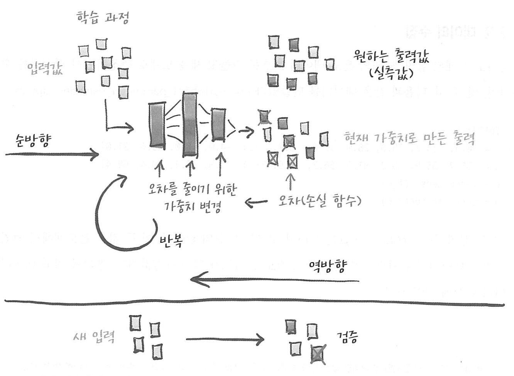
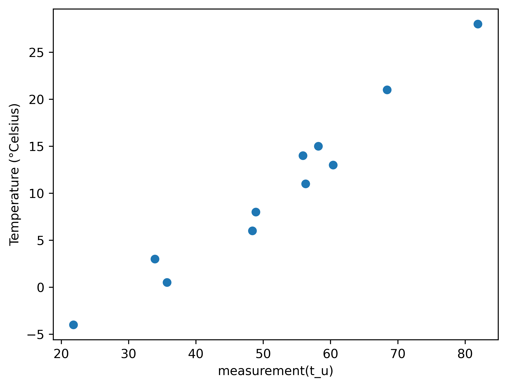
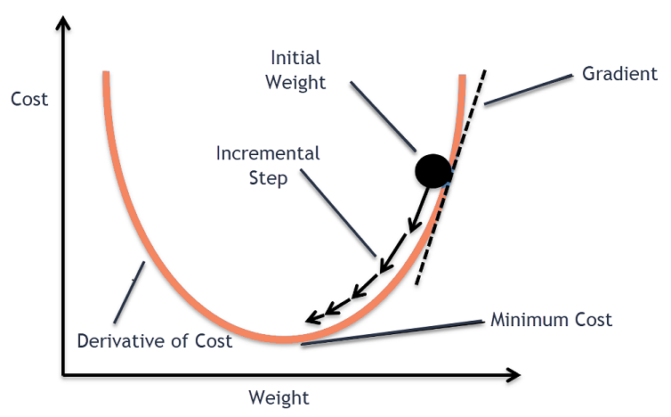
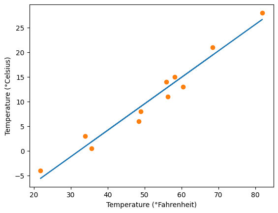

%matplotlib inline
import numpy as np
import torch
torch.set_printoptions(edgeitems=2, linewidth=75)1. 데이터 학습 방법
- 데이터 학습 구조
- 실측자료와 가중치 초깃값이 주어짐
- 모델에 입력 데이터가 들어가고 출력값과 실측값과 비교하여 오차를 계산.
- 모델의 파라미터(가중치)를 최적화하기 위해 가중치를 오차값에 따라 일정 단위(파라미터 별 오류의 기울기)만큼 변경.
- 변경값은 합성함수의 미분값을 연속으로 계산하는 규칙(chain rule)을 통해 정해짐.
- 오차가 줄어드는 방향으로 조정되는데, 데이터에 대한 출력값과 실측값의 오류가 일정 수준 이하로 떨어질 때까지 반복.

2. 온도 예제로 간단한 모델 만들기
- 1. 데이터 수집
단위를 모르는 새로운 온도계와 단위를 알고 있는 온도계를 이용하여 새로운 온도계의 해석
t_c = [0.5, 14.0, 15.0, 28.0, 11.0, 8.0, 3.0, -4.0, 6.0, 13.0, 21.0]
t_u = [35.7, 55.9, 58.2, 81.9, 56.3, 48.9, 33.9, 21.8, 48.4, 60.4, 68.4]
t_c = torch.tensor(t_c)
t_u = torch.tensor(t_u)%matplotlib inline
from matplotlib import pyplot as plt
fig = plt.figure(dpi=100)
plt.xlabel("measurement(t_u)")
plt.ylabel("Temperature (°Celsius)")
plt.plot(t_u.numpy(), t_c.numpy(), 'o')
- 2. 선형모델을 가정하여 파이토치로 해결
def model(t_u, w, b):
return w * t_u + bdef loss_fn(t_p, t_c):
squared_diffs = (t_p - t_c)**2
return squared_diffs.mean() # mean square loss- \(y = |t_p - t_c|\) : 우리가 수렴하고자 하는 경우에 미분값을 정의할 수 없음.
- \(y = (t_p - t_c)^2\) : 0으로 수렴하고자 할 때 더 빨리 수렴 가능.
w = torch.ones(())
b = torch.zeros(())
t_p = model(t_u, w, b)
t_ptensor([35.7000, 55.9000, 58.2000, 81.9000, 56.3000, 48.9000, 33.9000,
21.8000, 48.4000, 60.4000, 68.4000])loss = loss_fn(t_p, t_c)
losstensor(1763.8848)- 3. 손실 줄이기 - 경사 하강법

The linear model assumption is given by $ M = w t_u + b = t_p $
- $ t_c $ : 섭씨 온도 값
- $ t_u $ : 모르는 단위
- $ t_p $ : 모델이 출력한 온도
- w , b : 가중치
- $ M = w * t_u + b = t_p $ : 선형 모델 가정
# 선형 모델
def model(t_u, w, b):
return w * t_u + bw = torch.ones(())
b = torch.zeros(())
t_p = model(t_u, w, b)
t_ptensor([35.7000, 55.9000, 58.2000, 81.9000, 56.3000, 48.9000, 33.9000,
21.8000, 48.4000, 60.4000, 68.4000])\[y = \lvert t_p - t_c \lvert \] 우리가 수렴하고자 하는 경우에 미분값을 정의할 수 없음. \[y = (t_p - t_c)^2\] 0으로 수렴하고자 할 때 더 빨리 수렴 가능.
\[ M = w * t_u + b \approx t_p \]
\[ L = (t_p - t_c)^2 \]
\[ \nabla _{w}L = {\partial{L}\over\partial{w}} = {\partial{L}\over\partial{M}} · {\partial{M}\over\partial{w}}\]
\[ {\partial{L}\over\partial{M}} = 2(t_p - t_c) \quad,\quad {\partial{M}\over\partial{w}} = t_u\]
\[ \nabla _{b}L = {\partial{L}\over\partial{b}} = {\partial{L}\over\partial{M}} · {\partial{M}\over\partial{b}}\]
\[ {\partial{L}\over\partial{M}} = 2(t_p - t_c) \quad,\quad {\partial{M}\over\partial{b}} = 1\]
\[ \nabla _{w,b} \mathcal{L} = ({\partial{L}\over\partial{w}} , {\partial{L}\over\partial{b}}) = ( {\partial{L}\over\partial{M}} · {\partial{M}\over\partial{w}} , {\partial{L}\over\partial{M}} · {\partial{M}\over\partial{b}} )\]
# 손실 함수
def loss_fn(t_p, t_c):
squared_diffs = (t_p - t_c)**2
return squared_diffs.mean()
# dL/dM
def dloss_fn(t_p, t_c):
dsq_diffs = 2 * (t_p - t_c) / t_p.size(0) # 평균의 도함수로 나눔
return dsq_diffs
# dM/dw
def dmodel_dw(t_u, w, b):
return t_u
# dM/db
def dmodel_db(t_u, w, b):
return 1.0
# 종합
def grad_fn(t_u, t_c, t_p, w, b):
dloss_dtp = dloss_fn(t_p, t_c)
dloss_dw = dloss_dtp * dmodel_dw(t_u, w, b)
dloss_db = dloss_dtp * dmodel_db(t_u, w, b)
return torch.stack([dloss_dw.sum(), dloss_db.sum()])- 합 계산은 파라미터를 머델의 전체 입력 벡터에 대해 적용하던 브로드캐스팅의 역순이다
- 전체모델
- epoch는 파라미터를 조정하는 훈련의 수
training_loop(
n_epochs = 100,
learning_rate = 1e-2,
params = torch.tensor([1.0, 0.0]),
t_u = t_u,
t_c = t_c)Epoch 1, Loss 1763.884766
Epoch 2, Loss 5802484.500000
Epoch 3, Loss 19408029696.000000
Epoch 4, Loss 64915905708032.000000
Epoch 5, Loss 217130525461053440.000000
Epoch 6, Loss 726257583152928129024.000000
Epoch 7, Loss 2429183416467662896627712.000000
Epoch 8, Loss 8125122549611731432050262016.000000
Epoch 9, Loss 27176882120842590626938030653440.000000
Epoch 10, Loss 90901105189019073810297959556841472.000000
Epoch 11, Loss inf
Epoch 12, Loss inf
Epoch 13, Loss inf
Epoch 14, Loss inf
Epoch 15, Loss inf
Epoch 16, Loss inf
Epoch 17, Loss inf
Epoch 18, Loss inf
Epoch 19, Loss inf
Epoch 20, Loss inf
Epoch 21, Loss inf
Epoch 22, Loss inf
Epoch 23, Loss nan
Epoch 24, Loss nan
Epoch 25, Loss nan
Epoch 26, Loss nan
Epoch 27, Loss nan
Epoch 28, Loss nan
Epoch 29, Loss nan
Epoch 30, Loss nan
Epoch 31, Loss nan
Epoch 32, Loss nan
Epoch 33, Loss nan
Epoch 34, Loss nan
Epoch 35, Loss nan
Epoch 36, Loss nan
Epoch 37, Loss nan
Epoch 38, Loss nan
Epoch 39, Loss nan
Epoch 40, Loss nan
Epoch 41, Loss nan
Epoch 42, Loss nan
Epoch 43, Loss nan
Epoch 44, Loss nan
Epoch 45, Loss nan
Epoch 46, Loss nan
Epoch 47, Loss nan
Epoch 48, Loss nan
Epoch 49, Loss nan
Epoch 50, Loss nan
Epoch 51, Loss nan
Epoch 52, Loss nan
Epoch 53, Loss nan
Epoch 54, Loss nan
Epoch 55, Loss nan
Epoch 56, Loss nan
Epoch 57, Loss nan
Epoch 58, Loss nan
Epoch 59, Loss nan
Epoch 60, Loss nan
Epoch 61, Loss nan
Epoch 62, Loss nan
Epoch 63, Loss nan
Epoch 64, Loss nan
Epoch 65, Loss nan
Epoch 66, Loss nan
Epoch 67, Loss nan
Epoch 68, Loss nan
Epoch 69, Loss nan
Epoch 70, Loss nan
Epoch 71, Loss nan
Epoch 72, Loss nan
Epoch 73, Loss nan
Epoch 74, Loss nan
Epoch 75, Loss nan
Epoch 76, Loss nan
Epoch 77, Loss nan
Epoch 78, Loss nan
Epoch 79, Loss nan
Epoch 80, Loss nan
Epoch 81, Loss nan
Epoch 82, Loss nan
Epoch 83, Loss nan
Epoch 84, Loss nan
Epoch 85, Loss nan
Epoch 86, Loss nan
Epoch 87, Loss nan
Epoch 88, Loss nan
Epoch 89, Loss nan
Epoch 90, Loss nan
Epoch 91, Loss nan
Epoch 92, Loss nan
Epoch 93, Loss nan
Epoch 94, Loss nan
Epoch 95, Loss nan
Epoch 96, Loss nan
Epoch 97, Loss nan
Epoch 98, Loss nan
Epoch 99, Loss nan
Epoch 100, Loss nantensor([nan, nan])def training_loop(n_epochs, learning_rate, params, t_u, t_c):
for epoch in range(1, n_epochs + 1):
w, b = params
t_p = model(t_u, w, b)
loss = loss_fn(t_p, t_c)
grad = grad_fn(t_u, t_c, t_p, w, b)
params = params - learning_rate * grad
print('Epoch %d, Loss %f' % (epoch, float(loss)))
return params- 과도한 훈련 무한대가 나옴
- params 조정이 너무 커서 앞뒤로 많이 진동하면서 조정 값이 점점 커짐
- 원하는것은 조금씩 점차적으로 params 조정하는 것
- 해답은 learning rate을 작게하면 된다.
training_loop(
n_epochs = 100,
learning_rate = 1e-4,
params = torch.tensor([1.0, 0.0]),
t_u = t_u,
t_c = t_c)Epoch 1, Loss 1763.884766
Epoch 2, Loss 323.090515
Epoch 3, Loss 78.929634
Epoch 4, Loss 37.552845
Epoch 5, Loss 30.540283
Epoch 6, Loss 29.351154
Epoch 7, Loss 29.148884
Epoch 8, Loss 29.113848
Epoch 9, Loss 29.107145
Epoch 10, Loss 29.105247
Epoch 11, Loss 29.104168
Epoch 12, Loss 29.103222
Epoch 13, Loss 29.102295
Epoch 14, Loss 29.101379
Epoch 15, Loss 29.100466
Epoch 16, Loss 29.099548
Epoch 17, Loss 29.098631
Epoch 18, Loss 29.097717
Epoch 19, Loss 29.096796
Epoch 20, Loss 29.095881
Epoch 21, Loss 29.094959
Epoch 22, Loss 29.094049
Epoch 23, Loss 29.093134
Epoch 24, Loss 29.092216
Epoch 25, Loss 29.091301
Epoch 26, Loss 29.090385
Epoch 27, Loss 29.089464
Epoch 28, Loss 29.088551
Epoch 29, Loss 29.087635
Epoch 30, Loss 29.086714
Epoch 31, Loss 29.085804
Epoch 32, Loss 29.084888
Epoch 33, Loss 29.083967
Epoch 34, Loss 29.083057
Epoch 35, Loss 29.082142
Epoch 36, Loss 29.081221
Epoch 37, Loss 29.080309
Epoch 38, Loss 29.079390
Epoch 39, Loss 29.078474
Epoch 40, Loss 29.077562
Epoch 41, Loss 29.076649
Epoch 42, Loss 29.075731
Epoch 43, Loss 29.074812
Epoch 44, Loss 29.073895
Epoch 45, Loss 29.072981
Epoch 46, Loss 29.072069
Epoch 47, Loss 29.071148
Epoch 48, Loss 29.070234
Epoch 49, Loss 29.069323
Epoch 50, Loss 29.068401
Epoch 51, Loss 29.067486
Epoch 52, Loss 29.066566
Epoch 53, Loss 29.065657
Epoch 54, Loss 29.064741
Epoch 55, Loss 29.063826
Epoch 56, Loss 29.062910
Epoch 57, Loss 29.061995
Epoch 58, Loss 29.061079
Epoch 59, Loss 29.060169
Epoch 60, Loss 29.059248
Epoch 61, Loss 29.058336
Epoch 62, Loss 29.057415
Epoch 63, Loss 29.056507
Epoch 64, Loss 29.055586
Epoch 65, Loss 29.054674
Epoch 66, Loss 29.053761
Epoch 67, Loss 29.052843
Epoch 68, Loss 29.051929
Epoch 69, Loss 29.051012
Epoch 70, Loss 29.050098
Epoch 71, Loss 29.049183
Epoch 72, Loss 29.048273
Epoch 73, Loss 29.047350
Epoch 74, Loss 29.046442
Epoch 75, Loss 29.045530
Epoch 76, Loss 29.044611
Epoch 77, Loss 29.043699
Epoch 78, Loss 29.042784
Epoch 79, Loss 29.041870
Epoch 80, Loss 29.040955
Epoch 81, Loss 29.040039
Epoch 82, Loss 29.039122
Epoch 83, Loss 29.038210
Epoch 84, Loss 29.037294
Epoch 85, Loss 29.036379
Epoch 86, Loss 29.035463
Epoch 87, Loss 29.034554
Epoch 88, Loss 29.033636
Epoch 89, Loss 29.032722
Epoch 90, Loss 29.031811
Epoch 91, Loss 29.030895
Epoch 92, Loss 29.029976
Epoch 93, Loss 29.029066
Epoch 94, Loss 29.028151
Epoch 95, Loss 29.027235
Epoch 96, Loss 29.026323
Epoch 97, Loss 29.025410
Epoch 98, Loss 29.024492
Epoch 99, Loss 29.023582
Epoch 100, Loss 29.022667tensor([ 0.2327, -0.0438])- 파라미터 조정이 너무 조금씩이라 손실이 너무 늘게 줄어들다가 결국 멈춘다 작은 웅덩이에 빠진꼴
- 입력 정규화가 필요
- 여기 예제에서는 입력값의 범위를 -1에서 1 사이로 조절,즉 \(t_u\) 에 0.1를 곱하면 해결된다.
t_un = 0.1 * t_utraining_loop(
n_epochs = 100,
learning_rate = 1e-2,
params = torch.tensor([1.0, 0.0]),
t_u = t_un,
t_c = t_c)Epoch 1, Loss 80.364342
Epoch 2, Loss 37.574913
Epoch 3, Loss 30.871077
Epoch 4, Loss 29.756193
Epoch 5, Loss 29.507153
Epoch 6, Loss 29.392456
Epoch 7, Loss 29.298828
Epoch 8, Loss 29.208717
Epoch 9, Loss 29.119415
Epoch 10, Loss 29.030489
Epoch 11, Loss 28.941877
Epoch 12, Loss 28.853565
Epoch 13, Loss 28.765553
Epoch 14, Loss 28.677851
Epoch 15, Loss 28.590431
Epoch 16, Loss 28.503319
Epoch 17, Loss 28.416498
Epoch 18, Loss 28.329973
Epoch 19, Loss 28.243742
Epoch 20, Loss 28.157804
Epoch 21, Loss 28.072151
Epoch 22, Loss 27.986797
Epoch 23, Loss 27.901728
Epoch 24, Loss 27.816950
Epoch 25, Loss 27.732464
Epoch 26, Loss 27.648256
Epoch 27, Loss 27.564344
Epoch 28, Loss 27.480707
Epoch 29, Loss 27.397362
Epoch 30, Loss 27.314295
Epoch 31, Loss 27.231512
Epoch 32, Loss 27.149010
Epoch 33, Loss 27.066790
Epoch 34, Loss 26.984844
Epoch 35, Loss 26.903175
Epoch 36, Loss 26.821791
Epoch 37, Loss 26.740679
Epoch 38, Loss 26.659838
Epoch 39, Loss 26.579279
Epoch 40, Loss 26.498987
Epoch 41, Loss 26.418974
Epoch 42, Loss 26.339228
Epoch 43, Loss 26.259754
Epoch 44, Loss 26.180548
Epoch 45, Loss 26.101616
Epoch 46, Loss 26.022947
Epoch 47, Loss 25.944544
Epoch 48, Loss 25.866417
Epoch 49, Loss 25.788549
Epoch 50, Loss 25.710938
Epoch 51, Loss 25.633600
Epoch 52, Loss 25.556524
Epoch 53, Loss 25.479700
Epoch 54, Loss 25.403149
Epoch 55, Loss 25.326851
Epoch 56, Loss 25.250811
Epoch 57, Loss 25.175035
Epoch 58, Loss 25.099512
Epoch 59, Loss 25.024248
Epoch 60, Loss 24.949236
Epoch 61, Loss 24.874483
Epoch 62, Loss 24.799976
Epoch 63, Loss 24.725737
Epoch 64, Loss 24.651739
Epoch 65, Loss 24.577986
Epoch 66, Loss 24.504494
Epoch 67, Loss 24.431252
Epoch 68, Loss 24.358257
Epoch 69, Loss 24.285505
Epoch 70, Loss 24.212999
Epoch 71, Loss 24.140741
Epoch 72, Loss 24.068733
Epoch 73, Loss 23.996971
Epoch 74, Loss 23.925446
Epoch 75, Loss 23.854168
Epoch 76, Loss 23.783125
Epoch 77, Loss 23.712328
Epoch 78, Loss 23.641773
Epoch 79, Loss 23.571455
Epoch 80, Loss 23.501379
Epoch 81, Loss 23.431538
Epoch 82, Loss 23.361937
Epoch 83, Loss 23.292570
Epoch 84, Loss 23.223436
Epoch 85, Loss 23.154541
Epoch 86, Loss 23.085882
Epoch 87, Loss 23.017447
Epoch 88, Loss 22.949251
Epoch 89, Loss 22.881283
Epoch 90, Loss 22.813549
Epoch 91, Loss 22.746044
Epoch 92, Loss 22.678766
Epoch 93, Loss 22.611717
Epoch 94, Loss 22.544899
Epoch 95, Loss 22.478306
Epoch 96, Loss 22.411934
Epoch 97, Loss 22.345793
Epoch 98, Loss 22.279875
Epoch 99, Loss 22.214186
Epoch 100, Loss 22.148710tensor([ 2.7553, -2.5162])- 정확한 학습을 위해 epoch를 올려본다
params = training_loop(
n_epochs = 5000,
learning_rate = 1e-2,
params = torch.tensor([1.0, 0.0]),
t_u = t_un,
t_c = t_c)
paramsEpoch 1, Loss 80.364342
Epoch 2, Loss 37.574913
Epoch 3, Loss 30.871077
Epoch 4, Loss 29.756193
Epoch 5, Loss 29.507153
Epoch 6, Loss 29.392456
Epoch 7, Loss 29.298828
Epoch 8, Loss 29.208717
Epoch 9, Loss 29.119415
Epoch 10, Loss 29.030489
Epoch 11, Loss 28.941877
Epoch 12, Loss 28.853565
Epoch 13, Loss 28.765553
Epoch 14, Loss 28.677851
Epoch 15, Loss 28.590431
Epoch 16, Loss 28.503319
Epoch 17, Loss 28.416498
Epoch 18, Loss 28.329973
Epoch 19, Loss 28.243742
Epoch 20, Loss 28.157804
Epoch 21, Loss 28.072151
Epoch 22, Loss 27.986797
Epoch 23, Loss 27.901728
Epoch 24, Loss 27.816950
Epoch 25, Loss 27.732464
Epoch 26, Loss 27.648256
Epoch 27, Loss 27.564344
Epoch 28, Loss 27.480707
Epoch 29, Loss 27.397362
Epoch 30, Loss 27.314295
Epoch 31, Loss 27.231512
Epoch 32, Loss 27.149010
Epoch 33, Loss 27.066790
Epoch 34, Loss 26.984844
Epoch 35, Loss 26.903175
Epoch 36, Loss 26.821791
Epoch 37, Loss 26.740679
Epoch 38, Loss 26.659838
Epoch 39, Loss 26.579279
Epoch 40, Loss 26.498987
Epoch 41, Loss 26.418974
Epoch 42, Loss 26.339228
Epoch 43, Loss 26.259754
Epoch 44, Loss 26.180548
Epoch 45, Loss 26.101616
Epoch 46, Loss 26.022947
Epoch 47, Loss 25.944544
Epoch 48, Loss 25.866417
Epoch 49, Loss 25.788549
Epoch 50, Loss 25.710938
Epoch 51, Loss 25.633600
Epoch 52, Loss 25.556524
Epoch 53, Loss 25.479700
Epoch 54, Loss 25.403149
Epoch 55, Loss 25.326851
Epoch 56, Loss 25.250811
Epoch 57, Loss 25.175035
Epoch 58, Loss 25.099512
Epoch 59, Loss 25.024248
Epoch 60, Loss 24.949236
Epoch 61, Loss 24.874483
Epoch 62, Loss 24.799976
Epoch 63, Loss 24.725737
Epoch 64, Loss 24.651739
Epoch 65, Loss 24.577986
Epoch 66, Loss 24.504494
Epoch 67, Loss 24.431252
Epoch 68, Loss 24.358257
Epoch 69, Loss 24.285505
Epoch 70, Loss 24.212999
Epoch 71, Loss 24.140741
Epoch 72, Loss 24.068733
Epoch 73, Loss 23.996971
Epoch 74, Loss 23.925446
Epoch 75, Loss 23.854168
Epoch 76, Loss 23.783125
Epoch 77, Loss 23.712328
Epoch 78, Loss 23.641773
Epoch 79, Loss 23.571455
Epoch 80, Loss 23.501379
Epoch 81, Loss 23.431538
Epoch 82, Loss 23.361937
Epoch 83, Loss 23.292570
Epoch 84, Loss 23.223436
Epoch 85, Loss 23.154541
Epoch 86, Loss 23.085882
Epoch 87, Loss 23.017447
Epoch 88, Loss 22.949251
Epoch 89, Loss 22.881283
Epoch 90, Loss 22.813549
Epoch 91, Loss 22.746044
Epoch 92, Loss 22.678766
Epoch 93, Loss 22.611717
Epoch 94, Loss 22.544899
Epoch 95, Loss 22.478306
Epoch 96, Loss 22.411934
Epoch 97, Loss 22.345793
Epoch 98, Loss 22.279875
Epoch 99, Loss 22.214186
Epoch 100, Loss 22.148710
Epoch 101, Loss 22.083464
Epoch 102, Loss 22.018436
Epoch 103, Loss 21.953632
Epoch 104, Loss 21.889046
Epoch 105, Loss 21.824677
Epoch 106, Loss 21.760529
Epoch 107, Loss 21.696600
Epoch 108, Loss 21.632883
Epoch 109, Loss 21.569389
Epoch 110, Loss 21.506102
Epoch 111, Loss 21.443037
Epoch 112, Loss 21.380186
Epoch 113, Loss 21.317549
Epoch 114, Loss 21.255117
Epoch 115, Loss 21.192907
Epoch 116, Loss 21.130898
Epoch 117, Loss 21.069105
Epoch 118, Loss 21.007526
Epoch 119, Loss 20.946150
Epoch 120, Loss 20.884981
Epoch 121, Loss 20.824024
Epoch 122, Loss 20.763273
Epoch 123, Loss 20.702728
Epoch 124, Loss 20.642384
Epoch 125, Loss 20.582249
Epoch 126, Loss 20.522322
Epoch 127, Loss 20.462593
Epoch 128, Loss 20.403069
Epoch 129, Loss 20.343742
Epoch 130, Loss 20.284624
Epoch 131, Loss 20.225702
Epoch 132, Loss 20.166981
Epoch 133, Loss 20.108461
Epoch 134, Loss 20.050137
Epoch 135, Loss 19.992016
Epoch 136, Loss 19.934086
Epoch 137, Loss 19.876352
Epoch 138, Loss 19.818823
Epoch 139, Loss 19.761480
Epoch 140, Loss 19.704336
Epoch 141, Loss 19.647385
Epoch 142, Loss 19.590626
Epoch 143, Loss 19.534061
Epoch 144, Loss 19.477690
Epoch 145, Loss 19.421507
Epoch 146, Loss 19.365515
Epoch 147, Loss 19.309715
Epoch 148, Loss 19.254107
Epoch 149, Loss 19.198685
Epoch 150, Loss 19.143446
Epoch 151, Loss 19.088402
Epoch 152, Loss 19.033543
Epoch 153, Loss 18.978868
Epoch 154, Loss 18.924377
Epoch 155, Loss 18.870081
Epoch 156, Loss 18.815960
Epoch 157, Loss 18.762022
Epoch 158, Loss 18.708271
Epoch 159, Loss 18.654699
Epoch 160, Loss 18.601313
Epoch 161, Loss 18.548109
Epoch 162, Loss 18.495085
Epoch 163, Loss 18.442236
Epoch 164, Loss 18.389570
Epoch 165, Loss 18.337080
Epoch 166, Loss 18.284777
Epoch 167, Loss 18.232641
Epoch 168, Loss 18.180685
Epoch 169, Loss 18.128906
Epoch 170, Loss 18.077301
Epoch 171, Loss 18.025877
Epoch 172, Loss 17.974623
Epoch 173, Loss 17.923546
Epoch 174, Loss 17.872643
Epoch 175, Loss 17.821909
Epoch 176, Loss 17.771345
Epoch 177, Loss 17.720955
Epoch 178, Loss 17.670738
Epoch 179, Loss 17.620689
Epoch 180, Loss 17.570814
Epoch 181, Loss 17.521103
Epoch 182, Loss 17.471565
Epoch 183, Loss 17.422192
Epoch 184, Loss 17.372993
Epoch 185, Loss 17.323954
Epoch 186, Loss 17.275084
Epoch 187, Loss 17.226379
Epoch 188, Loss 17.177839
Epoch 189, Loss 17.129463
Epoch 190, Loss 17.081255
Epoch 191, Loss 17.033209
Epoch 192, Loss 16.985327
Epoch 193, Loss 16.937605
Epoch 194, Loss 16.890047
Epoch 195, Loss 16.842649
Epoch 196, Loss 16.795412
Epoch 197, Loss 16.748339
Epoch 198, Loss 16.701422
Epoch 199, Loss 16.654661
Epoch 200, Loss 16.608067
Epoch 201, Loss 16.561623
Epoch 202, Loss 16.515343
Epoch 203, Loss 16.469219
Epoch 204, Loss 16.423248
Epoch 205, Loss 16.377434
Epoch 206, Loss 16.331776
Epoch 207, Loss 16.286276
Epoch 208, Loss 16.240929
Epoch 209, Loss 16.195732
Epoch 210, Loss 16.150694
Epoch 211, Loss 16.105806
Epoch 212, Loss 16.061073
Epoch 213, Loss 16.016487
Epoch 214, Loss 15.972058
Epoch 215, Loss 15.927776
Epoch 216, Loss 15.883645
Epoch 217, Loss 15.839664
Epoch 218, Loss 15.795832
Epoch 219, Loss 15.752152
Epoch 220, Loss 15.708612
Epoch 221, Loss 15.665226
Epoch 222, Loss 15.621990
Epoch 223, Loss 15.578897
Epoch 224, Loss 15.535950
Epoch 225, Loss 15.493150
Epoch 226, Loss 15.450495
Epoch 227, Loss 15.407981
Epoch 228, Loss 15.365616
Epoch 229, Loss 15.323396
Epoch 230, Loss 15.281317
Epoch 231, Loss 15.239380
Epoch 232, Loss 15.197585
Epoch 233, Loss 15.155932
Epoch 234, Loss 15.114425
Epoch 235, Loss 15.073055
Epoch 236, Loss 15.031823
Epoch 237, Loss 14.990734
Epoch 238, Loss 14.949784
Epoch 239, Loss 14.908973
Epoch 240, Loss 14.868304
Epoch 241, Loss 14.827767
Epoch 242, Loss 14.787370
Epoch 243, Loss 14.747109
Epoch 244, Loss 14.706989
Epoch 245, Loss 14.667002
Epoch 246, Loss 14.627151
Epoch 247, Loss 14.587436
Epoch 248, Loss 14.547855
Epoch 249, Loss 14.508409
Epoch 250, Loss 14.469097
Epoch 251, Loss 14.429920
Epoch 252, Loss 14.390870
Epoch 253, Loss 14.351956
Epoch 254, Loss 14.313177
Epoch 255, Loss 14.274529
Epoch 256, Loss 14.236009
Epoch 257, Loss 14.197620
Epoch 258, Loss 14.159363
Epoch 259, Loss 14.121234
Epoch 260, Loss 14.083236
Epoch 261, Loss 14.045367
Epoch 262, Loss 14.007627
Epoch 263, Loss 13.970016
Epoch 264, Loss 13.932531
Epoch 265, Loss 13.895172
Epoch 266, Loss 13.857944
Epoch 267, Loss 13.820837
Epoch 268, Loss 13.783858
Epoch 269, Loss 13.747006
Epoch 270, Loss 13.710278
Epoch 271, Loss 13.673676
Epoch 272, Loss 13.637196
Epoch 273, Loss 13.600842
Epoch 274, Loss 13.564609
Epoch 275, Loss 13.528501
Epoch 276, Loss 13.492514
Epoch 277, Loss 13.456651
Epoch 278, Loss 13.420910
Epoch 279, Loss 13.385287
Epoch 280, Loss 13.349789
Epoch 281, Loss 13.314407
Epoch 282, Loss 13.279150
Epoch 283, Loss 13.244009
Epoch 284, Loss 13.208991
Epoch 285, Loss 13.174088
Epoch 286, Loss 13.139307
Epoch 287, Loss 13.104639
Epoch 288, Loss 13.070092
Epoch 289, Loss 13.035664
Epoch 290, Loss 13.001349
Epoch 291, Loss 12.967152
Epoch 292, Loss 12.933075
Epoch 293, Loss 12.899109
Epoch 294, Loss 12.865259
Epoch 295, Loss 12.831525
Epoch 296, Loss 12.797904
Epoch 297, Loss 12.764399
Epoch 298, Loss 12.731007
Epoch 299, Loss 12.697727
Epoch 300, Loss 12.664559
Epoch 301, Loss 12.631507
Epoch 302, Loss 12.598568
Epoch 303, Loss 12.565738
Epoch 304, Loss 12.533021
Epoch 305, Loss 12.500413
Epoch 306, Loss 12.467919
Epoch 307, Loss 12.435532
Epoch 308, Loss 12.403256
Epoch 309, Loss 12.371090
Epoch 310, Loss 12.339031
Epoch 311, Loss 12.307082
Epoch 312, Loss 12.275247
Epoch 313, Loss 12.243509
Epoch 314, Loss 12.211887
Epoch 315, Loss 12.180370
Epoch 316, Loss 12.148962
Epoch 317, Loss 12.117657
Epoch 318, Loss 12.086462
Epoch 319, Loss 12.055373
Epoch 320, Loss 12.024384
Epoch 321, Loss 11.993508
Epoch 322, Loss 11.962731
Epoch 323, Loss 11.932056
Epoch 324, Loss 11.901492
Epoch 325, Loss 11.871029
Epoch 326, Loss 11.840671
Epoch 327, Loss 11.810413
Epoch 328, Loss 11.780257
Epoch 329, Loss 11.750208
Epoch 330, Loss 11.720258
Epoch 331, Loss 11.690412
Epoch 332, Loss 11.660664
Epoch 333, Loss 11.631015
Epoch 334, Loss 11.601473
Epoch 335, Loss 11.572030
Epoch 336, Loss 11.542686
Epoch 337, Loss 11.513440
Epoch 338, Loss 11.484293
Epoch 339, Loss 11.455246
Epoch 340, Loss 11.426300
Epoch 341, Loss 11.397448
Epoch 342, Loss 11.368696
Epoch 343, Loss 11.340043
Epoch 344, Loss 11.311487
Epoch 345, Loss 11.283028
Epoch 346, Loss 11.254662
Epoch 347, Loss 11.226396
Epoch 348, Loss 11.198220
Epoch 349, Loss 11.170150
Epoch 350, Loss 11.142170
Epoch 351, Loss 11.114282
Epoch 352, Loss 11.086491
Epoch 353, Loss 11.058797
Epoch 354, Loss 11.031193
Epoch 355, Loss 11.003686
Epoch 356, Loss 10.976270
Epoch 357, Loss 10.948948
Epoch 358, Loss 10.921719
Epoch 359, Loss 10.894581
Epoch 360, Loss 10.867537
Epoch 361, Loss 10.840583
Epoch 362, Loss 10.813721
Epoch 363, Loss 10.786950
Epoch 364, Loss 10.760270
Epoch 365, Loss 10.733681
Epoch 366, Loss 10.707184
Epoch 367, Loss 10.680775
Epoch 368, Loss 10.654454
Epoch 369, Loss 10.628225
Epoch 370, Loss 10.602086
Epoch 371, Loss 10.576034
Epoch 372, Loss 10.550071
Epoch 373, Loss 10.524194
Epoch 374, Loss 10.498409
Epoch 375, Loss 10.472707
Epoch 376, Loss 10.447093
Epoch 377, Loss 10.421569
Epoch 378, Loss 10.396132
Epoch 379, Loss 10.370779
Epoch 380, Loss 10.345510
Epoch 381, Loss 10.320328
Epoch 382, Loss 10.295234
Epoch 383, Loss 10.270224
Epoch 384, Loss 10.245296
Epoch 385, Loss 10.220457
Epoch 386, Loss 10.195701
Epoch 387, Loss 10.171029
Epoch 388, Loss 10.146438
Epoch 389, Loss 10.121935
Epoch 390, Loss 10.097512
Epoch 391, Loss 10.073173
Epoch 392, Loss 10.048919
Epoch 393, Loss 10.024743
Epoch 394, Loss 10.000652
Epoch 395, Loss 9.976640
Epoch 396, Loss 9.952712
Epoch 397, Loss 9.928862
Epoch 398, Loss 9.905093
Epoch 399, Loss 9.881409
Epoch 400, Loss 9.857804
Epoch 401, Loss 9.834277
Epoch 402, Loss 9.810831
Epoch 403, Loss 9.787466
Epoch 404, Loss 9.764176
Epoch 405, Loss 9.740973
Epoch 406, Loss 9.717843
Epoch 407, Loss 9.694793
Epoch 408, Loss 9.671824
Epoch 409, Loss 9.648926
Epoch 410, Loss 9.626110
Epoch 411, Loss 9.603373
Epoch 412, Loss 9.580709
Epoch 413, Loss 9.558125
Epoch 414, Loss 9.535617
Epoch 415, Loss 9.513184
Epoch 416, Loss 9.490829
Epoch 417, Loss 9.468551
Epoch 418, Loss 9.446347
Epoch 419, Loss 9.424216
Epoch 420, Loss 9.402164
Epoch 421, Loss 9.380184
Epoch 422, Loss 9.358282
Epoch 423, Loss 9.336448
Epoch 424, Loss 9.314695
Epoch 425, Loss 9.293012
Epoch 426, Loss 9.271403
Epoch 427, Loss 9.249871
Epoch 428, Loss 9.228410
Epoch 429, Loss 9.207022
Epoch 430, Loss 9.185704
Epoch 431, Loss 9.164462
Epoch 432, Loss 9.143289
Epoch 433, Loss 9.122189
Epoch 434, Loss 9.101160
Epoch 435, Loss 9.080204
Epoch 436, Loss 9.059318
Epoch 437, Loss 9.038502
Epoch 438, Loss 9.017757
Epoch 439, Loss 8.997084
Epoch 440, Loss 8.976479
Epoch 441, Loss 8.955944
Epoch 442, Loss 8.935480
Epoch 443, Loss 8.915089
Epoch 444, Loss 8.894762
Epoch 445, Loss 8.874508
Epoch 446, Loss 8.854318
Epoch 447, Loss 8.834197
Epoch 448, Loss 8.814149
Epoch 449, Loss 8.794162
Epoch 450, Loss 8.774253
Epoch 451, Loss 8.754405
Epoch 452, Loss 8.734623
Epoch 453, Loss 8.714911
Epoch 454, Loss 8.695266
Epoch 455, Loss 8.675688
Epoch 456, Loss 8.656173
Epoch 457, Loss 8.636729
Epoch 458, Loss 8.617347
Epoch 459, Loss 8.598029
Epoch 460, Loss 8.578781
Epoch 461, Loss 8.559597
Epoch 462, Loss 8.540479
Epoch 463, Loss 8.521426
Epoch 464, Loss 8.502437
Epoch 465, Loss 8.483517
Epoch 466, Loss 8.464652
Epoch 467, Loss 8.445858
Epoch 468, Loss 8.427128
Epoch 469, Loss 8.408454
Epoch 470, Loss 8.389848
Epoch 471, Loss 8.371305
Epoch 472, Loss 8.352828
Epoch 473, Loss 8.334409
Epoch 474, Loss 8.316054
Epoch 475, Loss 8.297764
Epoch 476, Loss 8.279534
Epoch 477, Loss 8.261369
Epoch 478, Loss 8.243259
Epoch 479, Loss 8.225213
Epoch 480, Loss 8.207231
Epoch 481, Loss 8.189310
Epoch 482, Loss 8.171452
Epoch 483, Loss 8.153647
Epoch 484, Loss 8.135906
Epoch 485, Loss 8.118226
Epoch 486, Loss 8.100607
Epoch 487, Loss 8.083045
Epoch 488, Loss 8.065548
Epoch 489, Loss 8.048104
Epoch 490, Loss 8.030724
Epoch 491, Loss 8.013401
Epoch 492, Loss 7.996137
Epoch 493, Loss 7.978930
Epoch 494, Loss 7.961783
Epoch 495, Loss 7.944690
Epoch 496, Loss 7.927663
Epoch 497, Loss 7.910690
Epoch 498, Loss 7.893775
Epoch 499, Loss 7.876915
Epoch 500, Loss 7.860115
Epoch 501, Loss 7.843369
Epoch 502, Loss 7.826683
Epoch 503, Loss 7.810053
Epoch 504, Loss 7.793481
Epoch 505, Loss 7.776962
Epoch 506, Loss 7.760498
Epoch 507, Loss 7.744092
Epoch 508, Loss 7.727745
Epoch 509, Loss 7.711449
Epoch 510, Loss 7.695211
Epoch 511, Loss 7.679024
Epoch 512, Loss 7.662896
Epoch 513, Loss 7.646820
Epoch 514, Loss 7.630803
Epoch 515, Loss 7.614836
Epoch 516, Loss 7.598925
Epoch 517, Loss 7.583069
Epoch 518, Loss 7.567265
Epoch 519, Loss 7.551515
Epoch 520, Loss 7.535818
Epoch 521, Loss 7.520176
Epoch 522, Loss 7.504587
Epoch 523, Loss 7.489048
Epoch 524, Loss 7.473566
Epoch 525, Loss 7.458135
Epoch 526, Loss 7.442750
Epoch 527, Loss 7.427427
Epoch 528, Loss 7.412152
Epoch 529, Loss 7.396928
Epoch 530, Loss 7.381757
Epoch 531, Loss 7.366637
Epoch 532, Loss 7.351567
Epoch 533, Loss 7.336549
Epoch 534, Loss 7.321584
Epoch 535, Loss 7.306671
Epoch 536, Loss 7.291804
Epoch 537, Loss 7.276989
Epoch 538, Loss 7.262227
Epoch 539, Loss 7.247512
Epoch 540, Loss 7.232845
Epoch 541, Loss 7.218231
Epoch 542, Loss 7.203665
Epoch 543, Loss 7.189151
Epoch 544, Loss 7.174683
Epoch 545, Loss 7.160266
Epoch 546, Loss 7.145897
Epoch 547, Loss 7.131581
Epoch 548, Loss 7.117305
Epoch 549, Loss 7.103083
Epoch 550, Loss 7.088911
Epoch 551, Loss 7.074785
Epoch 552, Loss 7.060707
Epoch 553, Loss 7.046676
Epoch 554, Loss 7.032695
Epoch 555, Loss 7.018755
Epoch 556, Loss 7.004870
Epoch 557, Loss 6.991028
Epoch 558, Loss 6.977232
Epoch 559, Loss 6.963488
Epoch 560, Loss 6.949787
Epoch 561, Loss 6.936135
Epoch 562, Loss 6.922528
Epoch 563, Loss 6.908967
Epoch 564, Loss 6.895452
Epoch 565, Loss 6.881980
Epoch 566, Loss 6.868559
Epoch 567, Loss 6.855180
Epoch 568, Loss 6.841848
Epoch 569, Loss 6.828561
Epoch 570, Loss 6.815319
Epoch 571, Loss 6.802118
Epoch 572, Loss 6.788968
Epoch 573, Loss 6.775864
Epoch 574, Loss 6.762797
Epoch 575, Loss 6.749779
Epoch 576, Loss 6.736804
Epoch 577, Loss 6.723876
Epoch 578, Loss 6.710987
Epoch 579, Loss 6.698142
Epoch 580, Loss 6.685345
Epoch 581, Loss 6.672589
Epoch 582, Loss 6.659873
Epoch 583, Loss 6.647207
Epoch 584, Loss 6.634578
Epoch 585, Loss 6.621994
Epoch 586, Loss 6.609454
Epoch 587, Loss 6.596953
Epoch 588, Loss 6.584499
Epoch 589, Loss 6.572087
Epoch 590, Loss 6.559712
Epoch 591, Loss 6.547384
Epoch 592, Loss 6.535097
Epoch 593, Loss 6.522851
Epoch 594, Loss 6.510646
Epoch 595, Loss 6.498482
Epoch 596, Loss 6.486361
Epoch 597, Loss 6.474282
Epoch 598, Loss 6.462241
Epoch 599, Loss 6.450243
Epoch 600, Loss 6.438284
Epoch 601, Loss 6.426368
Epoch 602, Loss 6.414490
Epoch 603, Loss 6.402653
Epoch 604, Loss 6.390859
Epoch 605, Loss 6.379103
Epoch 606, Loss 6.367385
Epoch 607, Loss 6.355706
Epoch 608, Loss 6.344070
Epoch 609, Loss 6.332472
Epoch 610, Loss 6.320912
Epoch 611, Loss 6.309395
Epoch 612, Loss 6.297915
Epoch 613, Loss 6.286473
Epoch 614, Loss 6.275074
Epoch 615, Loss 6.263708
Epoch 616, Loss 6.252382
Epoch 617, Loss 6.241098
Epoch 618, Loss 6.229849
Epoch 619, Loss 6.218639
Epoch 620, Loss 6.207470
Epoch 621, Loss 6.196334
Epoch 622, Loss 6.185240
Epoch 623, Loss 6.174181
Epoch 624, Loss 6.163159
Epoch 625, Loss 6.152177
Epoch 626, Loss 6.141230
Epoch 627, Loss 6.130322
Epoch 628, Loss 6.119448
Epoch 629, Loss 6.108614
Epoch 630, Loss 6.097815
Epoch 631, Loss 6.087054
Epoch 632, Loss 6.076329
Epoch 633, Loss 6.065644
Epoch 634, Loss 6.054988
Epoch 635, Loss 6.044372
Epoch 636, Loss 6.033794
Epoch 637, Loss 6.023247
Epoch 638, Loss 6.012738
Epoch 639, Loss 6.002264
Epoch 640, Loss 5.991828
Epoch 641, Loss 5.981425
Epoch 642, Loss 5.971058
Epoch 643, Loss 5.960727
Epoch 644, Loss 5.950432
Epoch 645, Loss 5.940171
Epoch 646, Loss 5.929944
Epoch 647, Loss 5.919752
Epoch 648, Loss 5.909596
Epoch 649, Loss 5.899472
Epoch 650, Loss 5.889383
Epoch 651, Loss 5.879326
Epoch 652, Loss 5.869310
Epoch 653, Loss 5.859322
Epoch 654, Loss 5.849374
Epoch 655, Loss 5.839453
Epoch 656, Loss 5.829570
Epoch 657, Loss 5.819718
Epoch 658, Loss 5.809901
Epoch 659, Loss 5.800116
Epoch 660, Loss 5.790367
Epoch 661, Loss 5.780646
Epoch 662, Loss 5.770962
Epoch 663, Loss 5.761312
Epoch 664, Loss 5.751694
Epoch 665, Loss 5.742105
Epoch 666, Loss 5.732550
Epoch 667, Loss 5.723031
Epoch 668, Loss 5.713540
Epoch 669, Loss 5.704083
Epoch 670, Loss 5.694659
Epoch 671, Loss 5.685266
Epoch 672, Loss 5.675904
Epoch 673, Loss 5.666573
Epoch 674, Loss 5.657277
Epoch 675, Loss 5.648010
Epoch 676, Loss 5.638776
Epoch 677, Loss 5.629574
Epoch 678, Loss 5.620402
Epoch 679, Loss 5.611260
Epoch 680, Loss 5.602149
Epoch 681, Loss 5.593071
Epoch 682, Loss 5.584022
Epoch 683, Loss 5.575005
Epoch 684, Loss 5.566019
Epoch 685, Loss 5.557063
Epoch 686, Loss 5.548136
Epoch 687, Loss 5.539241
Epoch 688, Loss 5.530376
Epoch 689, Loss 5.521540
Epoch 690, Loss 5.512734
Epoch 691, Loss 5.503958
Epoch 692, Loss 5.495212
Epoch 693, Loss 5.486496
Epoch 694, Loss 5.477808
Epoch 695, Loss 5.469152
Epoch 696, Loss 5.460525
Epoch 697, Loss 5.451928
Epoch 698, Loss 5.443358
Epoch 699, Loss 5.434819
Epoch 700, Loss 5.426309
Epoch 701, Loss 5.417827
Epoch 702, Loss 5.409372
Epoch 703, Loss 5.400949
Epoch 704, Loss 5.392550
Epoch 705, Loss 5.384184
Epoch 706, Loss 5.375846
Epoch 707, Loss 5.367537
Epoch 708, Loss 5.359253
Epoch 709, Loss 5.350999
Epoch 710, Loss 5.342772
Epoch 711, Loss 5.334575
Epoch 712, Loss 5.326402
Epoch 713, Loss 5.318260
Epoch 714, Loss 5.310144
Epoch 715, Loss 5.302055
Epoch 716, Loss 5.293994
Epoch 717, Loss 5.285964
Epoch 718, Loss 5.277958
Epoch 719, Loss 5.269979
Epoch 720, Loss 5.262027
Epoch 721, Loss 5.254103
Epoch 722, Loss 5.246205
Epoch 723, Loss 5.238335
Epoch 724, Loss 5.230492
Epoch 725, Loss 5.222674
Epoch 726, Loss 5.214881
Epoch 727, Loss 5.207120
Epoch 728, Loss 5.199381
Epoch 729, Loss 5.191670
Epoch 730, Loss 5.183985
Epoch 731, Loss 5.176324
Epoch 732, Loss 5.168688
Epoch 733, Loss 5.161084
Epoch 734, Loss 5.153500
Epoch 735, Loss 5.145944
Epoch 736, Loss 5.138413
Epoch 737, Loss 5.130910
Epoch 738, Loss 5.123428
Epoch 739, Loss 5.115978
Epoch 740, Loss 5.108547
Epoch 741, Loss 5.101143
Epoch 742, Loss 5.093765
Epoch 743, Loss 5.086414
Epoch 744, Loss 5.079086
Epoch 745, Loss 5.071781
Epoch 746, Loss 5.064505
Epoch 747, Loss 5.057247
Epoch 748, Loss 5.050021
Epoch 749, Loss 5.042817
Epoch 750, Loss 5.035636
Epoch 751, Loss 5.028476
Epoch 752, Loss 5.021346
Epoch 753, Loss 5.014240
Epoch 754, Loss 5.007157
Epoch 755, Loss 5.000099
Epoch 756, Loss 4.993064
Epoch 757, Loss 4.986051
Epoch 758, Loss 4.979064
Epoch 759, Loss 4.972100
Epoch 760, Loss 4.965159
Epoch 761, Loss 4.958245
Epoch 762, Loss 4.951351
Epoch 763, Loss 4.944479
Epoch 764, Loss 4.937633
Epoch 765, Loss 4.930812
Epoch 766, Loss 4.924009
Epoch 767, Loss 4.917234
Epoch 768, Loss 4.910480
Epoch 769, Loss 4.903749
Epoch 770, Loss 4.897040
Epoch 771, Loss 4.890356
Epoch 772, Loss 4.883692
Epoch 773, Loss 4.877052
Epoch 774, Loss 4.870436
Epoch 775, Loss 4.863839
Epoch 776, Loss 4.857268
Epoch 777, Loss 4.850718
Epoch 778, Loss 4.844189
Epoch 779, Loss 4.837683
Epoch 780, Loss 4.831196
Epoch 781, Loss 4.824737
Epoch 782, Loss 4.818298
Epoch 783, Loss 4.811879
Epoch 784, Loss 4.805481
Epoch 785, Loss 4.799106
Epoch 786, Loss 4.792755
Epoch 787, Loss 4.786422
Epoch 788, Loss 4.780112
Epoch 789, Loss 4.773824
Epoch 790, Loss 4.767558
Epoch 791, Loss 4.761312
Epoch 792, Loss 4.755087
Epoch 793, Loss 4.748885
Epoch 794, Loss 4.742700
Epoch 795, Loss 4.736537
Epoch 796, Loss 4.730397
Epoch 797, Loss 4.724279
Epoch 798, Loss 4.718181
Epoch 799, Loss 4.712101
Epoch 800, Loss 4.706046
Epoch 801, Loss 4.700009
Epoch 802, Loss 4.693990
Epoch 803, Loss 4.687995
Epoch 804, Loss 4.682020
Epoch 805, Loss 4.676063
Epoch 806, Loss 4.670130
Epoch 807, Loss 4.664214
Epoch 808, Loss 4.658319
Epoch 809, Loss 4.652445
Epoch 810, Loss 4.646592
Epoch 811, Loss 4.640754
Epoch 812, Loss 4.634938
Epoch 813, Loss 4.629142
Epoch 814, Loss 4.623367
Epoch 815, Loss 4.617611
Epoch 816, Loss 4.611872
Epoch 817, Loss 4.606156
Epoch 818, Loss 4.600458
Epoch 819, Loss 4.594780
Epoch 820, Loss 4.589119
Epoch 821, Loss 4.583479
Epoch 822, Loss 4.577857
Epoch 823, Loss 4.572256
Epoch 824, Loss 4.566675
Epoch 825, Loss 4.561108
Epoch 826, Loss 4.555565
Epoch 827, Loss 4.550039
Epoch 828, Loss 4.544534
Epoch 829, Loss 4.539044
Epoch 830, Loss 4.533575
Epoch 831, Loss 4.528122
Epoch 832, Loss 4.522691
Epoch 833, Loss 4.517276
Epoch 834, Loss 4.511879
Epoch 835, Loss 4.506505
Epoch 836, Loss 4.501141
Epoch 837, Loss 4.495801
Epoch 838, Loss 4.490475
Epoch 839, Loss 4.485169
Epoch 840, Loss 4.479884
Epoch 841, Loss 4.474613
Epoch 842, Loss 4.469364
Epoch 843, Loss 4.464130
Epoch 844, Loss 4.458913
Epoch 845, Loss 4.453716
Epoch 846, Loss 4.448535
Epoch 847, Loss 4.443372
Epoch 848, Loss 4.438226
Epoch 849, Loss 4.433099
Epoch 850, Loss 4.427990
Epoch 851, Loss 4.422897
Epoch 852, Loss 4.417819
Epoch 853, Loss 4.412762
Epoch 854, Loss 4.407721
Epoch 855, Loss 4.402698
Epoch 856, Loss 4.397688
Epoch 857, Loss 4.392697
Epoch 858, Loss 4.387725
Epoch 859, Loss 4.382770
Epoch 860, Loss 4.377828
Epoch 861, Loss 4.372905
Epoch 862, Loss 4.368000
Epoch 863, Loss 4.363111
Epoch 864, Loss 4.358238
Epoch 865, Loss 4.353383
Epoch 866, Loss 4.348542
Epoch 867, Loss 4.343716
Epoch 868, Loss 4.338911
Epoch 869, Loss 4.334120
Epoch 870, Loss 4.329345
Epoch 871, Loss 4.324588
Epoch 872, Loss 4.319846
Epoch 873, Loss 4.315117
Epoch 874, Loss 4.310409
Epoch 875, Loss 4.305714
Epoch 876, Loss 4.301036
Epoch 877, Loss 4.296376
Epoch 878, Loss 4.291727
Epoch 879, Loss 4.287098
Epoch 880, Loss 4.282482
Epoch 881, Loss 4.277882
Epoch 882, Loss 4.273299
Epoch 883, Loss 4.268732
Epoch 884, Loss 4.264178
Epoch 885, Loss 4.259643
Epoch 886, Loss 4.255120
Epoch 887, Loss 4.250614
Epoch 888, Loss 4.246124
Epoch 889, Loss 4.241648
Epoch 890, Loss 4.237185
Epoch 891, Loss 4.232740
Epoch 892, Loss 4.228308
Epoch 893, Loss 4.223895
Epoch 894, Loss 4.219494
Epoch 895, Loss 4.215109
Epoch 896, Loss 4.210737
Epoch 897, Loss 4.206383
Epoch 898, Loss 4.202043
Epoch 899, Loss 4.197715
Epoch 900, Loss 4.193405
Epoch 901, Loss 4.189108
Epoch 902, Loss 4.184825
Epoch 903, Loss 4.180559
Epoch 904, Loss 4.176305
Epoch 905, Loss 4.172065
Epoch 906, Loss 4.167842
Epoch 907, Loss 4.163630
Epoch 908, Loss 4.159436
Epoch 909, Loss 4.155253
Epoch 910, Loss 4.151086
Epoch 911, Loss 4.146934
Epoch 912, Loss 4.142794
Epoch 913, Loss 4.138669
Epoch 914, Loss 4.134559
Epoch 915, Loss 4.130465
Epoch 916, Loss 4.126378
Epoch 917, Loss 4.122310
Epoch 918, Loss 4.118253
Epoch 919, Loss 4.114213
Epoch 920, Loss 4.110184
Epoch 921, Loss 4.106170
Epoch 922, Loss 4.102171
Epoch 923, Loss 4.098181
Epoch 924, Loss 4.094209
Epoch 925, Loss 4.090250
Epoch 926, Loss 4.086300
Epoch 927, Loss 4.082366
Epoch 928, Loss 4.078448
Epoch 929, Loss 4.074540
Epoch 930, Loss 4.070650
Epoch 931, Loss 4.066769
Epoch 932, Loss 4.062900
Epoch 933, Loss 4.059047
Epoch 934, Loss 4.055204
Epoch 935, Loss 4.051378
Epoch 936, Loss 4.047564
Epoch 937, Loss 4.043762
Epoch 938, Loss 4.039972
Epoch 939, Loss 4.036197
Epoch 940, Loss 4.032433
Epoch 941, Loss 4.028685
Epoch 942, Loss 4.024947
Epoch 943, Loss 4.021221
Epoch 944, Loss 4.017508
Epoch 945, Loss 4.013809
Epoch 946, Loss 4.010123
Epoch 947, Loss 4.006446
Epoch 948, Loss 4.002786
Epoch 949, Loss 3.999135
Epoch 950, Loss 3.995498
Epoch 951, Loss 3.991874
Epoch 952, Loss 3.988261
Epoch 953, Loss 3.984660
Epoch 954, Loss 3.981073
Epoch 955, Loss 3.977496
Epoch 956, Loss 3.973931
Epoch 957, Loss 3.970381
Epoch 958, Loss 3.966841
Epoch 959, Loss 3.963313
Epoch 960, Loss 3.959796
Epoch 961, Loss 3.956295
Epoch 962, Loss 3.952801
Epoch 963, Loss 3.949323
Epoch 964, Loss 3.945855
Epoch 965, Loss 3.942398
Epoch 966, Loss 3.938954
Epoch 967, Loss 3.935520
Epoch 968, Loss 3.932096
Epoch 969, Loss 3.928688
Epoch 970, Loss 3.925292
Epoch 971, Loss 3.921906
Epoch 972, Loss 3.918527
Epoch 973, Loss 3.915166
Epoch 974, Loss 3.911815
Epoch 975, Loss 3.908474
Epoch 976, Loss 3.905143
Epoch 977, Loss 3.901825
Epoch 978, Loss 3.898517
Epoch 979, Loss 3.895222
Epoch 980, Loss 3.891935
Epoch 981, Loss 3.888664
Epoch 982, Loss 3.885401
Epoch 983, Loss 3.882150
Epoch 984, Loss 3.878910
Epoch 985, Loss 3.875680
Epoch 986, Loss 3.872463
Epoch 987, Loss 3.869256
Epoch 988, Loss 3.866060
Epoch 989, Loss 3.862872
Epoch 990, Loss 3.859699
Epoch 991, Loss 3.856535
Epoch 992, Loss 3.853381
Epoch 993, Loss 3.850237
Epoch 994, Loss 3.847109
Epoch 995, Loss 3.843984
Epoch 996, Loss 3.840876
Epoch 997, Loss 3.837775
Epoch 998, Loss 3.834686
Epoch 999, Loss 3.831606
Epoch 1000, Loss 3.828538
Epoch 1001, Loss 3.825483
Epoch 1002, Loss 3.822433
Epoch 1003, Loss 3.819398
Epoch 1004, Loss 3.816369
Epoch 1005, Loss 3.813350
Epoch 1006, Loss 3.810344
Epoch 1007, Loss 3.807348
Epoch 1008, Loss 3.804360
Epoch 1009, Loss 3.801384
Epoch 1010, Loss 3.798421
Epoch 1011, Loss 3.795465
Epoch 1012, Loss 3.792518
Epoch 1013, Loss 3.789584
Epoch 1014, Loss 3.786658
Epoch 1015, Loss 3.783740
Epoch 1016, Loss 3.780832
Epoch 1017, Loss 3.777939
Epoch 1018, Loss 3.775053
Epoch 1019, Loss 3.772173
Epoch 1020, Loss 3.769311
Epoch 1021, Loss 3.766450
Epoch 1022, Loss 3.763602
Epoch 1023, Loss 3.760766
Epoch 1024, Loss 3.757936
Epoch 1025, Loss 3.755118
Epoch 1026, Loss 3.752309
Epoch 1027, Loss 3.749511
Epoch 1028, Loss 3.746722
Epoch 1029, Loss 3.743940
Epoch 1030, Loss 3.741169
Epoch 1031, Loss 3.738407
Epoch 1032, Loss 3.735656
Epoch 1033, Loss 3.732914
Epoch 1034, Loss 3.730181
Epoch 1035, Loss 3.727456
Epoch 1036, Loss 3.724740
Epoch 1037, Loss 3.722034
Epoch 1038, Loss 3.719337
Epoch 1039, Loss 3.716651
Epoch 1040, Loss 3.713972
Epoch 1041, Loss 3.711302
Epoch 1042, Loss 3.708644
Epoch 1043, Loss 3.705991
Epoch 1044, Loss 3.703351
Epoch 1045, Loss 3.700716
Epoch 1046, Loss 3.698091
Epoch 1047, Loss 3.695476
Epoch 1048, Loss 3.692869
Epoch 1049, Loss 3.690273
Epoch 1050, Loss 3.687683
Epoch 1051, Loss 3.685104
Epoch 1052, Loss 3.682532
Epoch 1053, Loss 3.679969
Epoch 1054, Loss 3.677417
Epoch 1055, Loss 3.674871
Epoch 1056, Loss 3.672335
Epoch 1057, Loss 3.669804
Epoch 1058, Loss 3.667287
Epoch 1059, Loss 3.664775
Epoch 1060, Loss 3.662273
Epoch 1061, Loss 3.659778
Epoch 1062, Loss 3.657295
Epoch 1063, Loss 3.654816
Epoch 1064, Loss 3.652349
Epoch 1065, Loss 3.649889
Epoch 1066, Loss 3.647437
Epoch 1067, Loss 3.644991
Epoch 1068, Loss 3.642559
Epoch 1069, Loss 3.640132
Epoch 1070, Loss 3.637711
Epoch 1071, Loss 3.635302
Epoch 1072, Loss 3.632902
Epoch 1073, Loss 3.630508
Epoch 1074, Loss 3.628119
Epoch 1075, Loss 3.625741
Epoch 1076, Loss 3.623374
Epoch 1077, Loss 3.621010
Epoch 1078, Loss 3.618659
Epoch 1079, Loss 3.616311
Epoch 1080, Loss 3.613973
Epoch 1081, Loss 3.611643
Epoch 1082, Loss 3.609321
Epoch 1083, Loss 3.607008
Epoch 1084, Loss 3.604701
Epoch 1085, Loss 3.602403
Epoch 1086, Loss 3.600114
Epoch 1087, Loss 3.597831
Epoch 1088, Loss 3.595553
Epoch 1089, Loss 3.593287
Epoch 1090, Loss 3.591030
Epoch 1091, Loss 3.588776
Epoch 1092, Loss 3.586534
Epoch 1093, Loss 3.584294
Epoch 1094, Loss 3.582067
Epoch 1095, Loss 3.579845
Epoch 1096, Loss 3.577631
Epoch 1097, Loss 3.575424
Epoch 1098, Loss 3.573225
Epoch 1099, Loss 3.571035
Epoch 1100, Loss 3.568848
Epoch 1101, Loss 3.566673
Epoch 1102, Loss 3.564506
Epoch 1103, Loss 3.562341
Epoch 1104, Loss 3.560185
Epoch 1105, Loss 3.558040
Epoch 1106, Loss 3.555901
Epoch 1107, Loss 3.553767
Epoch 1108, Loss 3.551641
Epoch 1109, Loss 3.549524
Epoch 1110, Loss 3.547411
Epoch 1111, Loss 3.545309
Epoch 1112, Loss 3.543211
Epoch 1113, Loss 3.541124
Epoch 1114, Loss 3.539041
Epoch 1115, Loss 3.536967
Epoch 1116, Loss 3.534896
Epoch 1117, Loss 3.532835
Epoch 1118, Loss 3.530781
Epoch 1119, Loss 3.528734
Epoch 1120, Loss 3.526694
Epoch 1121, Loss 3.524662
Epoch 1122, Loss 3.522633
Epoch 1123, Loss 3.520614
Epoch 1124, Loss 3.518601
Epoch 1125, Loss 3.516594
Epoch 1126, Loss 3.514594
Epoch 1127, Loss 3.512602
Epoch 1128, Loss 3.510619
Epoch 1129, Loss 3.508637
Epoch 1130, Loss 3.506665
Epoch 1131, Loss 3.504699
Epoch 1132, Loss 3.502741
Epoch 1133, Loss 3.500789
Epoch 1134, Loss 3.498843
Epoch 1135, Loss 3.496905
Epoch 1136, Loss 3.494972
Epoch 1137, Loss 3.493046
Epoch 1138, Loss 3.491127
Epoch 1139, Loss 3.489214
Epoch 1140, Loss 3.487308
Epoch 1141, Loss 3.485410
Epoch 1142, Loss 3.483515
Epoch 1143, Loss 3.481627
Epoch 1144, Loss 3.479746
Epoch 1145, Loss 3.477872
Epoch 1146, Loss 3.476005
Epoch 1147, Loss 3.474143
Epoch 1148, Loss 3.472288
Epoch 1149, Loss 3.470441
Epoch 1150, Loss 3.468597
Epoch 1151, Loss 3.466762
Epoch 1152, Loss 3.464930
Epoch 1153, Loss 3.463105
Epoch 1154, Loss 3.461290
Epoch 1155, Loss 3.459477
Epoch 1156, Loss 3.457671
Epoch 1157, Loss 3.455873
Epoch 1158, Loss 3.454080
Epoch 1159, Loss 3.452293
Epoch 1160, Loss 3.450513
Epoch 1161, Loss 3.448736
Epoch 1162, Loss 3.446968
Epoch 1163, Loss 3.445203
Epoch 1164, Loss 3.443449
Epoch 1165, Loss 3.441697
Epoch 1166, Loss 3.439952
Epoch 1167, Loss 3.438210
Epoch 1168, Loss 3.436479
Epoch 1169, Loss 3.434753
Epoch 1170, Loss 3.433030
Epoch 1171, Loss 3.431314
Epoch 1172, Loss 3.429607
Epoch 1173, Loss 3.427903
Epoch 1174, Loss 3.426204
Epoch 1175, Loss 3.424510
Epoch 1176, Loss 3.422823
Epoch 1177, Loss 3.421144
Epoch 1178, Loss 3.419468
Epoch 1179, Loss 3.417798
Epoch 1180, Loss 3.416134
Epoch 1181, Loss 3.414476
Epoch 1182, Loss 3.412824
Epoch 1183, Loss 3.411176
Epoch 1184, Loss 3.409534
Epoch 1185, Loss 3.407900
Epoch 1186, Loss 3.406271
Epoch 1187, Loss 3.404645
Epoch 1188, Loss 3.403024
Epoch 1189, Loss 3.401413
Epoch 1190, Loss 3.399802
Epoch 1191, Loss 3.398200
Epoch 1192, Loss 3.396602
Epoch 1193, Loss 3.395011
Epoch 1194, Loss 3.393425
Epoch 1195, Loss 3.391844
Epoch 1196, Loss 3.390266
Epoch 1197, Loss 3.388697
Epoch 1198, Loss 3.387131
Epoch 1199, Loss 3.385571
Epoch 1200, Loss 3.384018
Epoch 1201, Loss 3.382467
Epoch 1202, Loss 3.380925
Epoch 1203, Loss 3.379385
Epoch 1204, Loss 3.377851
Epoch 1205, Loss 3.376323
Epoch 1206, Loss 3.374800
Epoch 1207, Loss 3.373284
Epoch 1208, Loss 3.371769
Epoch 1209, Loss 3.370261
Epoch 1210, Loss 3.368760
Epoch 1211, Loss 3.367262
Epoch 1212, Loss 3.365771
Epoch 1213, Loss 3.364282
Epoch 1214, Loss 3.362800
Epoch 1215, Loss 3.361324
Epoch 1216, Loss 3.359850
Epoch 1217, Loss 3.358384
Epoch 1218, Loss 3.356921
Epoch 1219, Loss 3.355464
Epoch 1220, Loss 3.354012
Epoch 1221, Loss 3.352564
Epoch 1222, Loss 3.351122
Epoch 1223, Loss 3.349685
Epoch 1224, Loss 3.348251
Epoch 1225, Loss 3.346824
Epoch 1226, Loss 3.345403
Epoch 1227, Loss 3.343982
Epoch 1228, Loss 3.342571
Epoch 1229, Loss 3.341160
Epoch 1230, Loss 3.339758
Epoch 1231, Loss 3.338359
Epoch 1232, Loss 3.336965
Epoch 1233, Loss 3.335577
Epoch 1234, Loss 3.334192
Epoch 1235, Loss 3.332811
Epoch 1236, Loss 3.331436
Epoch 1237, Loss 3.330065
Epoch 1238, Loss 3.328699
Epoch 1239, Loss 3.327339
Epoch 1240, Loss 3.325980
Epoch 1241, Loss 3.324628
Epoch 1242, Loss 3.323279
Epoch 1243, Loss 3.321935
Epoch 1244, Loss 3.320600
Epoch 1245, Loss 3.319264
Epoch 1246, Loss 3.317935
Epoch 1247, Loss 3.316611
Epoch 1248, Loss 3.315289
Epoch 1249, Loss 3.313973
Epoch 1250, Loss 3.312663
Epoch 1251, Loss 3.311353
Epoch 1252, Loss 3.310053
Epoch 1253, Loss 3.308756
Epoch 1254, Loss 3.307463
Epoch 1255, Loss 3.306170
Epoch 1256, Loss 3.304887
Epoch 1257, Loss 3.303605
Epoch 1258, Loss 3.302329
Epoch 1259, Loss 3.301057
Epoch 1260, Loss 3.299791
Epoch 1261, Loss 3.298528
Epoch 1262, Loss 3.297267
Epoch 1263, Loss 3.296014
Epoch 1264, Loss 3.294762
Epoch 1265, Loss 3.293517
Epoch 1266, Loss 3.292276
Epoch 1267, Loss 3.291036
Epoch 1268, Loss 3.289804
Epoch 1269, Loss 3.288573
Epoch 1270, Loss 3.287347
Epoch 1271, Loss 3.286129
Epoch 1272, Loss 3.284911
Epoch 1273, Loss 3.283698
Epoch 1274, Loss 3.282488
Epoch 1275, Loss 3.281284
Epoch 1276, Loss 3.280085
Epoch 1277, Loss 3.278888
Epoch 1278, Loss 3.277696
Epoch 1279, Loss 3.276506
Epoch 1280, Loss 3.275322
Epoch 1281, Loss 3.274142
Epoch 1282, Loss 3.272968
Epoch 1283, Loss 3.271793
Epoch 1284, Loss 3.270625
Epoch 1285, Loss 3.269460
Epoch 1286, Loss 3.268301
Epoch 1287, Loss 3.267143
Epoch 1288, Loss 3.265991
Epoch 1289, Loss 3.264842
Epoch 1290, Loss 3.263700
Epoch 1291, Loss 3.262556
Epoch 1292, Loss 3.261421
Epoch 1293, Loss 3.260287
Epoch 1294, Loss 3.259160
Epoch 1295, Loss 3.258033
Epoch 1296, Loss 3.256912
Epoch 1297, Loss 3.255795
Epoch 1298, Loss 3.254681
Epoch 1299, Loss 3.253569
Epoch 1300, Loss 3.252462
Epoch 1301, Loss 3.251362
Epoch 1302, Loss 3.250263
Epoch 1303, Loss 3.249168
Epoch 1304, Loss 3.248077
Epoch 1305, Loss 3.246988
Epoch 1306, Loss 3.245904
Epoch 1307, Loss 3.244824
Epoch 1308, Loss 3.243747
Epoch 1309, Loss 3.242674
Epoch 1310, Loss 3.241606
Epoch 1311, Loss 3.240538
Epoch 1312, Loss 3.239475
Epoch 1313, Loss 3.238419
Epoch 1314, Loss 3.237363
Epoch 1315, Loss 3.236314
Epoch 1316, Loss 3.235265
Epoch 1317, Loss 3.234218
Epoch 1318, Loss 3.233179
Epoch 1319, Loss 3.232143
Epoch 1320, Loss 3.231109
Epoch 1321, Loss 3.230078
Epoch 1322, Loss 3.229051
Epoch 1323, Loss 3.228027
Epoch 1324, Loss 3.227010
Epoch 1325, Loss 3.225992
Epoch 1326, Loss 3.224979
Epoch 1327, Loss 3.223971
Epoch 1328, Loss 3.222965
Epoch 1329, Loss 3.221960
Epoch 1330, Loss 3.220962
Epoch 1331, Loss 3.219967
Epoch 1332, Loss 3.218975
Epoch 1333, Loss 3.217986
Epoch 1334, Loss 3.217000
Epoch 1335, Loss 3.216017
Epoch 1336, Loss 3.215038
Epoch 1337, Loss 3.214062
Epoch 1338, Loss 3.213092
Epoch 1339, Loss 3.212122
Epoch 1340, Loss 3.211157
Epoch 1341, Loss 3.210192
Epoch 1342, Loss 3.209235
Epoch 1343, Loss 3.208279
Epoch 1344, Loss 3.207326
Epoch 1345, Loss 3.206376
Epoch 1346, Loss 3.205430
Epoch 1347, Loss 3.204488
Epoch 1348, Loss 3.203547
Epoch 1349, Loss 3.202610
Epoch 1350, Loss 3.201678
Epoch 1351, Loss 3.200747
Epoch 1352, Loss 3.199820
Epoch 1353, Loss 3.198897
Epoch 1354, Loss 3.197976
Epoch 1355, Loss 3.197060
Epoch 1356, Loss 3.196143
Epoch 1357, Loss 3.195231
Epoch 1358, Loss 3.194324
Epoch 1359, Loss 3.193420
Epoch 1360, Loss 3.192517
Epoch 1361, Loss 3.191616
Epoch 1362, Loss 3.190720
Epoch 1363, Loss 3.189829
Epoch 1364, Loss 3.188938
Epoch 1365, Loss 3.188051
Epoch 1366, Loss 3.187166
Epoch 1367, Loss 3.186287
Epoch 1368, Loss 3.185409
Epoch 1369, Loss 3.184534
Epoch 1370, Loss 3.183662
Epoch 1371, Loss 3.182792
Epoch 1372, Loss 3.181925
Epoch 1373, Loss 3.181063
Epoch 1374, Loss 3.180201
Epoch 1375, Loss 3.179347
Epoch 1376, Loss 3.178490
Epoch 1377, Loss 3.177638
Epoch 1378, Loss 3.176789
Epoch 1379, Loss 3.175945
Epoch 1380, Loss 3.175101
Epoch 1381, Loss 3.174262
Epoch 1382, Loss 3.173425
Epoch 1383, Loss 3.172590
Epoch 1384, Loss 3.171759
Epoch 1385, Loss 3.170929
Epoch 1386, Loss 3.170103
Epoch 1387, Loss 3.169280
Epoch 1388, Loss 3.168462
Epoch 1389, Loss 3.167644
Epoch 1390, Loss 3.166827
Epoch 1391, Loss 3.166017
Epoch 1392, Loss 3.165207
Epoch 1393, Loss 3.164401
Epoch 1394, Loss 3.163594
Epoch 1395, Loss 3.162795
Epoch 1396, Loss 3.161996
Epoch 1397, Loss 3.161201
Epoch 1398, Loss 3.160410
Epoch 1399, Loss 3.159618
Epoch 1400, Loss 3.158830
Epoch 1401, Loss 3.158046
Epoch 1402, Loss 3.157263
Epoch 1403, Loss 3.156484
Epoch 1404, Loss 3.155708
Epoch 1405, Loss 3.154933
Epoch 1406, Loss 3.154162
Epoch 1407, Loss 3.153393
Epoch 1408, Loss 3.152628
Epoch 1409, Loss 3.151865
Epoch 1410, Loss 3.151101
Epoch 1411, Loss 3.150343
Epoch 1412, Loss 3.149587
Epoch 1413, Loss 3.148833
Epoch 1414, Loss 3.148083
Epoch 1415, Loss 3.147335
Epoch 1416, Loss 3.146588
Epoch 1417, Loss 3.145845
Epoch 1418, Loss 3.145105
Epoch 1419, Loss 3.144367
Epoch 1420, Loss 3.143630
Epoch 1421, Loss 3.142899
Epoch 1422, Loss 3.142166
Epoch 1423, Loss 3.141439
Epoch 1424, Loss 3.140712
Epoch 1425, Loss 3.139989
Epoch 1426, Loss 3.139271
Epoch 1427, Loss 3.138551
Epoch 1428, Loss 3.137835
Epoch 1429, Loss 3.137121
Epoch 1430, Loss 3.136409
Epoch 1431, Loss 3.135702
Epoch 1432, Loss 3.134994
Epoch 1433, Loss 3.134292
Epoch 1434, Loss 3.133590
Epoch 1435, Loss 3.132889
Epoch 1436, Loss 3.132194
Epoch 1437, Loss 3.131500
Epoch 1438, Loss 3.130810
Epoch 1439, Loss 3.130119
Epoch 1440, Loss 3.129432
Epoch 1441, Loss 3.128746
Epoch 1442, Loss 3.128064
Epoch 1443, Loss 3.127382
Epoch 1444, Loss 3.126705
Epoch 1445, Loss 3.126030
Epoch 1446, Loss 3.125356
Epoch 1447, Loss 3.124683
Epoch 1448, Loss 3.124016
Epoch 1449, Loss 3.123349
Epoch 1450, Loss 3.122686
Epoch 1451, Loss 3.122022
Epoch 1452, Loss 3.121362
Epoch 1453, Loss 3.120707
Epoch 1454, Loss 3.120049
Epoch 1455, Loss 3.119397
Epoch 1456, Loss 3.118746
Epoch 1457, Loss 3.118098
Epoch 1458, Loss 3.117451
Epoch 1459, Loss 3.116805
Epoch 1460, Loss 3.116164
Epoch 1461, Loss 3.115525
Epoch 1462, Loss 3.114886
Epoch 1463, Loss 3.114251
Epoch 1464, Loss 3.113617
Epoch 1465, Loss 3.112985
Epoch 1466, Loss 3.112358
Epoch 1467, Loss 3.111731
Epoch 1468, Loss 3.111103
Epoch 1469, Loss 3.110484
Epoch 1470, Loss 3.109859
Epoch 1471, Loss 3.109243
Epoch 1472, Loss 3.108627
Epoch 1473, Loss 3.108011
Epoch 1474, Loss 3.107401
Epoch 1475, Loss 3.106791
Epoch 1476, Loss 3.106180
Epoch 1477, Loss 3.105575
Epoch 1478, Loss 3.104972
Epoch 1479, Loss 3.104370
Epoch 1480, Loss 3.103770
Epoch 1481, Loss 3.103172
Epoch 1482, Loss 3.102576
Epoch 1483, Loss 3.101982
Epoch 1484, Loss 3.101390
Epoch 1485, Loss 3.100802
Epoch 1486, Loss 3.100213
Epoch 1487, Loss 3.099627
Epoch 1488, Loss 3.099044
Epoch 1489, Loss 3.098463
Epoch 1490, Loss 3.097883
Epoch 1491, Loss 3.097302
Epoch 1492, Loss 3.096727
Epoch 1493, Loss 3.096153
Epoch 1494, Loss 3.095583
Epoch 1495, Loss 3.095011
Epoch 1496, Loss 3.094444
Epoch 1497, Loss 3.093877
Epoch 1498, Loss 3.093314
Epoch 1499, Loss 3.092751
Epoch 1500, Loss 3.092191
Epoch 1501, Loss 3.091630
Epoch 1502, Loss 3.091074
Epoch 1503, Loss 3.090520
Epoch 1504, Loss 3.089969
Epoch 1505, Loss 3.089417
Epoch 1506, Loss 3.088867
Epoch 1507, Loss 3.088320
Epoch 1508, Loss 3.087775
Epoch 1509, Loss 3.087232
Epoch 1510, Loss 3.086690
Epoch 1511, Loss 3.086150
Epoch 1512, Loss 3.085612
Epoch 1513, Loss 3.085075
Epoch 1514, Loss 3.084542
Epoch 1515, Loss 3.084009
Epoch 1516, Loss 3.083478
Epoch 1517, Loss 3.082948
Epoch 1518, Loss 3.082422
Epoch 1519, Loss 3.081897
Epoch 1520, Loss 3.081373
Epoch 1521, Loss 3.080850
Epoch 1522, Loss 3.080331
Epoch 1523, Loss 3.079811
Epoch 1524, Loss 3.079296
Epoch 1525, Loss 3.078781
Epoch 1526, Loss 3.078268
Epoch 1527, Loss 3.077758
Epoch 1528, Loss 3.077248
Epoch 1529, Loss 3.076739
Epoch 1530, Loss 3.076232
Epoch 1531, Loss 3.075729
Epoch 1532, Loss 3.075225
Epoch 1533, Loss 3.074724
Epoch 1534, Loss 3.074227
Epoch 1535, Loss 3.073726
Epoch 1536, Loss 3.073232
Epoch 1537, Loss 3.072739
Epoch 1538, Loss 3.072245
Epoch 1539, Loss 3.071753
Epoch 1540, Loss 3.071265
Epoch 1541, Loss 3.070778
Epoch 1542, Loss 3.070293
Epoch 1543, Loss 3.069808
Epoch 1544, Loss 3.069326
Epoch 1545, Loss 3.068845
Epoch 1546, Loss 3.068366
Epoch 1547, Loss 3.067887
Epoch 1548, Loss 3.067412
Epoch 1549, Loss 3.066937
Epoch 1550, Loss 3.066463
Epoch 1551, Loss 3.065993
Epoch 1552, Loss 3.065524
Epoch 1553, Loss 3.065055
Epoch 1554, Loss 3.064588
Epoch 1555, Loss 3.064123
Epoch 1556, Loss 3.063660
Epoch 1557, Loss 3.063199
Epoch 1558, Loss 3.062738
Epoch 1559, Loss 3.062280
Epoch 1560, Loss 3.061822
Epoch 1561, Loss 3.061367
Epoch 1562, Loss 3.060913
Epoch 1563, Loss 3.060462
Epoch 1564, Loss 3.060011
Epoch 1565, Loss 3.059561
Epoch 1566, Loss 3.059114
Epoch 1567, Loss 3.058668
Epoch 1568, Loss 3.058221
Epoch 1569, Loss 3.057781
Epoch 1570, Loss 3.057338
Epoch 1571, Loss 3.056898
Epoch 1572, Loss 3.056458
Epoch 1573, Loss 3.056019
Epoch 1574, Loss 3.055585
Epoch 1575, Loss 3.055151
Epoch 1576, Loss 3.054717
Epoch 1577, Loss 3.054286
Epoch 1578, Loss 3.053857
Epoch 1579, Loss 3.053427
Epoch 1580, Loss 3.053000
Epoch 1581, Loss 3.052576
Epoch 1582, Loss 3.052152
Epoch 1583, Loss 3.051730
Epoch 1584, Loss 3.051306
Epoch 1585, Loss 3.050888
Epoch 1586, Loss 3.050471
Epoch 1587, Loss 3.050052
Epoch 1588, Loss 3.049639
Epoch 1589, Loss 3.049223
Epoch 1590, Loss 3.048811
Epoch 1591, Loss 3.048398
Epoch 1592, Loss 3.047991
Epoch 1593, Loss 3.047581
Epoch 1594, Loss 3.047173
Epoch 1595, Loss 3.046768
Epoch 1596, Loss 3.046362
Epoch 1597, Loss 3.045960
Epoch 1598, Loss 3.045559
Epoch 1599, Loss 3.045160
Epoch 1600, Loss 3.044759
Epoch 1601, Loss 3.044361
Epoch 1602, Loss 3.043966
Epoch 1603, Loss 3.043571
Epoch 1604, Loss 3.043176
Epoch 1605, Loss 3.042785
Epoch 1606, Loss 3.042395
Epoch 1607, Loss 3.042005
Epoch 1608, Loss 3.041615
Epoch 1609, Loss 3.041230
Epoch 1610, Loss 3.040844
Epoch 1611, Loss 3.040461
Epoch 1612, Loss 3.040077
Epoch 1613, Loss 3.039695
Epoch 1614, Loss 3.039314
Epoch 1615, Loss 3.038934
Epoch 1616, Loss 3.038557
Epoch 1617, Loss 3.038181
Epoch 1618, Loss 3.037805
Epoch 1619, Loss 3.037432
Epoch 1620, Loss 3.037059
Epoch 1621, Loss 3.036689
Epoch 1622, Loss 3.036319
Epoch 1623, Loss 3.035949
Epoch 1624, Loss 3.035583
Epoch 1625, Loss 3.035216
Epoch 1626, Loss 3.034849
Epoch 1627, Loss 3.034485
Epoch 1628, Loss 3.034123
Epoch 1629, Loss 3.033762
Epoch 1630, Loss 3.033402
Epoch 1631, Loss 3.033041
Epoch 1632, Loss 3.032685
Epoch 1633, Loss 3.032329
Epoch 1634, Loss 3.031973
Epoch 1635, Loss 3.031619
Epoch 1636, Loss 3.031265
Epoch 1637, Loss 3.030913
Epoch 1638, Loss 3.030564
Epoch 1639, Loss 3.030215
Epoch 1640, Loss 3.029867
Epoch 1641, Loss 3.029518
Epoch 1642, Loss 3.029173
Epoch 1643, Loss 3.028828
Epoch 1644, Loss 3.028486
Epoch 1645, Loss 3.028142
Epoch 1646, Loss 3.027802
Epoch 1647, Loss 3.027463
Epoch 1648, Loss 3.027122
Epoch 1649, Loss 3.026784
Epoch 1650, Loss 3.026447
Epoch 1651, Loss 3.026111
Epoch 1652, Loss 3.025780
Epoch 1653, Loss 3.025447
Epoch 1654, Loss 3.025114
Epoch 1655, Loss 3.024782
Epoch 1656, Loss 3.024452
Epoch 1657, Loss 3.024125
Epoch 1658, Loss 3.023796
Epoch 1659, Loss 3.023471
Epoch 1660, Loss 3.023145
Epoch 1661, Loss 3.022820
Epoch 1662, Loss 3.022498
Epoch 1663, Loss 3.022177
Epoch 1664, Loss 3.021855
Epoch 1665, Loss 3.021534
Epoch 1666, Loss 3.021217
Epoch 1667, Loss 3.020898
Epoch 1668, Loss 3.020582
Epoch 1669, Loss 3.020265
Epoch 1670, Loss 3.019952
Epoch 1671, Loss 3.019639
Epoch 1672, Loss 3.019325
Epoch 1673, Loss 3.019016
Epoch 1674, Loss 3.018706
Epoch 1675, Loss 3.018395
Epoch 1676, Loss 3.018089
Epoch 1677, Loss 3.017780
Epoch 1678, Loss 3.017475
Epoch 1679, Loss 3.017170
Epoch 1680, Loss 3.016867
Epoch 1681, Loss 3.016564
Epoch 1682, Loss 3.016262
Epoch 1683, Loss 3.015959
Epoch 1684, Loss 3.015662
Epoch 1685, Loss 3.015361
Epoch 1686, Loss 3.015064
Epoch 1687, Loss 3.014768
Epoch 1688, Loss 3.014472
Epoch 1689, Loss 3.014179
Epoch 1690, Loss 3.013884
Epoch 1691, Loss 3.013591
Epoch 1692, Loss 3.013299
Epoch 1693, Loss 3.013008
Epoch 1694, Loss 3.012719
Epoch 1695, Loss 3.012431
Epoch 1696, Loss 3.012141
Epoch 1697, Loss 3.011855
Epoch 1698, Loss 3.011570
Epoch 1699, Loss 3.011284
Epoch 1700, Loss 3.011001
Epoch 1701, Loss 3.010718
Epoch 1702, Loss 3.010436
Epoch 1703, Loss 3.010156
Epoch 1704, Loss 3.009876
Epoch 1705, Loss 3.009595
Epoch 1706, Loss 3.009319
Epoch 1707, Loss 3.009040
Epoch 1708, Loss 3.008763
Epoch 1709, Loss 3.008487
Epoch 1710, Loss 3.008215
Epoch 1711, Loss 3.007941
Epoch 1712, Loss 3.007668
Epoch 1713, Loss 3.007397
Epoch 1714, Loss 3.007126
Epoch 1715, Loss 3.006857
Epoch 1716, Loss 3.006586
Epoch 1717, Loss 3.006318
Epoch 1718, Loss 3.006052
Epoch 1719, Loss 3.005785
Epoch 1720, Loss 3.005521
Epoch 1721, Loss 3.005256
Epoch 1722, Loss 3.004993
Epoch 1723, Loss 3.004729
Epoch 1724, Loss 3.004467
Epoch 1725, Loss 3.004207
Epoch 1726, Loss 3.003947
Epoch 1727, Loss 3.003690
Epoch 1728, Loss 3.003431
Epoch 1729, Loss 3.003174
Epoch 1730, Loss 3.002918
Epoch 1731, Loss 3.002661
Epoch 1732, Loss 3.002406
Epoch 1733, Loss 3.002152
Epoch 1734, Loss 3.001901
Epoch 1735, Loss 3.001649
Epoch 1736, Loss 3.001395
Epoch 1737, Loss 3.001145
Epoch 1738, Loss 3.000898
Epoch 1739, Loss 3.000648
Epoch 1740, Loss 3.000400
Epoch 1741, Loss 3.000154
Epoch 1742, Loss 2.999907
Epoch 1743, Loss 2.999662
Epoch 1744, Loss 2.999417
Epoch 1745, Loss 2.999174
Epoch 1746, Loss 2.998930
Epoch 1747, Loss 2.998688
Epoch 1748, Loss 2.998448
Epoch 1749, Loss 2.998208
Epoch 1750, Loss 2.997968
Epoch 1751, Loss 2.997730
Epoch 1752, Loss 2.997490
Epoch 1753, Loss 2.997254
Epoch 1754, Loss 2.997018
Epoch 1755, Loss 2.996782
Epoch 1756, Loss 2.996548
Epoch 1757, Loss 2.996313
Epoch 1758, Loss 2.996081
Epoch 1759, Loss 2.995847
Epoch 1760, Loss 2.995615
Epoch 1761, Loss 2.995387
Epoch 1762, Loss 2.995156
Epoch 1763, Loss 2.994928
Epoch 1764, Loss 2.994699
Epoch 1765, Loss 2.994471
Epoch 1766, Loss 2.994245
Epoch 1767, Loss 2.994019
Epoch 1768, Loss 2.993794
Epoch 1769, Loss 2.993569
Epoch 1770, Loss 2.993344
Epoch 1771, Loss 2.993121
Epoch 1772, Loss 2.992900
Epoch 1773, Loss 2.992678
Epoch 1774, Loss 2.992457
Epoch 1775, Loss 2.992237
Epoch 1776, Loss 2.992017
Epoch 1777, Loss 2.991798
Epoch 1778, Loss 2.991582
Epoch 1779, Loss 2.991366
Epoch 1780, Loss 2.991146
Epoch 1781, Loss 2.990932
Epoch 1782, Loss 2.990719
Epoch 1783, Loss 2.990503
Epoch 1784, Loss 2.990288
Epoch 1785, Loss 2.990078
Epoch 1786, Loss 2.989866
Epoch 1787, Loss 2.989655
Epoch 1788, Loss 2.989443
Epoch 1789, Loss 2.989233
Epoch 1790, Loss 2.989025
Epoch 1791, Loss 2.988817
Epoch 1792, Loss 2.988609
Epoch 1793, Loss 2.988401
Epoch 1794, Loss 2.988195
Epoch 1795, Loss 2.987989
Epoch 1796, Loss 2.987785
Epoch 1797, Loss 2.987582
Epoch 1798, Loss 2.987377
Epoch 1799, Loss 2.987174
Epoch 1800, Loss 2.986974
Epoch 1801, Loss 2.986771
Epoch 1802, Loss 2.986570
Epoch 1803, Loss 2.986371
Epoch 1804, Loss 2.986171
Epoch 1805, Loss 2.985972
Epoch 1806, Loss 2.985774
Epoch 1807, Loss 2.985578
Epoch 1808, Loss 2.985381
Epoch 1809, Loss 2.985184
Epoch 1810, Loss 2.984989
Epoch 1811, Loss 2.984793
Epoch 1812, Loss 2.984601
Epoch 1813, Loss 2.984407
Epoch 1814, Loss 2.984215
Epoch 1815, Loss 2.984022
Epoch 1816, Loss 2.983831
Epoch 1817, Loss 2.983639
Epoch 1818, Loss 2.983449
Epoch 1819, Loss 2.983259
Epoch 1820, Loss 2.983073
Epoch 1821, Loss 2.982884
Epoch 1822, Loss 2.982697
Epoch 1823, Loss 2.982510
Epoch 1824, Loss 2.982322
Epoch 1825, Loss 2.982137
Epoch 1826, Loss 2.981953
Epoch 1827, Loss 2.981769
Epoch 1828, Loss 2.981586
Epoch 1829, Loss 2.981402
Epoch 1830, Loss 2.981219
Epoch 1831, Loss 2.981037
Epoch 1832, Loss 2.980856
Epoch 1833, Loss 2.980675
Epoch 1834, Loss 2.980495
Epoch 1835, Loss 2.980315
Epoch 1836, Loss 2.980137
Epoch 1837, Loss 2.979958
Epoch 1838, Loss 2.979782
Epoch 1839, Loss 2.979604
Epoch 1840, Loss 2.979428
Epoch 1841, Loss 2.979253
Epoch 1842, Loss 2.979078
Epoch 1843, Loss 2.978902
Epoch 1844, Loss 2.978729
Epoch 1845, Loss 2.978556
Epoch 1846, Loss 2.978382
Epoch 1847, Loss 2.978211
Epoch 1848, Loss 2.978039
Epoch 1849, Loss 2.977867
Epoch 1850, Loss 2.977696
Epoch 1851, Loss 2.977527
Epoch 1852, Loss 2.977357
Epoch 1853, Loss 2.977188
Epoch 1854, Loss 2.977021
Epoch 1855, Loss 2.976853
Epoch 1856, Loss 2.976687
Epoch 1857, Loss 2.976520
Epoch 1858, Loss 2.976354
Epoch 1859, Loss 2.976189
Epoch 1860, Loss 2.976023
Epoch 1861, Loss 2.975860
Epoch 1862, Loss 2.975697
Epoch 1863, Loss 2.975533
Epoch 1864, Loss 2.975369
Epoch 1865, Loss 2.975208
Epoch 1866, Loss 2.975046
Epoch 1867, Loss 2.974886
Epoch 1868, Loss 2.974725
Epoch 1869, Loss 2.974565
Epoch 1870, Loss 2.974406
Epoch 1871, Loss 2.974248
Epoch 1872, Loss 2.974088
Epoch 1873, Loss 2.973930
Epoch 1874, Loss 2.973776
Epoch 1875, Loss 2.973618
Epoch 1876, Loss 2.973463
Epoch 1877, Loss 2.973307
Epoch 1878, Loss 2.973151
Epoch 1879, Loss 2.972996
Epoch 1880, Loss 2.972843
Epoch 1881, Loss 2.972690
Epoch 1882, Loss 2.972536
Epoch 1883, Loss 2.972383
Epoch 1884, Loss 2.972232
Epoch 1885, Loss 2.972081
Epoch 1886, Loss 2.971931
Epoch 1887, Loss 2.971780
Epoch 1888, Loss 2.971630
Epoch 1889, Loss 2.971481
Epoch 1890, Loss 2.971332
Epoch 1891, Loss 2.971184
Epoch 1892, Loss 2.971035
Epoch 1893, Loss 2.970888
Epoch 1894, Loss 2.970741
Epoch 1895, Loss 2.970596
Epoch 1896, Loss 2.970449
Epoch 1897, Loss 2.970304
Epoch 1898, Loss 2.970159
Epoch 1899, Loss 2.970016
Epoch 1900, Loss 2.969871
Epoch 1901, Loss 2.969727
Epoch 1902, Loss 2.969586
Epoch 1903, Loss 2.969443
Epoch 1904, Loss 2.969302
Epoch 1905, Loss 2.969160
Epoch 1906, Loss 2.969017
Epoch 1907, Loss 2.968879
Epoch 1908, Loss 2.968739
Epoch 1909, Loss 2.968599
Epoch 1910, Loss 2.968460
Epoch 1911, Loss 2.968321
Epoch 1912, Loss 2.968183
Epoch 1913, Loss 2.968046
Epoch 1914, Loss 2.967908
Epoch 1915, Loss 2.967772
Epoch 1916, Loss 2.967636
Epoch 1917, Loss 2.967499
Epoch 1918, Loss 2.967365
Epoch 1919, Loss 2.967230
Epoch 1920, Loss 2.967095
Epoch 1921, Loss 2.966961
Epoch 1922, Loss 2.966828
Epoch 1923, Loss 2.966693
Epoch 1924, Loss 2.966561
Epoch 1925, Loss 2.966429
Epoch 1926, Loss 2.966297
Epoch 1927, Loss 2.966168
Epoch 1928, Loss 2.966036
Epoch 1929, Loss 2.965904
Epoch 1930, Loss 2.965777
Epoch 1931, Loss 2.965647
Epoch 1932, Loss 2.965516
Epoch 1933, Loss 2.965388
Epoch 1934, Loss 2.965261
Epoch 1935, Loss 2.965131
Epoch 1936, Loss 2.965006
Epoch 1937, Loss 2.964877
Epoch 1938, Loss 2.964751
Epoch 1939, Loss 2.964625
Epoch 1940, Loss 2.964500
Epoch 1941, Loss 2.964375
Epoch 1942, Loss 2.964250
Epoch 1943, Loss 2.964126
Epoch 1944, Loss 2.964001
Epoch 1945, Loss 2.963879
Epoch 1946, Loss 2.963756
Epoch 1947, Loss 2.963632
Epoch 1948, Loss 2.963511
Epoch 1949, Loss 2.963388
Epoch 1950, Loss 2.963266
Epoch 1951, Loss 2.963149
Epoch 1952, Loss 2.963026
Epoch 1953, Loss 2.962907
Epoch 1954, Loss 2.962788
Epoch 1955, Loss 2.962667
Epoch 1956, Loss 2.962547
Epoch 1957, Loss 2.962429
Epoch 1958, Loss 2.962312
Epoch 1959, Loss 2.962195
Epoch 1960, Loss 2.962078
Epoch 1961, Loss 2.961959
Epoch 1962, Loss 2.961843
Epoch 1963, Loss 2.961728
Epoch 1964, Loss 2.961611
Epoch 1965, Loss 2.961496
Epoch 1966, Loss 2.961382
Epoch 1967, Loss 2.961267
Epoch 1968, Loss 2.961153
Epoch 1969, Loss 2.961038
Epoch 1970, Loss 2.960926
Epoch 1971, Loss 2.960813
Epoch 1972, Loss 2.960700
Epoch 1973, Loss 2.960587
Epoch 1974, Loss 2.960475
Epoch 1975, Loss 2.960365
Epoch 1976, Loss 2.960255
Epoch 1977, Loss 2.960143
Epoch 1978, Loss 2.960033
Epoch 1979, Loss 2.959923
Epoch 1980, Loss 2.959812
Epoch 1981, Loss 2.959703
Epoch 1982, Loss 2.959594
Epoch 1983, Loss 2.959486
Epoch 1984, Loss 2.959378
Epoch 1985, Loss 2.959271
Epoch 1986, Loss 2.959162
Epoch 1987, Loss 2.959055
Epoch 1988, Loss 2.958950
Epoch 1989, Loss 2.958842
Epoch 1990, Loss 2.958738
Epoch 1991, Loss 2.958632
Epoch 1992, Loss 2.958526
Epoch 1993, Loss 2.958422
Epoch 1994, Loss 2.958317
Epoch 1995, Loss 2.958212
Epoch 1996, Loss 2.958109
Epoch 1997, Loss 2.958006
Epoch 1998, Loss 2.957904
Epoch 1999, Loss 2.957801
Epoch 2000, Loss 2.957698
Epoch 2001, Loss 2.957596
Epoch 2002, Loss 2.957494
Epoch 2003, Loss 2.957393
Epoch 2004, Loss 2.957292
Epoch 2005, Loss 2.957193
Epoch 2006, Loss 2.957091
Epoch 2007, Loss 2.956992
Epoch 2008, Loss 2.956892
Epoch 2009, Loss 2.956792
Epoch 2010, Loss 2.956694
Epoch 2011, Loss 2.956595
Epoch 2012, Loss 2.956496
Epoch 2013, Loss 2.956397
Epoch 2014, Loss 2.956300
Epoch 2015, Loss 2.956204
Epoch 2016, Loss 2.956108
Epoch 2017, Loss 2.956010
Epoch 2018, Loss 2.955914
Epoch 2019, Loss 2.955817
Epoch 2020, Loss 2.955722
Epoch 2021, Loss 2.955627
Epoch 2022, Loss 2.955533
Epoch 2023, Loss 2.955436
Epoch 2024, Loss 2.955343
Epoch 2025, Loss 2.955250
Epoch 2026, Loss 2.955154
Epoch 2027, Loss 2.955062
Epoch 2028, Loss 2.954969
Epoch 2029, Loss 2.954875
Epoch 2030, Loss 2.954783
Epoch 2031, Loss 2.954691
Epoch 2032, Loss 2.954600
Epoch 2033, Loss 2.954507
Epoch 2034, Loss 2.954417
Epoch 2035, Loss 2.954326
Epoch 2036, Loss 2.954235
Epoch 2037, Loss 2.954145
Epoch 2038, Loss 2.954055
Epoch 2039, Loss 2.953966
Epoch 2040, Loss 2.953876
Epoch 2041, Loss 2.953787
Epoch 2042, Loss 2.953698
Epoch 2043, Loss 2.953610
Epoch 2044, Loss 2.953521
Epoch 2045, Loss 2.953434
Epoch 2046, Loss 2.953346
Epoch 2047, Loss 2.953259
Epoch 2048, Loss 2.953171
Epoch 2049, Loss 2.953085
Epoch 2050, Loss 2.953000
Epoch 2051, Loss 2.952913
Epoch 2052, Loss 2.952828
Epoch 2053, Loss 2.952742
Epoch 2054, Loss 2.952657
Epoch 2055, Loss 2.952571
Epoch 2056, Loss 2.952487
Epoch 2057, Loss 2.952403
Epoch 2058, Loss 2.952318
Epoch 2059, Loss 2.952235
Epoch 2060, Loss 2.952152
Epoch 2061, Loss 2.952068
Epoch 2062, Loss 2.951985
Epoch 2063, Loss 2.951902
Epoch 2064, Loss 2.951820
Epoch 2065, Loss 2.951738
Epoch 2066, Loss 2.951656
Epoch 2067, Loss 2.951576
Epoch 2068, Loss 2.951494
Epoch 2069, Loss 2.951413
Epoch 2070, Loss 2.951333
Epoch 2071, Loss 2.951252
Epoch 2072, Loss 2.951171
Epoch 2073, Loss 2.951093
Epoch 2074, Loss 2.951012
Epoch 2075, Loss 2.950932
Epoch 2076, Loss 2.950853
Epoch 2077, Loss 2.950774
Epoch 2078, Loss 2.950697
Epoch 2079, Loss 2.950618
Epoch 2080, Loss 2.950540
Epoch 2081, Loss 2.950463
Epoch 2082, Loss 2.950385
Epoch 2083, Loss 2.950308
Epoch 2084, Loss 2.950231
Epoch 2085, Loss 2.950154
Epoch 2086, Loss 2.950078
Epoch 2087, Loss 2.950003
Epoch 2088, Loss 2.949925
Epoch 2089, Loss 2.949850
Epoch 2090, Loss 2.949776
Epoch 2091, Loss 2.949699
Epoch 2092, Loss 2.949626
Epoch 2093, Loss 2.949550
Epoch 2094, Loss 2.949476
Epoch 2095, Loss 2.949401
Epoch 2096, Loss 2.949328
Epoch 2097, Loss 2.949254
Epoch 2098, Loss 2.949182
Epoch 2099, Loss 2.949108
Epoch 2100, Loss 2.949035
Epoch 2101, Loss 2.948962
Epoch 2102, Loss 2.948890
Epoch 2103, Loss 2.948818
Epoch 2104, Loss 2.948745
Epoch 2105, Loss 2.948675
Epoch 2106, Loss 2.948602
Epoch 2107, Loss 2.948532
Epoch 2108, Loss 2.948462
Epoch 2109, Loss 2.948391
Epoch 2110, Loss 2.948321
Epoch 2111, Loss 2.948250
Epoch 2112, Loss 2.948181
Epoch 2113, Loss 2.948109
Epoch 2114, Loss 2.948041
Epoch 2115, Loss 2.947971
Epoch 2116, Loss 2.947902
Epoch 2117, Loss 2.947833
Epoch 2118, Loss 2.947765
Epoch 2119, Loss 2.947696
Epoch 2120, Loss 2.947628
Epoch 2121, Loss 2.947560
Epoch 2122, Loss 2.947494
Epoch 2123, Loss 2.947426
Epoch 2124, Loss 2.947357
Epoch 2125, Loss 2.947293
Epoch 2126, Loss 2.947225
Epoch 2127, Loss 2.947158
Epoch 2128, Loss 2.947092
Epoch 2129, Loss 2.947026
Epoch 2130, Loss 2.946960
Epoch 2131, Loss 2.946895
Epoch 2132, Loss 2.946830
Epoch 2133, Loss 2.946764
Epoch 2134, Loss 2.946700
Epoch 2135, Loss 2.946635
Epoch 2136, Loss 2.946571
Epoch 2137, Loss 2.946507
Epoch 2138, Loss 2.946442
Epoch 2139, Loss 2.946378
Epoch 2140, Loss 2.946314
Epoch 2141, Loss 2.946251
Epoch 2142, Loss 2.946189
Epoch 2143, Loss 2.946126
Epoch 2144, Loss 2.946063
Epoch 2145, Loss 2.946001
Epoch 2146, Loss 2.945937
Epoch 2147, Loss 2.945876
Epoch 2148, Loss 2.945815
Epoch 2149, Loss 2.945753
Epoch 2150, Loss 2.945690
Epoch 2151, Loss 2.945630
Epoch 2152, Loss 2.945567
Epoch 2153, Loss 2.945508
Epoch 2154, Loss 2.945447
Epoch 2155, Loss 2.945385
Epoch 2156, Loss 2.945325
Epoch 2157, Loss 2.945267
Epoch 2158, Loss 2.945206
Epoch 2159, Loss 2.945146
Epoch 2160, Loss 2.945088
Epoch 2161, Loss 2.945028
Epoch 2162, Loss 2.944969
Epoch 2163, Loss 2.944911
Epoch 2164, Loss 2.944852
Epoch 2165, Loss 2.944792
Epoch 2166, Loss 2.944736
Epoch 2167, Loss 2.944678
Epoch 2168, Loss 2.944619
Epoch 2169, Loss 2.944562
Epoch 2170, Loss 2.944504
Epoch 2171, Loss 2.944447
Epoch 2172, Loss 2.944391
Epoch 2173, Loss 2.944332
Epoch 2174, Loss 2.944276
Epoch 2175, Loss 2.944220
Epoch 2176, Loss 2.944164
Epoch 2177, Loss 2.944108
Epoch 2178, Loss 2.944053
Epoch 2179, Loss 2.943996
Epoch 2180, Loss 2.943941
Epoch 2181, Loss 2.943887
Epoch 2182, Loss 2.943831
Epoch 2183, Loss 2.943776
Epoch 2184, Loss 2.943721
Epoch 2185, Loss 2.943666
Epoch 2186, Loss 2.943613
Epoch 2187, Loss 2.943558
Epoch 2188, Loss 2.943503
Epoch 2189, Loss 2.943451
Epoch 2190, Loss 2.943395
Epoch 2191, Loss 2.943343
Epoch 2192, Loss 2.943290
Epoch 2193, Loss 2.943235
Epoch 2194, Loss 2.943183
Epoch 2195, Loss 2.943130
Epoch 2196, Loss 2.943079
Epoch 2197, Loss 2.943027
Epoch 2198, Loss 2.942973
Epoch 2199, Loss 2.942922
Epoch 2200, Loss 2.942870
Epoch 2201, Loss 2.942818
Epoch 2202, Loss 2.942766
Epoch 2203, Loss 2.942714
Epoch 2204, Loss 2.942665
Epoch 2205, Loss 2.942612
Epoch 2206, Loss 2.942564
Epoch 2207, Loss 2.942510
Epoch 2208, Loss 2.942461
Epoch 2209, Loss 2.942411
Epoch 2210, Loss 2.942361
Epoch 2211, Loss 2.942310
Epoch 2212, Loss 2.942261
Epoch 2213, Loss 2.942211
Epoch 2214, Loss 2.942162
Epoch 2215, Loss 2.942112
Epoch 2216, Loss 2.942062
Epoch 2217, Loss 2.942014
Epoch 2218, Loss 2.941965
Epoch 2219, Loss 2.941918
Epoch 2220, Loss 2.941868
Epoch 2221, Loss 2.941821
Epoch 2222, Loss 2.941773
Epoch 2223, Loss 2.941724
Epoch 2224, Loss 2.941677
Epoch 2225, Loss 2.941629
Epoch 2226, Loss 2.941582
Epoch 2227, Loss 2.941534
Epoch 2228, Loss 2.941488
Epoch 2229, Loss 2.941440
Epoch 2230, Loss 2.941393
Epoch 2231, Loss 2.941346
Epoch 2232, Loss 2.941299
Epoch 2233, Loss 2.941253
Epoch 2234, Loss 2.941206
Epoch 2235, Loss 2.941163
Epoch 2236, Loss 2.941116
Epoch 2237, Loss 2.941070
Epoch 2238, Loss 2.941025
Epoch 2239, Loss 2.940979
Epoch 2240, Loss 2.940933
Epoch 2241, Loss 2.940890
Epoch 2242, Loss 2.940844
Epoch 2243, Loss 2.940798
Epoch 2244, Loss 2.940753
Epoch 2245, Loss 2.940711
Epoch 2246, Loss 2.940666
Epoch 2247, Loss 2.940621
Epoch 2248, Loss 2.940576
Epoch 2249, Loss 2.940533
Epoch 2250, Loss 2.940489
Epoch 2251, Loss 2.940446
Epoch 2252, Loss 2.940403
Epoch 2253, Loss 2.940358
Epoch 2254, Loss 2.940316
Epoch 2255, Loss 2.940274
Epoch 2256, Loss 2.940229
Epoch 2257, Loss 2.940188
Epoch 2258, Loss 2.940144
Epoch 2259, Loss 2.940102
Epoch 2260, Loss 2.940060
Epoch 2261, Loss 2.940018
Epoch 2262, Loss 2.939977
Epoch 2263, Loss 2.939934
Epoch 2264, Loss 2.939891
Epoch 2265, Loss 2.939851
Epoch 2266, Loss 2.939809
Epoch 2267, Loss 2.939770
Epoch 2268, Loss 2.939727
Epoch 2269, Loss 2.939686
Epoch 2270, Loss 2.939646
Epoch 2271, Loss 2.939605
Epoch 2272, Loss 2.939566
Epoch 2273, Loss 2.939522
Epoch 2274, Loss 2.939483
Epoch 2275, Loss 2.939443
Epoch 2276, Loss 2.939403
Epoch 2277, Loss 2.939361
Epoch 2278, Loss 2.939323
Epoch 2279, Loss 2.939282
Epoch 2280, Loss 2.939243
Epoch 2281, Loss 2.939205
Epoch 2282, Loss 2.939165
Epoch 2283, Loss 2.939127
Epoch 2284, Loss 2.939087
Epoch 2285, Loss 2.939049
Epoch 2286, Loss 2.939011
Epoch 2287, Loss 2.938971
Epoch 2288, Loss 2.938933
Epoch 2289, Loss 2.938893
Epoch 2290, Loss 2.938857
Epoch 2291, Loss 2.938820
Epoch 2292, Loss 2.938779
Epoch 2293, Loss 2.938743
Epoch 2294, Loss 2.938705
Epoch 2295, Loss 2.938667
Epoch 2296, Loss 2.938629
Epoch 2297, Loss 2.938593
Epoch 2298, Loss 2.938555
Epoch 2299, Loss 2.938519
Epoch 2300, Loss 2.938481
Epoch 2301, Loss 2.938444
Epoch 2302, Loss 2.938408
Epoch 2303, Loss 2.938371
Epoch 2304, Loss 2.938335
Epoch 2305, Loss 2.938299
Epoch 2306, Loss 2.938263
Epoch 2307, Loss 2.938227
Epoch 2308, Loss 2.938190
Epoch 2309, Loss 2.938155
Epoch 2310, Loss 2.938118
Epoch 2311, Loss 2.938084
Epoch 2312, Loss 2.938049
Epoch 2313, Loss 2.938014
Epoch 2314, Loss 2.937977
Epoch 2315, Loss 2.937943
Epoch 2316, Loss 2.937908
Epoch 2317, Loss 2.937872
Epoch 2318, Loss 2.937839
Epoch 2319, Loss 2.937804
Epoch 2320, Loss 2.937769
Epoch 2321, Loss 2.937734
Epoch 2322, Loss 2.937700
Epoch 2323, Loss 2.937665
Epoch 2324, Loss 2.937632
Epoch 2325, Loss 2.937598
Epoch 2326, Loss 2.937565
Epoch 2327, Loss 2.937531
Epoch 2328, Loss 2.937499
Epoch 2329, Loss 2.937465
Epoch 2330, Loss 2.937430
Epoch 2331, Loss 2.937398
Epoch 2332, Loss 2.937364
Epoch 2333, Loss 2.937332
Epoch 2334, Loss 2.937299
Epoch 2335, Loss 2.937265
Epoch 2336, Loss 2.937232
Epoch 2337, Loss 2.937201
Epoch 2338, Loss 2.937167
Epoch 2339, Loss 2.937134
Epoch 2340, Loss 2.937104
Epoch 2341, Loss 2.937071
Epoch 2342, Loss 2.937039
Epoch 2343, Loss 2.937008
Epoch 2344, Loss 2.936976
Epoch 2345, Loss 2.936945
Epoch 2346, Loss 2.936912
Epoch 2347, Loss 2.936883
Epoch 2348, Loss 2.936851
Epoch 2349, Loss 2.936819
Epoch 2350, Loss 2.936788
Epoch 2351, Loss 2.936757
Epoch 2352, Loss 2.936725
Epoch 2353, Loss 2.936694
Epoch 2354, Loss 2.936665
Epoch 2355, Loss 2.936633
Epoch 2356, Loss 2.936602
Epoch 2357, Loss 2.936572
Epoch 2358, Loss 2.936542
Epoch 2359, Loss 2.936511
Epoch 2360, Loss 2.936481
Epoch 2361, Loss 2.936451
Epoch 2362, Loss 2.936421
Epoch 2363, Loss 2.936392
Epoch 2364, Loss 2.936362
Epoch 2365, Loss 2.936332
Epoch 2366, Loss 2.936304
Epoch 2367, Loss 2.936274
Epoch 2368, Loss 2.936244
Epoch 2369, Loss 2.936216
Epoch 2370, Loss 2.936188
Epoch 2371, Loss 2.936156
Epoch 2372, Loss 2.936128
Epoch 2373, Loss 2.936100
Epoch 2374, Loss 2.936072
Epoch 2375, Loss 2.936042
Epoch 2376, Loss 2.936014
Epoch 2377, Loss 2.935986
Epoch 2378, Loss 2.935957
Epoch 2379, Loss 2.935928
Epoch 2380, Loss 2.935901
Epoch 2381, Loss 2.935873
Epoch 2382, Loss 2.935845
Epoch 2383, Loss 2.935817
Epoch 2384, Loss 2.935789
Epoch 2385, Loss 2.935762
Epoch 2386, Loss 2.935734
Epoch 2387, Loss 2.935707
Epoch 2388, Loss 2.935679
Epoch 2389, Loss 2.935650
Epoch 2390, Loss 2.935626
Epoch 2391, Loss 2.935596
Epoch 2392, Loss 2.935571
Epoch 2393, Loss 2.935544
Epoch 2394, Loss 2.935516
Epoch 2395, Loss 2.935489
Epoch 2396, Loss 2.935465
Epoch 2397, Loss 2.935436
Epoch 2398, Loss 2.935411
Epoch 2399, Loss 2.935385
Epoch 2400, Loss 2.935356
Epoch 2401, Loss 2.935332
Epoch 2402, Loss 2.935304
Epoch 2403, Loss 2.935281
Epoch 2404, Loss 2.935252
Epoch 2405, Loss 2.935228
Epoch 2406, Loss 2.935203
Epoch 2407, Loss 2.935177
Epoch 2408, Loss 2.935152
Epoch 2409, Loss 2.935126
Epoch 2410, Loss 2.935100
Epoch 2411, Loss 2.935075
Epoch 2412, Loss 2.935049
Epoch 2413, Loss 2.935024
Epoch 2414, Loss 2.935001
Epoch 2415, Loss 2.934973
Epoch 2416, Loss 2.934949
Epoch 2417, Loss 2.934925
Epoch 2418, Loss 2.934899
Epoch 2419, Loss 2.934876
Epoch 2420, Loss 2.934853
Epoch 2421, Loss 2.934826
Epoch 2422, Loss 2.934802
Epoch 2423, Loss 2.934777
Epoch 2424, Loss 2.934753
Epoch 2425, Loss 2.934730
Epoch 2426, Loss 2.934705
Epoch 2427, Loss 2.934681
Epoch 2428, Loss 2.934658
Epoch 2429, Loss 2.934635
Epoch 2430, Loss 2.934609
Epoch 2431, Loss 2.934585
Epoch 2432, Loss 2.934563
Epoch 2433, Loss 2.934541
Epoch 2434, Loss 2.934516
Epoch 2435, Loss 2.934493
Epoch 2436, Loss 2.934469
Epoch 2437, Loss 2.934446
Epoch 2438, Loss 2.934423
Epoch 2439, Loss 2.934400
Epoch 2440, Loss 2.934377
Epoch 2441, Loss 2.934355
Epoch 2442, Loss 2.934331
Epoch 2443, Loss 2.934309
Epoch 2444, Loss 2.934287
Epoch 2445, Loss 2.934264
Epoch 2446, Loss 2.934242
Epoch 2447, Loss 2.934219
Epoch 2448, Loss 2.934198
Epoch 2449, Loss 2.934175
Epoch 2450, Loss 2.934151
Epoch 2451, Loss 2.934129
Epoch 2452, Loss 2.934108
Epoch 2453, Loss 2.934084
Epoch 2454, Loss 2.934065
Epoch 2455, Loss 2.934043
Epoch 2456, Loss 2.934020
Epoch 2457, Loss 2.934000
Epoch 2458, Loss 2.933978
Epoch 2459, Loss 2.933956
Epoch 2460, Loss 2.933935
Epoch 2461, Loss 2.933914
Epoch 2462, Loss 2.933893
Epoch 2463, Loss 2.933871
Epoch 2464, Loss 2.933849
Epoch 2465, Loss 2.933828
Epoch 2466, Loss 2.933807
Epoch 2467, Loss 2.933787
Epoch 2468, Loss 2.933767
Epoch 2469, Loss 2.933746
Epoch 2470, Loss 2.933723
Epoch 2471, Loss 2.933704
Epoch 2472, Loss 2.933682
Epoch 2473, Loss 2.933662
Epoch 2474, Loss 2.933643
Epoch 2475, Loss 2.933622
Epoch 2476, Loss 2.933602
Epoch 2477, Loss 2.933583
Epoch 2478, Loss 2.933561
Epoch 2479, Loss 2.933541
Epoch 2480, Loss 2.933521
Epoch 2481, Loss 2.933501
Epoch 2482, Loss 2.933480
Epoch 2483, Loss 2.933463
Epoch 2484, Loss 2.933442
Epoch 2485, Loss 2.933422
Epoch 2486, Loss 2.933403
Epoch 2487, Loss 2.933382
Epoch 2488, Loss 2.933365
Epoch 2489, Loss 2.933345
Epoch 2490, Loss 2.933325
Epoch 2491, Loss 2.933306
Epoch 2492, Loss 2.933287
Epoch 2493, Loss 2.933266
Epoch 2494, Loss 2.933249
Epoch 2495, Loss 2.933229
Epoch 2496, Loss 2.933209
Epoch 2497, Loss 2.933190
Epoch 2498, Loss 2.933172
Epoch 2499, Loss 2.933154
Epoch 2500, Loss 2.933134
Epoch 2501, Loss 2.933116
Epoch 2502, Loss 2.933097
Epoch 2503, Loss 2.933079
Epoch 2504, Loss 2.933060
Epoch 2505, Loss 2.933043
Epoch 2506, Loss 2.933025
Epoch 2507, Loss 2.933007
Epoch 2508, Loss 2.932988
Epoch 2509, Loss 2.932970
Epoch 2510, Loss 2.932953
Epoch 2511, Loss 2.932932
Epoch 2512, Loss 2.932915
Epoch 2513, Loss 2.932898
Epoch 2514, Loss 2.932880
Epoch 2515, Loss 2.932862
Epoch 2516, Loss 2.932846
Epoch 2517, Loss 2.932826
Epoch 2518, Loss 2.932810
Epoch 2519, Loss 2.932790
Epoch 2520, Loss 2.932774
Epoch 2521, Loss 2.932758
Epoch 2522, Loss 2.932739
Epoch 2523, Loss 2.932723
Epoch 2524, Loss 2.932706
Epoch 2525, Loss 2.932689
Epoch 2526, Loss 2.932671
Epoch 2527, Loss 2.932654
Epoch 2528, Loss 2.932637
Epoch 2529, Loss 2.932619
Epoch 2530, Loss 2.932603
Epoch 2531, Loss 2.932585
Epoch 2532, Loss 2.932569
Epoch 2533, Loss 2.932553
Epoch 2534, Loss 2.932535
Epoch 2535, Loss 2.932520
Epoch 2536, Loss 2.932502
Epoch 2537, Loss 2.932487
Epoch 2538, Loss 2.932469
Epoch 2539, Loss 2.932455
Epoch 2540, Loss 2.932438
Epoch 2541, Loss 2.932421
Epoch 2542, Loss 2.932404
Epoch 2543, Loss 2.932387
Epoch 2544, Loss 2.932371
Epoch 2545, Loss 2.932358
Epoch 2546, Loss 2.932340
Epoch 2547, Loss 2.932324
Epoch 2548, Loss 2.932310
Epoch 2549, Loss 2.932293
Epoch 2550, Loss 2.932277
Epoch 2551, Loss 2.932261
Epoch 2552, Loss 2.932246
Epoch 2553, Loss 2.932229
Epoch 2554, Loss 2.932215
Epoch 2555, Loss 2.932198
Epoch 2556, Loss 2.932183
Epoch 2557, Loss 2.932167
Epoch 2558, Loss 2.932153
Epoch 2559, Loss 2.932137
Epoch 2560, Loss 2.932122
Epoch 2561, Loss 2.932107
Epoch 2562, Loss 2.932092
Epoch 2563, Loss 2.932076
Epoch 2564, Loss 2.932061
Epoch 2565, Loss 2.932047
Epoch 2566, Loss 2.932031
Epoch 2567, Loss 2.932017
Epoch 2568, Loss 2.932002
Epoch 2569, Loss 2.931986
Epoch 2570, Loss 2.931972
Epoch 2571, Loss 2.931957
Epoch 2572, Loss 2.931941
Epoch 2573, Loss 2.931929
Epoch 2574, Loss 2.931914
Epoch 2575, Loss 2.931900
Epoch 2576, Loss 2.931885
Epoch 2577, Loss 2.931870
Epoch 2578, Loss 2.931855
Epoch 2579, Loss 2.931842
Epoch 2580, Loss 2.931828
Epoch 2581, Loss 2.931813
Epoch 2582, Loss 2.931799
Epoch 2583, Loss 2.931786
Epoch 2584, Loss 2.931771
Epoch 2585, Loss 2.931759
Epoch 2586, Loss 2.931742
Epoch 2587, Loss 2.931729
Epoch 2588, Loss 2.931717
Epoch 2589, Loss 2.931701
Epoch 2590, Loss 2.931687
Epoch 2591, Loss 2.931674
Epoch 2592, Loss 2.931660
Epoch 2593, Loss 2.931648
Epoch 2594, Loss 2.931632
Epoch 2595, Loss 2.931619
Epoch 2596, Loss 2.931606
Epoch 2597, Loss 2.931593
Epoch 2598, Loss 2.931580
Epoch 2599, Loss 2.931566
Epoch 2600, Loss 2.931554
Epoch 2601, Loss 2.931538
Epoch 2602, Loss 2.931526
Epoch 2603, Loss 2.931512
Epoch 2604, Loss 2.931499
Epoch 2605, Loss 2.931488
Epoch 2606, Loss 2.931474
Epoch 2607, Loss 2.931462
Epoch 2608, Loss 2.931448
Epoch 2609, Loss 2.931436
Epoch 2610, Loss 2.931423
Epoch 2611, Loss 2.931411
Epoch 2612, Loss 2.931397
Epoch 2613, Loss 2.931384
Epoch 2614, Loss 2.931371
Epoch 2615, Loss 2.931358
Epoch 2616, Loss 2.931346
Epoch 2617, Loss 2.931335
Epoch 2618, Loss 2.931322
Epoch 2619, Loss 2.931308
Epoch 2620, Loss 2.931296
Epoch 2621, Loss 2.931282
Epoch 2622, Loss 2.931272
Epoch 2623, Loss 2.931258
Epoch 2624, Loss 2.931245
Epoch 2625, Loss 2.931234
Epoch 2626, Loss 2.931222
Epoch 2627, Loss 2.931211
Epoch 2628, Loss 2.931196
Epoch 2629, Loss 2.931185
Epoch 2630, Loss 2.931173
Epoch 2631, Loss 2.931162
Epoch 2632, Loss 2.931149
Epoch 2633, Loss 2.931138
Epoch 2634, Loss 2.931126
Epoch 2635, Loss 2.931114
Epoch 2636, Loss 2.931101
Epoch 2637, Loss 2.931090
Epoch 2638, Loss 2.931079
Epoch 2639, Loss 2.931067
Epoch 2640, Loss 2.931054
Epoch 2641, Loss 2.931044
Epoch 2642, Loss 2.931034
Epoch 2643, Loss 2.931021
Epoch 2644, Loss 2.931010
Epoch 2645, Loss 2.930999
Epoch 2646, Loss 2.930987
Epoch 2647, Loss 2.930976
Epoch 2648, Loss 2.930964
Epoch 2649, Loss 2.930953
Epoch 2650, Loss 2.930941
Epoch 2651, Loss 2.930932
Epoch 2652, Loss 2.930921
Epoch 2653, Loss 2.930908
Epoch 2654, Loss 2.930899
Epoch 2655, Loss 2.930885
Epoch 2656, Loss 2.930876
Epoch 2657, Loss 2.930863
Epoch 2658, Loss 2.930854
Epoch 2659, Loss 2.930841
Epoch 2660, Loss 2.930833
Epoch 2661, Loss 2.930821
Epoch 2662, Loss 2.930811
Epoch 2663, Loss 2.930801
Epoch 2664, Loss 2.930788
Epoch 2665, Loss 2.930778
Epoch 2666, Loss 2.930767
Epoch 2667, Loss 2.930757
Epoch 2668, Loss 2.930746
Epoch 2669, Loss 2.930736
Epoch 2670, Loss 2.930724
Epoch 2671, Loss 2.930715
Epoch 2672, Loss 2.930704
Epoch 2673, Loss 2.930694
Epoch 2674, Loss 2.930685
Epoch 2675, Loss 2.930674
Epoch 2676, Loss 2.930663
Epoch 2677, Loss 2.930654
Epoch 2678, Loss 2.930644
Epoch 2679, Loss 2.930631
Epoch 2680, Loss 2.930621
Epoch 2681, Loss 2.930613
Epoch 2682, Loss 2.930603
Epoch 2683, Loss 2.930593
Epoch 2684, Loss 2.930582
Epoch 2685, Loss 2.930571
Epoch 2686, Loss 2.930562
Epoch 2687, Loss 2.930552
Epoch 2688, Loss 2.930543
Epoch 2689, Loss 2.930534
Epoch 2690, Loss 2.930523
Epoch 2691, Loss 2.930514
Epoch 2692, Loss 2.930502
Epoch 2693, Loss 2.930493
Epoch 2694, Loss 2.930482
Epoch 2695, Loss 2.930474
Epoch 2696, Loss 2.930464
Epoch 2697, Loss 2.930454
Epoch 2698, Loss 2.930445
Epoch 2699, Loss 2.930436
Epoch 2700, Loss 2.930426
Epoch 2701, Loss 2.930416
Epoch 2702, Loss 2.930408
Epoch 2703, Loss 2.930398
Epoch 2704, Loss 2.930388
Epoch 2705, Loss 2.930380
Epoch 2706, Loss 2.930370
Epoch 2707, Loss 2.930360
Epoch 2708, Loss 2.930353
Epoch 2709, Loss 2.930342
Epoch 2710, Loss 2.930335
Epoch 2711, Loss 2.930325
Epoch 2712, Loss 2.930315
Epoch 2713, Loss 2.930306
Epoch 2714, Loss 2.930298
Epoch 2715, Loss 2.930288
Epoch 2716, Loss 2.930279
Epoch 2717, Loss 2.930270
Epoch 2718, Loss 2.930262
Epoch 2719, Loss 2.930254
Epoch 2720, Loss 2.930244
Epoch 2721, Loss 2.930235
Epoch 2722, Loss 2.930226
Epoch 2723, Loss 2.930218
Epoch 2724, Loss 2.930209
Epoch 2725, Loss 2.930201
Epoch 2726, Loss 2.930190
Epoch 2727, Loss 2.930183
Epoch 2728, Loss 2.930173
Epoch 2729, Loss 2.930166
Epoch 2730, Loss 2.930156
Epoch 2731, Loss 2.930149
Epoch 2732, Loss 2.930139
Epoch 2733, Loss 2.930131
Epoch 2734, Loss 2.930123
Epoch 2735, Loss 2.930113
Epoch 2736, Loss 2.930107
Epoch 2737, Loss 2.930099
Epoch 2738, Loss 2.930090
Epoch 2739, Loss 2.930081
Epoch 2740, Loss 2.930073
Epoch 2741, Loss 2.930064
Epoch 2742, Loss 2.930056
Epoch 2743, Loss 2.930048
Epoch 2744, Loss 2.930041
Epoch 2745, Loss 2.930032
Epoch 2746, Loss 2.930022
Epoch 2747, Loss 2.930016
Epoch 2748, Loss 2.930008
Epoch 2749, Loss 2.930000
Epoch 2750, Loss 2.929992
Epoch 2751, Loss 2.929983
Epoch 2752, Loss 2.929975
Epoch 2753, Loss 2.929968
Epoch 2754, Loss 2.929960
Epoch 2755, Loss 2.929953
Epoch 2756, Loss 2.929945
Epoch 2757, Loss 2.929936
Epoch 2758, Loss 2.929929
Epoch 2759, Loss 2.929921
Epoch 2760, Loss 2.929914
Epoch 2761, Loss 2.929905
Epoch 2762, Loss 2.929896
Epoch 2763, Loss 2.929891
Epoch 2764, Loss 2.929882
Epoch 2765, Loss 2.929875
Epoch 2766, Loss 2.929868
Epoch 2767, Loss 2.929859
Epoch 2768, Loss 2.929852
Epoch 2769, Loss 2.929845
Epoch 2770, Loss 2.929838
Epoch 2771, Loss 2.929830
Epoch 2772, Loss 2.929822
Epoch 2773, Loss 2.929816
Epoch 2774, Loss 2.929807
Epoch 2775, Loss 2.929800
Epoch 2776, Loss 2.929794
Epoch 2777, Loss 2.929786
Epoch 2778, Loss 2.929778
Epoch 2779, Loss 2.929771
Epoch 2780, Loss 2.929765
Epoch 2781, Loss 2.929757
Epoch 2782, Loss 2.929750
Epoch 2783, Loss 2.929743
Epoch 2784, Loss 2.929735
Epoch 2785, Loss 2.929729
Epoch 2786, Loss 2.929722
Epoch 2787, Loss 2.929714
Epoch 2788, Loss 2.929707
Epoch 2789, Loss 2.929701
Epoch 2790, Loss 2.929692
Epoch 2791, Loss 2.929685
Epoch 2792, Loss 2.929681
Epoch 2793, Loss 2.929672
Epoch 2794, Loss 2.929666
Epoch 2795, Loss 2.929659
Epoch 2796, Loss 2.929653
Epoch 2797, Loss 2.929646
Epoch 2798, Loss 2.929638
Epoch 2799, Loss 2.929632
Epoch 2800, Loss 2.929626
Epoch 2801, Loss 2.929620
Epoch 2802, Loss 2.929611
Epoch 2803, Loss 2.929605
Epoch 2804, Loss 2.929600
Epoch 2805, Loss 2.929592
Epoch 2806, Loss 2.929586
Epoch 2807, Loss 2.929579
Epoch 2808, Loss 2.929572
Epoch 2809, Loss 2.929566
Epoch 2810, Loss 2.929559
Epoch 2811, Loss 2.929551
Epoch 2812, Loss 2.929545
Epoch 2813, Loss 2.929540
Epoch 2814, Loss 2.929533
Epoch 2815, Loss 2.929528
Epoch 2816, Loss 2.929521
Epoch 2817, Loss 2.929513
Epoch 2818, Loss 2.929507
Epoch 2819, Loss 2.929501
Epoch 2820, Loss 2.929496
Epoch 2821, Loss 2.929489
Epoch 2822, Loss 2.929482
Epoch 2823, Loss 2.929476
Epoch 2824, Loss 2.929471
Epoch 2825, Loss 2.929463
Epoch 2826, Loss 2.929458
Epoch 2827, Loss 2.929452
Epoch 2828, Loss 2.929445
Epoch 2829, Loss 2.929439
Epoch 2830, Loss 2.929433
Epoch 2831, Loss 2.929427
Epoch 2832, Loss 2.929421
Epoch 2833, Loss 2.929415
Epoch 2834, Loss 2.929409
Epoch 2835, Loss 2.929404
Epoch 2836, Loss 2.929396
Epoch 2837, Loss 2.929391
Epoch 2838, Loss 2.929383
Epoch 2839, Loss 2.929380
Epoch 2840, Loss 2.929373
Epoch 2841, Loss 2.929368
Epoch 2842, Loss 2.929361
Epoch 2843, Loss 2.929356
Epoch 2844, Loss 2.929351
Epoch 2845, Loss 2.929344
Epoch 2846, Loss 2.929338
Epoch 2847, Loss 2.929332
Epoch 2848, Loss 2.929328
Epoch 2849, Loss 2.929321
Epoch 2850, Loss 2.929316
Epoch 2851, Loss 2.929309
Epoch 2852, Loss 2.929304
Epoch 2853, Loss 2.929300
Epoch 2854, Loss 2.929293
Epoch 2855, Loss 2.929288
Epoch 2856, Loss 2.929282
Epoch 2857, Loss 2.929277
Epoch 2858, Loss 2.929271
Epoch 2859, Loss 2.929266
Epoch 2860, Loss 2.929260
Epoch 2861, Loss 2.929255
Epoch 2862, Loss 2.929250
Epoch 2863, Loss 2.929244
Epoch 2864, Loss 2.929238
Epoch 2865, Loss 2.929234
Epoch 2866, Loss 2.929228
Epoch 2867, Loss 2.929222
Epoch 2868, Loss 2.929217
Epoch 2869, Loss 2.929211
Epoch 2870, Loss 2.929208
Epoch 2871, Loss 2.929201
Epoch 2872, Loss 2.929195
Epoch 2873, Loss 2.929191
Epoch 2874, Loss 2.929185
Epoch 2875, Loss 2.929180
Epoch 2876, Loss 2.929175
Epoch 2877, Loss 2.929170
Epoch 2878, Loss 2.929165
Epoch 2879, Loss 2.929160
Epoch 2880, Loss 2.929155
Epoch 2881, Loss 2.929149
Epoch 2882, Loss 2.929143
Epoch 2883, Loss 2.929139
Epoch 2884, Loss 2.929133
Epoch 2885, Loss 2.929128
Epoch 2886, Loss 2.929122
Epoch 2887, Loss 2.929119
Epoch 2888, Loss 2.929113
Epoch 2889, Loss 2.929108
Epoch 2890, Loss 2.929104
Epoch 2891, Loss 2.929099
Epoch 2892, Loss 2.929093
Epoch 2893, Loss 2.929088
Epoch 2894, Loss 2.929083
Epoch 2895, Loss 2.929079
Epoch 2896, Loss 2.929074
Epoch 2897, Loss 2.929069
Epoch 2898, Loss 2.929065
Epoch 2899, Loss 2.929058
Epoch 2900, Loss 2.929054
Epoch 2901, Loss 2.929050
Epoch 2902, Loss 2.929044
Epoch 2903, Loss 2.929041
Epoch 2904, Loss 2.929036
Epoch 2905, Loss 2.929031
Epoch 2906, Loss 2.929025
Epoch 2907, Loss 2.929021
Epoch 2908, Loss 2.929017
Epoch 2909, Loss 2.929012
Epoch 2910, Loss 2.929007
Epoch 2911, Loss 2.929003
Epoch 2912, Loss 2.928999
Epoch 2913, Loss 2.928993
Epoch 2914, Loss 2.928989
Epoch 2915, Loss 2.928985
Epoch 2916, Loss 2.928980
Epoch 2917, Loss 2.928976
Epoch 2918, Loss 2.928971
Epoch 2919, Loss 2.928967
Epoch 2920, Loss 2.928962
Epoch 2921, Loss 2.928958
Epoch 2922, Loss 2.928953
Epoch 2923, Loss 2.928947
Epoch 2924, Loss 2.928943
Epoch 2925, Loss 2.928940
Epoch 2926, Loss 2.928935
Epoch 2927, Loss 2.928932
Epoch 2928, Loss 2.928926
Epoch 2929, Loss 2.928923
Epoch 2930, Loss 2.928919
Epoch 2931, Loss 2.928913
Epoch 2932, Loss 2.928909
Epoch 2933, Loss 2.928904
Epoch 2934, Loss 2.928902
Epoch 2935, Loss 2.928897
Epoch 2936, Loss 2.928893
Epoch 2937, Loss 2.928887
Epoch 2938, Loss 2.928883
Epoch 2939, Loss 2.928880
Epoch 2940, Loss 2.928878
Epoch 2941, Loss 2.928871
Epoch 2942, Loss 2.928867
Epoch 2943, Loss 2.928864
Epoch 2944, Loss 2.928860
Epoch 2945, Loss 2.928855
Epoch 2946, Loss 2.928850
Epoch 2947, Loss 2.928845
Epoch 2948, Loss 2.928843
Epoch 2949, Loss 2.928838
Epoch 2950, Loss 2.928833
Epoch 2951, Loss 2.928830
Epoch 2952, Loss 2.928826
Epoch 2953, Loss 2.928823
Epoch 2954, Loss 2.928818
Epoch 2955, Loss 2.928816
Epoch 2956, Loss 2.928811
Epoch 2957, Loss 2.928805
Epoch 2958, Loss 2.928802
Epoch 2959, Loss 2.928799
Epoch 2960, Loss 2.928795
Epoch 2961, Loss 2.928789
Epoch 2962, Loss 2.928789
Epoch 2963, Loss 2.928783
Epoch 2964, Loss 2.928779
Epoch 2965, Loss 2.928775
Epoch 2966, Loss 2.928771
Epoch 2967, Loss 2.928767
Epoch 2968, Loss 2.928765
Epoch 2969, Loss 2.928761
Epoch 2970, Loss 2.928758
Epoch 2971, Loss 2.928752
Epoch 2972, Loss 2.928750
Epoch 2973, Loss 2.928745
Epoch 2974, Loss 2.928741
Epoch 2975, Loss 2.928737
Epoch 2976, Loss 2.928735
Epoch 2977, Loss 2.928730
Epoch 2978, Loss 2.928727
Epoch 2979, Loss 2.928723
Epoch 2980, Loss 2.928719
Epoch 2981, Loss 2.928716
Epoch 2982, Loss 2.928712
Epoch 2983, Loss 2.928708
Epoch 2984, Loss 2.928705
Epoch 2985, Loss 2.928700
Epoch 2986, Loss 2.928698
Epoch 2987, Loss 2.928695
Epoch 2988, Loss 2.928690
Epoch 2989, Loss 2.928687
Epoch 2990, Loss 2.928684
Epoch 2991, Loss 2.928679
Epoch 2992, Loss 2.928677
Epoch 2993, Loss 2.928673
Epoch 2994, Loss 2.928669
Epoch 2995, Loss 2.928666
Epoch 2996, Loss 2.928662
Epoch 2997, Loss 2.928660
Epoch 2998, Loss 2.928656
Epoch 2999, Loss 2.928651
Epoch 3000, Loss 2.928648
Epoch 3001, Loss 2.928646
Epoch 3002, Loss 2.928643
Epoch 3003, Loss 2.928638
Epoch 3004, Loss 2.928635
Epoch 3005, Loss 2.928632
Epoch 3006, Loss 2.928629
Epoch 3007, Loss 2.928625
Epoch 3008, Loss 2.928621
Epoch 3009, Loss 2.928617
Epoch 3010, Loss 2.928616
Epoch 3011, Loss 2.928612
Epoch 3012, Loss 2.928608
Epoch 3013, Loss 2.928604
Epoch 3014, Loss 2.928601
Epoch 3015, Loss 2.928599
Epoch 3016, Loss 2.928596
Epoch 3017, Loss 2.928592
Epoch 3018, Loss 2.928588
Epoch 3019, Loss 2.928586
Epoch 3020, Loss 2.928583
Epoch 3021, Loss 2.928580
Epoch 3022, Loss 2.928576
Epoch 3023, Loss 2.928574
Epoch 3024, Loss 2.928570
Epoch 3025, Loss 2.928567
Epoch 3026, Loss 2.928564
Epoch 3027, Loss 2.928561
Epoch 3028, Loss 2.928557
Epoch 3029, Loss 2.928555
Epoch 3030, Loss 2.928551
Epoch 3031, Loss 2.928548
Epoch 3032, Loss 2.928545
Epoch 3033, Loss 2.928543
Epoch 3034, Loss 2.928539
Epoch 3035, Loss 2.928536
Epoch 3036, Loss 2.928532
Epoch 3037, Loss 2.928531
Epoch 3038, Loss 2.928528
Epoch 3039, Loss 2.928524
Epoch 3040, Loss 2.928521
Epoch 3041, Loss 2.928519
Epoch 3042, Loss 2.928514
Epoch 3043, Loss 2.928512
Epoch 3044, Loss 2.928509
Epoch 3045, Loss 2.928505
Epoch 3046, Loss 2.928503
Epoch 3047, Loss 2.928500
Epoch 3048, Loss 2.928498
Epoch 3049, Loss 2.928495
Epoch 3050, Loss 2.928491
Epoch 3051, Loss 2.928489
Epoch 3052, Loss 2.928486
Epoch 3053, Loss 2.928484
Epoch 3054, Loss 2.928481
Epoch 3055, Loss 2.928477
Epoch 3056, Loss 2.928474
Epoch 3057, Loss 2.928472
Epoch 3058, Loss 2.928469
Epoch 3059, Loss 2.928468
Epoch 3060, Loss 2.928463
Epoch 3061, Loss 2.928460
Epoch 3062, Loss 2.928458
Epoch 3063, Loss 2.928456
Epoch 3064, Loss 2.928452
Epoch 3065, Loss 2.928449
Epoch 3066, Loss 2.928447
Epoch 3067, Loss 2.928443
Epoch 3068, Loss 2.928444
Epoch 3069, Loss 2.928440
Epoch 3070, Loss 2.928435
Epoch 3071, Loss 2.928435
Epoch 3072, Loss 2.928430
Epoch 3073, Loss 2.928428
Epoch 3074, Loss 2.928426
Epoch 3075, Loss 2.928423
Epoch 3076, Loss 2.928421
Epoch 3077, Loss 2.928417
Epoch 3078, Loss 2.928416
Epoch 3079, Loss 2.928411
Epoch 3080, Loss 2.928410
Epoch 3081, Loss 2.928407
Epoch 3082, Loss 2.928404
Epoch 3083, Loss 2.928402
Epoch 3084, Loss 2.928399
Epoch 3085, Loss 2.928396
Epoch 3086, Loss 2.928395
Epoch 3087, Loss 2.928392
Epoch 3088, Loss 2.928389
Epoch 3089, Loss 2.928386
Epoch 3090, Loss 2.928383
Epoch 3091, Loss 2.928382
Epoch 3092, Loss 2.928379
Epoch 3093, Loss 2.928378
Epoch 3094, Loss 2.928375
Epoch 3095, Loss 2.928372
Epoch 3096, Loss 2.928370
Epoch 3097, Loss 2.928368
Epoch 3098, Loss 2.928364
Epoch 3099, Loss 2.928362
Epoch 3100, Loss 2.928361
Epoch 3101, Loss 2.928356
Epoch 3102, Loss 2.928355
Epoch 3103, Loss 2.928353
Epoch 3104, Loss 2.928349
Epoch 3105, Loss 2.928348
Epoch 3106, Loss 2.928345
Epoch 3107, Loss 2.928343
Epoch 3108, Loss 2.928340
Epoch 3109, Loss 2.928339
Epoch 3110, Loss 2.928337
Epoch 3111, Loss 2.928333
Epoch 3112, Loss 2.928332
Epoch 3113, Loss 2.928328
Epoch 3114, Loss 2.928329
Epoch 3115, Loss 2.928324
Epoch 3116, Loss 2.928323
Epoch 3117, Loss 2.928320
Epoch 3118, Loss 2.928319
Epoch 3119, Loss 2.928315
Epoch 3120, Loss 2.928313
Epoch 3121, Loss 2.928310
Epoch 3122, Loss 2.928308
Epoch 3123, Loss 2.928306
Epoch 3124, Loss 2.928304
Epoch 3125, Loss 2.928303
Epoch 3126, Loss 2.928299
Epoch 3127, Loss 2.928296
Epoch 3128, Loss 2.928295
Epoch 3129, Loss 2.928293
Epoch 3130, Loss 2.928291
Epoch 3131, Loss 2.928288
Epoch 3132, Loss 2.928287
Epoch 3133, Loss 2.928285
Epoch 3134, Loss 2.928282
Epoch 3135, Loss 2.928280
Epoch 3136, Loss 2.928276
Epoch 3137, Loss 2.928275
Epoch 3138, Loss 2.928273
Epoch 3139, Loss 2.928271
Epoch 3140, Loss 2.928268
Epoch 3141, Loss 2.928267
Epoch 3142, Loss 2.928264
Epoch 3143, Loss 2.928263
Epoch 3144, Loss 2.928260
Epoch 3145, Loss 2.928259
Epoch 3146, Loss 2.928256
Epoch 3147, Loss 2.928255
Epoch 3148, Loss 2.928252
Epoch 3149, Loss 2.928250
Epoch 3150, Loss 2.928249
Epoch 3151, Loss 2.928246
Epoch 3152, Loss 2.928245
Epoch 3153, Loss 2.928242
Epoch 3154, Loss 2.928239
Epoch 3155, Loss 2.928236
Epoch 3156, Loss 2.928236
Epoch 3157, Loss 2.928233
Epoch 3158, Loss 2.928231
Epoch 3159, Loss 2.928230
Epoch 3160, Loss 2.928227
Epoch 3161, Loss 2.928226
Epoch 3162, Loss 2.928225
Epoch 3163, Loss 2.928222
Epoch 3164, Loss 2.928219
Epoch 3165, Loss 2.928218
Epoch 3166, Loss 2.928216
Epoch 3167, Loss 2.928215
Epoch 3168, Loss 2.928212
Epoch 3169, Loss 2.928211
Epoch 3170, Loss 2.928209
Epoch 3171, Loss 2.928206
Epoch 3172, Loss 2.928205
Epoch 3173, Loss 2.928204
Epoch 3174, Loss 2.928202
Epoch 3175, Loss 2.928200
Epoch 3176, Loss 2.928196
Epoch 3177, Loss 2.928195
Epoch 3178, Loss 2.928195
Epoch 3179, Loss 2.928191
Epoch 3180, Loss 2.928190
Epoch 3181, Loss 2.928188
Epoch 3182, Loss 2.928186
Epoch 3183, Loss 2.928185
Epoch 3184, Loss 2.928184
Epoch 3185, Loss 2.928182
Epoch 3186, Loss 2.928180
Epoch 3187, Loss 2.928178
Epoch 3188, Loss 2.928175
Epoch 3189, Loss 2.928172
Epoch 3190, Loss 2.928171
Epoch 3191, Loss 2.928170
Epoch 3192, Loss 2.928169
Epoch 3193, Loss 2.928167
Epoch 3194, Loss 2.928164
Epoch 3195, Loss 2.928163
Epoch 3196, Loss 2.928162
Epoch 3197, Loss 2.928160
Epoch 3198, Loss 2.928158
Epoch 3199, Loss 2.928157
Epoch 3200, Loss 2.928154
Epoch 3201, Loss 2.928152
Epoch 3202, Loss 2.928149
Epoch 3203, Loss 2.928150
Epoch 3204, Loss 2.928147
Epoch 3205, Loss 2.928146
Epoch 3206, Loss 2.928144
Epoch 3207, Loss 2.928142
Epoch 3208, Loss 2.928140
Epoch 3209, Loss 2.928138
Epoch 3210, Loss 2.928137
Epoch 3211, Loss 2.928135
Epoch 3212, Loss 2.928135
Epoch 3213, Loss 2.928133
Epoch 3214, Loss 2.928131
Epoch 3215, Loss 2.928130
Epoch 3216, Loss 2.928126
Epoch 3217, Loss 2.928125
Epoch 3218, Loss 2.928124
Epoch 3219, Loss 2.928121
Epoch 3220, Loss 2.928121
Epoch 3221, Loss 2.928120
Epoch 3222, Loss 2.928118
Epoch 3223, Loss 2.928117
Epoch 3224, Loss 2.928115
Epoch 3225, Loss 2.928113
Epoch 3226, Loss 2.928110
Epoch 3227, Loss 2.928109
Epoch 3228, Loss 2.928108
Epoch 3229, Loss 2.928105
Epoch 3230, Loss 2.928105
Epoch 3231, Loss 2.928104
Epoch 3232, Loss 2.928102
Epoch 3233, Loss 2.928101
Epoch 3234, Loss 2.928098
Epoch 3235, Loss 2.928097
Epoch 3236, Loss 2.928095
Epoch 3237, Loss 2.928094
Epoch 3238, Loss 2.928093
Epoch 3239, Loss 2.928091
Epoch 3240, Loss 2.928090
Epoch 3241, Loss 2.928088
Epoch 3242, Loss 2.928086
Epoch 3243, Loss 2.928085
Epoch 3244, Loss 2.928084
Epoch 3245, Loss 2.928082
Epoch 3246, Loss 2.928080
Epoch 3247, Loss 2.928079
Epoch 3248, Loss 2.928076
Epoch 3249, Loss 2.928077
Epoch 3250, Loss 2.928075
Epoch 3251, Loss 2.928072
Epoch 3252, Loss 2.928072
Epoch 3253, Loss 2.928071
Epoch 3254, Loss 2.928068
Epoch 3255, Loss 2.928069
Epoch 3256, Loss 2.928066
Epoch 3257, Loss 2.928065
Epoch 3258, Loss 2.928064
Epoch 3259, Loss 2.928061
Epoch 3260, Loss 2.928060
Epoch 3261, Loss 2.928057
Epoch 3262, Loss 2.928058
Epoch 3263, Loss 2.928056
Epoch 3264, Loss 2.928055
Epoch 3265, Loss 2.928052
Epoch 3266, Loss 2.928053
Epoch 3267, Loss 2.928051
Epoch 3268, Loss 2.928050
Epoch 3269, Loss 2.928047
Epoch 3270, Loss 2.928046
Epoch 3271, Loss 2.928046
Epoch 3272, Loss 2.928044
Epoch 3273, Loss 2.928042
Epoch 3274, Loss 2.928040
Epoch 3275, Loss 2.928040
Epoch 3276, Loss 2.928036
Epoch 3277, Loss 2.928036
Epoch 3278, Loss 2.928037
Epoch 3279, Loss 2.928034
Epoch 3280, Loss 2.928034
Epoch 3281, Loss 2.928031
Epoch 3282, Loss 2.928032
Epoch 3283, Loss 2.928028
Epoch 3284, Loss 2.928027
Epoch 3285, Loss 2.928026
Epoch 3286, Loss 2.928025
Epoch 3287, Loss 2.928024
Epoch 3288, Loss 2.928022
Epoch 3289, Loss 2.928023
Epoch 3290, Loss 2.928021
Epoch 3291, Loss 2.928019
Epoch 3292, Loss 2.928018
Epoch 3293, Loss 2.928017
Epoch 3294, Loss 2.928015
Epoch 3295, Loss 2.928013
Epoch 3296, Loss 2.928013
Epoch 3297, Loss 2.928011
Epoch 3298, Loss 2.928009
Epoch 3299, Loss 2.928008
Epoch 3300, Loss 2.928006
Epoch 3301, Loss 2.928007
Epoch 3302, Loss 2.928007
Epoch 3303, Loss 2.928004
Epoch 3304, Loss 2.928002
Epoch 3305, Loss 2.928002
Epoch 3306, Loss 2.928000
Epoch 3307, Loss 2.928000
Epoch 3308, Loss 2.927998
Epoch 3309, Loss 2.927995
Epoch 3310, Loss 2.927995
Epoch 3311, Loss 2.927994
Epoch 3312, Loss 2.927994
Epoch 3313, Loss 2.927991
Epoch 3314, Loss 2.927991
Epoch 3315, Loss 2.927990
Epoch 3316, Loss 2.927989
Epoch 3317, Loss 2.927988
Epoch 3318, Loss 2.927986
Epoch 3319, Loss 2.927985
Epoch 3320, Loss 2.927983
Epoch 3321, Loss 2.927983
Epoch 3322, Loss 2.927981
Epoch 3323, Loss 2.927980
Epoch 3324, Loss 2.927979
Epoch 3325, Loss 2.927979
Epoch 3326, Loss 2.927977
Epoch 3327, Loss 2.927975
Epoch 3328, Loss 2.927973
Epoch 3329, Loss 2.927974
Epoch 3330, Loss 2.927974
Epoch 3331, Loss 2.927972
Epoch 3332, Loss 2.927972
Epoch 3333, Loss 2.927969
Epoch 3334, Loss 2.927969
Epoch 3335, Loss 2.927967
Epoch 3336, Loss 2.927967
Epoch 3337, Loss 2.927963
Epoch 3338, Loss 2.927963
Epoch 3339, Loss 2.927962
Epoch 3340, Loss 2.927962
Epoch 3341, Loss 2.927960
Epoch 3342, Loss 2.927960
Epoch 3343, Loss 2.927959
Epoch 3344, Loss 2.927958
Epoch 3345, Loss 2.927956
Epoch 3346, Loss 2.927956
Epoch 3347, Loss 2.927955
Epoch 3348, Loss 2.927953
Epoch 3349, Loss 2.927953
Epoch 3350, Loss 2.927951
Epoch 3351, Loss 2.927950
Epoch 3352, Loss 2.927948
Epoch 3353, Loss 2.927947
Epoch 3354, Loss 2.927948
Epoch 3355, Loss 2.927945
Epoch 3356, Loss 2.927944
Epoch 3357, Loss 2.927943
Epoch 3358, Loss 2.927944
Epoch 3359, Loss 2.927942
Epoch 3360, Loss 2.927941
Epoch 3361, Loss 2.927940
Epoch 3362, Loss 2.927938
Epoch 3363, Loss 2.927938
Epoch 3364, Loss 2.927936
Epoch 3365, Loss 2.927936
Epoch 3366, Loss 2.927937
Epoch 3367, Loss 2.927934
Epoch 3368, Loss 2.927933
Epoch 3369, Loss 2.927932
Epoch 3370, Loss 2.927930
Epoch 3371, Loss 2.927928
Epoch 3372, Loss 2.927931
Epoch 3373, Loss 2.927929
Epoch 3374, Loss 2.927927
Epoch 3375, Loss 2.927926
Epoch 3376, Loss 2.927925
Epoch 3377, Loss 2.927924
Epoch 3378, Loss 2.927923
Epoch 3379, Loss 2.927924
Epoch 3380, Loss 2.927922
Epoch 3381, Loss 2.927922
Epoch 3382, Loss 2.927920
Epoch 3383, Loss 2.927918
Epoch 3384, Loss 2.927917
Epoch 3385, Loss 2.927917
Epoch 3386, Loss 2.927915
Epoch 3387, Loss 2.927915
Epoch 3388, Loss 2.927914
Epoch 3389, Loss 2.927913
Epoch 3390, Loss 2.927911
Epoch 3391, Loss 2.927913
Epoch 3392, Loss 2.927911
Epoch 3393, Loss 2.927910
Epoch 3394, Loss 2.927909
Epoch 3395, Loss 2.927908
Epoch 3396, Loss 2.927907
Epoch 3397, Loss 2.927906
Epoch 3398, Loss 2.927905
Epoch 3399, Loss 2.927905
Epoch 3400, Loss 2.927904
Epoch 3401, Loss 2.927902
Epoch 3402, Loss 2.927902
Epoch 3403, Loss 2.927902
Epoch 3404, Loss 2.927899
Epoch 3405, Loss 2.927899
Epoch 3406, Loss 2.927898
Epoch 3407, Loss 2.927899
Epoch 3408, Loss 2.927896
Epoch 3409, Loss 2.927895
Epoch 3410, Loss 2.927896
Epoch 3411, Loss 2.927894
Epoch 3412, Loss 2.927892
Epoch 3413, Loss 2.927892
Epoch 3414, Loss 2.927891
Epoch 3415, Loss 2.927891
Epoch 3416, Loss 2.927890
Epoch 3417, Loss 2.927891
Epoch 3418, Loss 2.927888
Epoch 3419, Loss 2.927888
Epoch 3420, Loss 2.927886
Epoch 3421, Loss 2.927887
Epoch 3422, Loss 2.927886
Epoch 3423, Loss 2.927884
Epoch 3424, Loss 2.927883
Epoch 3425, Loss 2.927881
Epoch 3426, Loss 2.927881
Epoch 3427, Loss 2.927880
Epoch 3428, Loss 2.927880
Epoch 3429, Loss 2.927879
Epoch 3430, Loss 2.927877
Epoch 3431, Loss 2.927876
Epoch 3432, Loss 2.927876
Epoch 3433, Loss 2.927876
Epoch 3434, Loss 2.927876
Epoch 3435, Loss 2.927876
Epoch 3436, Loss 2.927875
Epoch 3437, Loss 2.927873
Epoch 3438, Loss 2.927872
Epoch 3439, Loss 2.927871
Epoch 3440, Loss 2.927870
Epoch 3441, Loss 2.927871
Epoch 3442, Loss 2.927869
Epoch 3443, Loss 2.927869
Epoch 3444, Loss 2.927867
Epoch 3445, Loss 2.927866
Epoch 3446, Loss 2.927866
Epoch 3447, Loss 2.927866
Epoch 3448, Loss 2.927864
Epoch 3449, Loss 2.927863
Epoch 3450, Loss 2.927863
Epoch 3451, Loss 2.927862
Epoch 3452, Loss 2.927863
Epoch 3453, Loss 2.927860
Epoch 3454, Loss 2.927860
Epoch 3455, Loss 2.927860
Epoch 3456, Loss 2.927859
Epoch 3457, Loss 2.927858
Epoch 3458, Loss 2.927858
Epoch 3459, Loss 2.927856
Epoch 3460, Loss 2.927857
Epoch 3461, Loss 2.927854
Epoch 3462, Loss 2.927855
Epoch 3463, Loss 2.927854
Epoch 3464, Loss 2.927854
Epoch 3465, Loss 2.927851
Epoch 3466, Loss 2.927853
Epoch 3467, Loss 2.927852
Epoch 3468, Loss 2.927850
Epoch 3469, Loss 2.927849
Epoch 3470, Loss 2.927849
Epoch 3471, Loss 2.927848
Epoch 3472, Loss 2.927848
Epoch 3473, Loss 2.927846
Epoch 3474, Loss 2.927846
Epoch 3475, Loss 2.927845
Epoch 3476, Loss 2.927844
Epoch 3477, Loss 2.927844
Epoch 3478, Loss 2.927844
Epoch 3479, Loss 2.927843
Epoch 3480, Loss 2.927843
Epoch 3481, Loss 2.927842
Epoch 3482, Loss 2.927840
Epoch 3483, Loss 2.927842
Epoch 3484, Loss 2.927839
Epoch 3485, Loss 2.927838
Epoch 3486, Loss 2.927839
Epoch 3487, Loss 2.927838
Epoch 3488, Loss 2.927837
Epoch 3489, Loss 2.927835
Epoch 3490, Loss 2.927837
Epoch 3491, Loss 2.927836
Epoch 3492, Loss 2.927835
Epoch 3493, Loss 2.927833
Epoch 3494, Loss 2.927833
Epoch 3495, Loss 2.927833
Epoch 3496, Loss 2.927832
Epoch 3497, Loss 2.927831
Epoch 3498, Loss 2.927830
Epoch 3499, Loss 2.927830
Epoch 3500, Loss 2.927830
Epoch 3501, Loss 2.927829
Epoch 3502, Loss 2.927828
Epoch 3503, Loss 2.927828
Epoch 3504, Loss 2.927827
Epoch 3505, Loss 2.927825
Epoch 3506, Loss 2.927827
Epoch 3507, Loss 2.927825
Epoch 3508, Loss 2.927824
Epoch 3509, Loss 2.927824
Epoch 3510, Loss 2.927824
Epoch 3511, Loss 2.927822
Epoch 3512, Loss 2.927822
Epoch 3513, Loss 2.927821
Epoch 3514, Loss 2.927820
Epoch 3515, Loss 2.927820
Epoch 3516, Loss 2.927821
Epoch 3517, Loss 2.927819
Epoch 3518, Loss 2.927819
Epoch 3519, Loss 2.927819
Epoch 3520, Loss 2.927817
Epoch 3521, Loss 2.927817
Epoch 3522, Loss 2.927816
Epoch 3523, Loss 2.927815
Epoch 3524, Loss 2.927816
Epoch 3525, Loss 2.927815
Epoch 3526, Loss 2.927814
Epoch 3527, Loss 2.927813
Epoch 3528, Loss 2.927812
Epoch 3529, Loss 2.927811
Epoch 3530, Loss 2.927812
Epoch 3531, Loss 2.927812
Epoch 3532, Loss 2.927810
Epoch 3533, Loss 2.927809
Epoch 3534, Loss 2.927810
Epoch 3535, Loss 2.927809
Epoch 3536, Loss 2.927808
Epoch 3537, Loss 2.927808
Epoch 3538, Loss 2.927806
Epoch 3539, Loss 2.927806
Epoch 3540, Loss 2.927805
Epoch 3541, Loss 2.927804
Epoch 3542, Loss 2.927805
Epoch 3543, Loss 2.927804
Epoch 3544, Loss 2.927805
Epoch 3545, Loss 2.927804
Epoch 3546, Loss 2.927804
Epoch 3547, Loss 2.927803
Epoch 3548, Loss 2.927802
Epoch 3549, Loss 2.927801
Epoch 3550, Loss 2.927801
Epoch 3551, Loss 2.927799
Epoch 3552, Loss 2.927801
Epoch 3553, Loss 2.927798
Epoch 3554, Loss 2.927798
Epoch 3555, Loss 2.927798
Epoch 3556, Loss 2.927798
Epoch 3557, Loss 2.927798
Epoch 3558, Loss 2.927796
Epoch 3559, Loss 2.927795
Epoch 3560, Loss 2.927796
Epoch 3561, Loss 2.927794
Epoch 3562, Loss 2.927795
Epoch 3563, Loss 2.927795
Epoch 3564, Loss 2.927793
Epoch 3565, Loss 2.927795
Epoch 3566, Loss 2.927791
Epoch 3567, Loss 2.927791
Epoch 3568, Loss 2.927791
Epoch 3569, Loss 2.927790
Epoch 3570, Loss 2.927790
Epoch 3571, Loss 2.927789
Epoch 3572, Loss 2.927790
Epoch 3573, Loss 2.927789
Epoch 3574, Loss 2.927789
Epoch 3575, Loss 2.927789
Epoch 3576, Loss 2.927787
Epoch 3577, Loss 2.927786
Epoch 3578, Loss 2.927788
Epoch 3579, Loss 2.927785
Epoch 3580, Loss 2.927785
Epoch 3581, Loss 2.927786
Epoch 3582, Loss 2.927785
Epoch 3583, Loss 2.927784
Epoch 3584, Loss 2.927784
Epoch 3585, Loss 2.927783
Epoch 3586, Loss 2.927783
Epoch 3587, Loss 2.927781
Epoch 3588, Loss 2.927782
Epoch 3589, Loss 2.927781
Epoch 3590, Loss 2.927781
Epoch 3591, Loss 2.927781
Epoch 3592, Loss 2.927780
Epoch 3593, Loss 2.927780
Epoch 3594, Loss 2.927778
Epoch 3595, Loss 2.927779
Epoch 3596, Loss 2.927778
Epoch 3597, Loss 2.927778
Epoch 3598, Loss 2.927779
Epoch 3599, Loss 2.927777
Epoch 3600, Loss 2.927776
Epoch 3601, Loss 2.927775
Epoch 3602, Loss 2.927776
Epoch 3603, Loss 2.927773
Epoch 3604, Loss 2.927775
Epoch 3605, Loss 2.927775
Epoch 3606, Loss 2.927775
Epoch 3607, Loss 2.927773
Epoch 3608, Loss 2.927773
Epoch 3609, Loss 2.927773
Epoch 3610, Loss 2.927772
Epoch 3611, Loss 2.927772
Epoch 3612, Loss 2.927770
Epoch 3613, Loss 2.927772
Epoch 3614, Loss 2.927771
Epoch 3615, Loss 2.927770
Epoch 3616, Loss 2.927770
Epoch 3617, Loss 2.927769
Epoch 3618, Loss 2.927768
Epoch 3619, Loss 2.927769
Epoch 3620, Loss 2.927768
Epoch 3621, Loss 2.927767
Epoch 3622, Loss 2.927767
Epoch 3623, Loss 2.927767
Epoch 3624, Loss 2.927765
Epoch 3625, Loss 2.927766
Epoch 3626, Loss 2.927765
Epoch 3627, Loss 2.927765
Epoch 3628, Loss 2.927764
Epoch 3629, Loss 2.927764
Epoch 3630, Loss 2.927764
Epoch 3631, Loss 2.927762
Epoch 3632, Loss 2.927763
Epoch 3633, Loss 2.927763
Epoch 3634, Loss 2.927762
Epoch 3635, Loss 2.927761
Epoch 3636, Loss 2.927762
Epoch 3637, Loss 2.927759
Epoch 3638, Loss 2.927761
Epoch 3639, Loss 2.927761
Epoch 3640, Loss 2.927760
Epoch 3641, Loss 2.927759
Epoch 3642, Loss 2.927758
Epoch 3643, Loss 2.927759
Epoch 3644, Loss 2.927757
Epoch 3645, Loss 2.927758
Epoch 3646, Loss 2.927757
Epoch 3647, Loss 2.927757
Epoch 3648, Loss 2.927757
Epoch 3649, Loss 2.927756
Epoch 3650, Loss 2.927757
Epoch 3651, Loss 2.927756
Epoch 3652, Loss 2.927756
Epoch 3653, Loss 2.927755
Epoch 3654, Loss 2.927755
Epoch 3655, Loss 2.927754
Epoch 3656, Loss 2.927754
Epoch 3657, Loss 2.927755
Epoch 3658, Loss 2.927753
Epoch 3659, Loss 2.927752
Epoch 3660, Loss 2.927754
Epoch 3661, Loss 2.927752
Epoch 3662, Loss 2.927751
Epoch 3663, Loss 2.927752
Epoch 3664, Loss 2.927750
Epoch 3665, Loss 2.927749
Epoch 3666, Loss 2.927751
Epoch 3667, Loss 2.927750
Epoch 3668, Loss 2.927750
Epoch 3669, Loss 2.927747
Epoch 3670, Loss 2.927749
Epoch 3671, Loss 2.927747
Epoch 3672, Loss 2.927748
Epoch 3673, Loss 2.927748
Epoch 3674, Loss 2.927747
Epoch 3675, Loss 2.927747
Epoch 3676, Loss 2.927748
Epoch 3677, Loss 2.927747
Epoch 3678, Loss 2.927747
Epoch 3679, Loss 2.927745
Epoch 3680, Loss 2.927745
Epoch 3681, Loss 2.927746
Epoch 3682, Loss 2.927744
Epoch 3683, Loss 2.927743
Epoch 3684, Loss 2.927743
Epoch 3685, Loss 2.927743
Epoch 3686, Loss 2.927743
Epoch 3687, Loss 2.927743
Epoch 3688, Loss 2.927744
Epoch 3689, Loss 2.927742
Epoch 3690, Loss 2.927742
Epoch 3691, Loss 2.927742
Epoch 3692, Loss 2.927742
Epoch 3693, Loss 2.927741
Epoch 3694, Loss 2.927741
Epoch 3695, Loss 2.927741
Epoch 3696, Loss 2.927742
Epoch 3697, Loss 2.927741
Epoch 3698, Loss 2.927741
Epoch 3699, Loss 2.927740
Epoch 3700, Loss 2.927739
Epoch 3701, Loss 2.927738
Epoch 3702, Loss 2.927738
Epoch 3703, Loss 2.927737
Epoch 3704, Loss 2.927737
Epoch 3705, Loss 2.927738
Epoch 3706, Loss 2.927737
Epoch 3707, Loss 2.927736
Epoch 3708, Loss 2.927737
Epoch 3709, Loss 2.927737
Epoch 3710, Loss 2.927736
Epoch 3711, Loss 2.927734
Epoch 3712, Loss 2.927735
Epoch 3713, Loss 2.927735
Epoch 3714, Loss 2.927734
Epoch 3715, Loss 2.927734
Epoch 3716, Loss 2.927733
Epoch 3717, Loss 2.927734
Epoch 3718, Loss 2.927733
Epoch 3719, Loss 2.927733
Epoch 3720, Loss 2.927733
Epoch 3721, Loss 2.927732
Epoch 3722, Loss 2.927731
Epoch 3723, Loss 2.927731
Epoch 3724, Loss 2.927733
Epoch 3725, Loss 2.927730
Epoch 3726, Loss 2.927730
Epoch 3727, Loss 2.927732
Epoch 3728, Loss 2.927730
Epoch 3729, Loss 2.927732
Epoch 3730, Loss 2.927731
Epoch 3731, Loss 2.927730
Epoch 3732, Loss 2.927728
Epoch 3733, Loss 2.927729
Epoch 3734, Loss 2.927729
Epoch 3735, Loss 2.927728
Epoch 3736, Loss 2.927728
Epoch 3737, Loss 2.927728
Epoch 3738, Loss 2.927728
Epoch 3739, Loss 2.927727
Epoch 3740, Loss 2.927728
Epoch 3741, Loss 2.927728
Epoch 3742, Loss 2.927727
Epoch 3743, Loss 2.927727
Epoch 3744, Loss 2.927726
Epoch 3745, Loss 2.927726
Epoch 3746, Loss 2.927725
Epoch 3747, Loss 2.927725
Epoch 3748, Loss 2.927725
Epoch 3749, Loss 2.927723
Epoch 3750, Loss 2.927724
Epoch 3751, Loss 2.927724
Epoch 3752, Loss 2.927725
Epoch 3753, Loss 2.927724
Epoch 3754, Loss 2.927724
Epoch 3755, Loss 2.927723
Epoch 3756, Loss 2.927723
Epoch 3757, Loss 2.927723
Epoch 3758, Loss 2.927722
Epoch 3759, Loss 2.927723
Epoch 3760, Loss 2.927722
Epoch 3761, Loss 2.927723
Epoch 3762, Loss 2.927721
Epoch 3763, Loss 2.927722
Epoch 3764, Loss 2.927720
Epoch 3765, Loss 2.927720
Epoch 3766, Loss 2.927719
Epoch 3767, Loss 2.927721
Epoch 3768, Loss 2.927719
Epoch 3769, Loss 2.927719
Epoch 3770, Loss 2.927719
Epoch 3771, Loss 2.927719
Epoch 3772, Loss 2.927719
Epoch 3773, Loss 2.927720
Epoch 3774, Loss 2.927718
Epoch 3775, Loss 2.927718
Epoch 3776, Loss 2.927717
Epoch 3777, Loss 2.927718
Epoch 3778, Loss 2.927717
Epoch 3779, Loss 2.927717
Epoch 3780, Loss 2.927716
Epoch 3781, Loss 2.927716
Epoch 3782, Loss 2.927717
Epoch 3783, Loss 2.927717
Epoch 3784, Loss 2.927716
Epoch 3785, Loss 2.927715
Epoch 3786, Loss 2.927715
Epoch 3787, Loss 2.927715
Epoch 3788, Loss 2.927715
Epoch 3789, Loss 2.927715
Epoch 3790, Loss 2.927715
Epoch 3791, Loss 2.927714
Epoch 3792, Loss 2.927714
Epoch 3793, Loss 2.927714
Epoch 3794, Loss 2.927714
Epoch 3795, Loss 2.927713
Epoch 3796, Loss 2.927714
Epoch 3797, Loss 2.927713
Epoch 3798, Loss 2.927712
Epoch 3799, Loss 2.927712
Epoch 3800, Loss 2.927713
Epoch 3801, Loss 2.927711
Epoch 3802, Loss 2.927712
Epoch 3803, Loss 2.927712
Epoch 3804, Loss 2.927711
Epoch 3805, Loss 2.927712
Epoch 3806, Loss 2.927711
Epoch 3807, Loss 2.927711
Epoch 3808, Loss 2.927711
Epoch 3809, Loss 2.927709
Epoch 3810, Loss 2.927710
Epoch 3811, Loss 2.927710
Epoch 3812, Loss 2.927708
Epoch 3813, Loss 2.927708
Epoch 3814, Loss 2.927709
Epoch 3815, Loss 2.927709
Epoch 3816, Loss 2.927710
Epoch 3817, Loss 2.927708
Epoch 3818, Loss 2.927708
Epoch 3819, Loss 2.927706
Epoch 3820, Loss 2.927707
Epoch 3821, Loss 2.927708
Epoch 3822, Loss 2.927707
Epoch 3823, Loss 2.927707
Epoch 3824, Loss 2.927707
Epoch 3825, Loss 2.927708
Epoch 3826, Loss 2.927707
Epoch 3827, Loss 2.927706
Epoch 3828, Loss 2.927707
Epoch 3829, Loss 2.927705
Epoch 3830, Loss 2.927706
Epoch 3831, Loss 2.927706
Epoch 3832, Loss 2.927705
Epoch 3833, Loss 2.927705
Epoch 3834, Loss 2.927705
Epoch 3835, Loss 2.927705
Epoch 3836, Loss 2.927705
Epoch 3837, Loss 2.927705
Epoch 3838, Loss 2.927704
Epoch 3839, Loss 2.927704
Epoch 3840, Loss 2.927704
Epoch 3841, Loss 2.927703
Epoch 3842, Loss 2.927702
Epoch 3843, Loss 2.927703
Epoch 3844, Loss 2.927703
Epoch 3845, Loss 2.927704
Epoch 3846, Loss 2.927702
Epoch 3847, Loss 2.927701
Epoch 3848, Loss 2.927703
Epoch 3849, Loss 2.927702
Epoch 3850, Loss 2.927701
Epoch 3851, Loss 2.927701
Epoch 3852, Loss 2.927703
Epoch 3853, Loss 2.927700
Epoch 3854, Loss 2.927701
Epoch 3855, Loss 2.927701
Epoch 3856, Loss 2.927700
Epoch 3857, Loss 2.927700
Epoch 3858, Loss 2.927700
Epoch 3859, Loss 2.927701
Epoch 3860, Loss 2.927699
Epoch 3861, Loss 2.927699
Epoch 3862, Loss 2.927700
Epoch 3863, Loss 2.927699
Epoch 3864, Loss 2.927698
Epoch 3865, Loss 2.927699
Epoch 3866, Loss 2.927697
Epoch 3867, Loss 2.927700
Epoch 3868, Loss 2.927699
Epoch 3869, Loss 2.927698
Epoch 3870, Loss 2.927697
Epoch 3871, Loss 2.927698
Epoch 3872, Loss 2.927696
Epoch 3873, Loss 2.927699
Epoch 3874, Loss 2.927698
Epoch 3875, Loss 2.927696
Epoch 3876, Loss 2.927698
Epoch 3877, Loss 2.927697
Epoch 3878, Loss 2.927696
Epoch 3879, Loss 2.927697
Epoch 3880, Loss 2.927696
Epoch 3881, Loss 2.927696
Epoch 3882, Loss 2.927696
Epoch 3883, Loss 2.927696
Epoch 3884, Loss 2.927696
Epoch 3885, Loss 2.927695
Epoch 3886, Loss 2.927696
Epoch 3887, Loss 2.927696
Epoch 3888, Loss 2.927695
Epoch 3889, Loss 2.927695
Epoch 3890, Loss 2.927694
Epoch 3891, Loss 2.927693
Epoch 3892, Loss 2.927693
Epoch 3893, Loss 2.927695
Epoch 3894, Loss 2.927695
Epoch 3895, Loss 2.927694
Epoch 3896, Loss 2.927696
Epoch 3897, Loss 2.927693
Epoch 3898, Loss 2.927693
Epoch 3899, Loss 2.927694
Epoch 3900, Loss 2.927693
Epoch 3901, Loss 2.927692
Epoch 3902, Loss 2.927694
Epoch 3903, Loss 2.927692
Epoch 3904, Loss 2.927693
Epoch 3905, Loss 2.927691
Epoch 3906, Loss 2.927692
Epoch 3907, Loss 2.927692
Epoch 3908, Loss 2.927692
Epoch 3909, Loss 2.927691
Epoch 3910, Loss 2.927692
Epoch 3911, Loss 2.927690
Epoch 3912, Loss 2.927691
Epoch 3913, Loss 2.927691
Epoch 3914, Loss 2.927691
Epoch 3915, Loss 2.927690
Epoch 3916, Loss 2.927691
Epoch 3917, Loss 2.927691
Epoch 3918, Loss 2.927689
Epoch 3919, Loss 2.927690
Epoch 3920, Loss 2.927690
Epoch 3921, Loss 2.927690
Epoch 3922, Loss 2.927690
Epoch 3923, Loss 2.927689
Epoch 3924, Loss 2.927689
Epoch 3925, Loss 2.927689
Epoch 3926, Loss 2.927688
Epoch 3927, Loss 2.927689
Epoch 3928, Loss 2.927689
Epoch 3929, Loss 2.927688
Epoch 3930, Loss 2.927688
Epoch 3931, Loss 2.927688
Epoch 3932, Loss 2.927688
Epoch 3933, Loss 2.927687
Epoch 3934, Loss 2.927689
Epoch 3935, Loss 2.927688
Epoch 3936, Loss 2.927687
Epoch 3937, Loss 2.927687
Epoch 3938, Loss 2.927687
Epoch 3939, Loss 2.927686
Epoch 3940, Loss 2.927686
Epoch 3941, Loss 2.927687
Epoch 3942, Loss 2.927686
Epoch 3943, Loss 2.927686
Epoch 3944, Loss 2.927686
Epoch 3945, Loss 2.927686
Epoch 3946, Loss 2.927685
Epoch 3947, Loss 2.927685
Epoch 3948, Loss 2.927686
Epoch 3949, Loss 2.927685
Epoch 3950, Loss 2.927686
Epoch 3951, Loss 2.927686
Epoch 3952, Loss 2.927687
Epoch 3953, Loss 2.927685
Epoch 3954, Loss 2.927686
Epoch 3955, Loss 2.927686
Epoch 3956, Loss 2.927685
Epoch 3957, Loss 2.927683
Epoch 3958, Loss 2.927684
Epoch 3959, Loss 2.927685
Epoch 3960, Loss 2.927684
Epoch 3961, Loss 2.927684
Epoch 3962, Loss 2.927684
Epoch 3963, Loss 2.927685
Epoch 3964, Loss 2.927683
Epoch 3965, Loss 2.927685
Epoch 3966, Loss 2.927685
Epoch 3967, Loss 2.927684
Epoch 3968, Loss 2.927683
Epoch 3969, Loss 2.927683
Epoch 3970, Loss 2.927682
Epoch 3971, Loss 2.927683
Epoch 3972, Loss 2.927684
Epoch 3973, Loss 2.927682
Epoch 3974, Loss 2.927683
Epoch 3975, Loss 2.927683
Epoch 3976, Loss 2.927683
Epoch 3977, Loss 2.927682
Epoch 3978, Loss 2.927682
Epoch 3979, Loss 2.927682
Epoch 3980, Loss 2.927681
Epoch 3981, Loss 2.927682
Epoch 3982, Loss 2.927682
Epoch 3983, Loss 2.927682
Epoch 3984, Loss 2.927682
Epoch 3985, Loss 2.927682
Epoch 3986, Loss 2.927682
Epoch 3987, Loss 2.927680
Epoch 3988, Loss 2.927682
Epoch 3989, Loss 2.927681
Epoch 3990, Loss 2.927681
Epoch 3991, Loss 2.927680
Epoch 3992, Loss 2.927681
Epoch 3993, Loss 2.927680
Epoch 3994, Loss 2.927680
Epoch 3995, Loss 2.927681
Epoch 3996, Loss 2.927681
Epoch 3997, Loss 2.927679
Epoch 3998, Loss 2.927680
Epoch 3999, Loss 2.927679
Epoch 4000, Loss 2.927680
Epoch 4001, Loss 2.927680
Epoch 4002, Loss 2.927681
Epoch 4003, Loss 2.927679
Epoch 4004, Loss 2.927679
Epoch 4005, Loss 2.927680
Epoch 4006, Loss 2.927680
Epoch 4007, Loss 2.927677
Epoch 4008, Loss 2.927678
Epoch 4009, Loss 2.927679
Epoch 4010, Loss 2.927678
Epoch 4011, Loss 2.927679
Epoch 4012, Loss 2.927679
Epoch 4013, Loss 2.927679
Epoch 4014, Loss 2.927677
Epoch 4015, Loss 2.927677
Epoch 4016, Loss 2.927677
Epoch 4017, Loss 2.927679
Epoch 4018, Loss 2.927677
Epoch 4019, Loss 2.927678
Epoch 4020, Loss 2.927678
Epoch 4021, Loss 2.927677
Epoch 4022, Loss 2.927677
Epoch 4023, Loss 2.927678
Epoch 4024, Loss 2.927677
Epoch 4025, Loss 2.927677
Epoch 4026, Loss 2.927676
Epoch 4027, Loss 2.927676
Epoch 4028, Loss 2.927675
Epoch 4029, Loss 2.927677
Epoch 4030, Loss 2.927674
Epoch 4031, Loss 2.927676
Epoch 4032, Loss 2.927675
Epoch 4033, Loss 2.927675
Epoch 4034, Loss 2.927675
Epoch 4035, Loss 2.927675
Epoch 4036, Loss 2.927674
Epoch 4037, Loss 2.927674
Epoch 4038, Loss 2.927677
Epoch 4039, Loss 2.927674
Epoch 4040, Loss 2.927676
Epoch 4041, Loss 2.927675
Epoch 4042, Loss 2.927675
Epoch 4043, Loss 2.927675
Epoch 4044, Loss 2.927674
Epoch 4045, Loss 2.927674
Epoch 4046, Loss 2.927675
Epoch 4047, Loss 2.927674
Epoch 4048, Loss 2.927674
Epoch 4049, Loss 2.927675
Epoch 4050, Loss 2.927672
Epoch 4051, Loss 2.927675
Epoch 4052, Loss 2.927675
Epoch 4053, Loss 2.927673
Epoch 4054, Loss 2.927673
Epoch 4055, Loss 2.927674
Epoch 4056, Loss 2.927673
Epoch 4057, Loss 2.927674
Epoch 4058, Loss 2.927672
Epoch 4059, Loss 2.927674
Epoch 4060, Loss 2.927675
Epoch 4061, Loss 2.927672
Epoch 4062, Loss 2.927673
Epoch 4063, Loss 2.927675
Epoch 4064, Loss 2.927673
Epoch 4065, Loss 2.927674
Epoch 4066, Loss 2.927672
Epoch 4067, Loss 2.927673
Epoch 4068, Loss 2.927673
Epoch 4069, Loss 2.927672
Epoch 4070, Loss 2.927672
Epoch 4071, Loss 2.927673
Epoch 4072, Loss 2.927673
Epoch 4073, Loss 2.927671
Epoch 4074, Loss 2.927673
Epoch 4075, Loss 2.927672
Epoch 4076, Loss 2.927672
Epoch 4077, Loss 2.927672
Epoch 4078, Loss 2.927670
Epoch 4079, Loss 2.927672
Epoch 4080, Loss 2.927672
Epoch 4081, Loss 2.927671
Epoch 4082, Loss 2.927670
Epoch 4083, Loss 2.927673
Epoch 4084, Loss 2.927672
Epoch 4085, Loss 2.927670
Epoch 4086, Loss 2.927670
Epoch 4087, Loss 2.927670
Epoch 4088, Loss 2.927672
Epoch 4089, Loss 2.927670
Epoch 4090, Loss 2.927670
Epoch 4091, Loss 2.927670
Epoch 4092, Loss 2.927670
Epoch 4093, Loss 2.927670
Epoch 4094, Loss 2.927670
Epoch 4095, Loss 2.927669
Epoch 4096, Loss 2.927670
Epoch 4097, Loss 2.927670
Epoch 4098, Loss 2.927671
Epoch 4099, Loss 2.927670
Epoch 4100, Loss 2.927671
Epoch 4101, Loss 2.927670
Epoch 4102, Loss 2.927670
Epoch 4103, Loss 2.927671
Epoch 4104, Loss 2.927669
Epoch 4105, Loss 2.927670
Epoch 4106, Loss 2.927670
Epoch 4107, Loss 2.927670
Epoch 4108, Loss 2.927670
Epoch 4109, Loss 2.927668
Epoch 4110, Loss 2.927669
Epoch 4111, Loss 2.927669
Epoch 4112, Loss 2.927670
Epoch 4113, Loss 2.927670
Epoch 4114, Loss 2.927670
Epoch 4115, Loss 2.927670
Epoch 4116, Loss 2.927669
Epoch 4117, Loss 2.927669
Epoch 4118, Loss 2.927670
Epoch 4119, Loss 2.927669
Epoch 4120, Loss 2.927670
Epoch 4121, Loss 2.927668
Epoch 4122, Loss 2.927668
Epoch 4123, Loss 2.927669
Epoch 4124, Loss 2.927668
Epoch 4125, Loss 2.927670
Epoch 4126, Loss 2.927666
Epoch 4127, Loss 2.927669
Epoch 4128, Loss 2.927668
Epoch 4129, Loss 2.927669
Epoch 4130, Loss 2.927667
Epoch 4131, Loss 2.927667
Epoch 4132, Loss 2.927668
Epoch 4133, Loss 2.927667
Epoch 4134, Loss 2.927667
Epoch 4135, Loss 2.927666
Epoch 4136, Loss 2.927666
Epoch 4137, Loss 2.927669
Epoch 4138, Loss 2.927666
Epoch 4139, Loss 2.927668
Epoch 4140, Loss 2.927666
Epoch 4141, Loss 2.927667
Epoch 4142, Loss 2.927667
Epoch 4143, Loss 2.927666
Epoch 4144, Loss 2.927667
Epoch 4145, Loss 2.927666
Epoch 4146, Loss 2.927667
Epoch 4147, Loss 2.927667
Epoch 4148, Loss 2.927667
Epoch 4149, Loss 2.927667
Epoch 4150, Loss 2.927665
Epoch 4151, Loss 2.927666
Epoch 4152, Loss 2.927666
Epoch 4153, Loss 2.927666
Epoch 4154, Loss 2.927666
Epoch 4155, Loss 2.927666
Epoch 4156, Loss 2.927666
Epoch 4157, Loss 2.927666
Epoch 4158, Loss 2.927665
Epoch 4159, Loss 2.927666
Epoch 4160, Loss 2.927665
Epoch 4161, Loss 2.927664
Epoch 4162, Loss 2.927666
Epoch 4163, Loss 2.927665
Epoch 4164, Loss 2.927666
Epoch 4165, Loss 2.927664
Epoch 4166, Loss 2.927665
Epoch 4167, Loss 2.927665
Epoch 4168, Loss 2.927665
Epoch 4169, Loss 2.927666
Epoch 4170, Loss 2.927664
Epoch 4171, Loss 2.927665
Epoch 4172, Loss 2.927666
Epoch 4173, Loss 2.927663
Epoch 4174, Loss 2.927664
Epoch 4175, Loss 2.927664
Epoch 4176, Loss 2.927665
Epoch 4177, Loss 2.927663
Epoch 4178, Loss 2.927664
Epoch 4179, Loss 2.927664
Epoch 4180, Loss 2.927663
Epoch 4181, Loss 2.927664
Epoch 4182, Loss 2.927664
Epoch 4183, Loss 2.927663
Epoch 4184, Loss 2.927664
Epoch 4185, Loss 2.927664
Epoch 4186, Loss 2.927662
Epoch 4187, Loss 2.927665
Epoch 4188, Loss 2.927663
Epoch 4189, Loss 2.927662
Epoch 4190, Loss 2.927663
Epoch 4191, Loss 2.927664
Epoch 4192, Loss 2.927664
Epoch 4193, Loss 2.927662
Epoch 4194, Loss 2.927663
Epoch 4195, Loss 2.927663
Epoch 4196, Loss 2.927665
Epoch 4197, Loss 2.927664
Epoch 4198, Loss 2.927663
Epoch 4199, Loss 2.927662
Epoch 4200, Loss 2.927664
Epoch 4201, Loss 2.927663
Epoch 4202, Loss 2.927661
Epoch 4203, Loss 2.927662
Epoch 4204, Loss 2.927662
Epoch 4205, Loss 2.927663
Epoch 4206, Loss 2.927663
Epoch 4207, Loss 2.927662
Epoch 4208, Loss 2.927662
Epoch 4209, Loss 2.927663
Epoch 4210, Loss 2.927664
Epoch 4211, Loss 2.927662
Epoch 4212, Loss 2.927660
Epoch 4213, Loss 2.927662
Epoch 4214, Loss 2.927662
Epoch 4215, Loss 2.927662
Epoch 4216, Loss 2.927661
Epoch 4217, Loss 2.927660
Epoch 4218, Loss 2.927662
Epoch 4219, Loss 2.927662
Epoch 4220, Loss 2.927663
Epoch 4221, Loss 2.927662
Epoch 4222, Loss 2.927662
Epoch 4223, Loss 2.927662
Epoch 4224, Loss 2.927663
Epoch 4225, Loss 2.927660
Epoch 4226, Loss 2.927662
Epoch 4227, Loss 2.927660
Epoch 4228, Loss 2.927661
Epoch 4229, Loss 2.927661
Epoch 4230, Loss 2.927660
Epoch 4231, Loss 2.927662
Epoch 4232, Loss 2.927662
Epoch 4233, Loss 2.927660
Epoch 4234, Loss 2.927662
Epoch 4235, Loss 2.927661
Epoch 4236, Loss 2.927662
Epoch 4237, Loss 2.927661
Epoch 4238, Loss 2.927660
Epoch 4239, Loss 2.927661
Epoch 4240, Loss 2.927660
Epoch 4241, Loss 2.927662
Epoch 4242, Loss 2.927660
Epoch 4243, Loss 2.927659
Epoch 4244, Loss 2.927661
Epoch 4245, Loss 2.927661
Epoch 4246, Loss 2.927662
Epoch 4247, Loss 2.927660
Epoch 4248, Loss 2.927659
Epoch 4249, Loss 2.927660
Epoch 4250, Loss 2.927660
Epoch 4251, Loss 2.927662
Epoch 4252, Loss 2.927660
Epoch 4253, Loss 2.927660
Epoch 4254, Loss 2.927660
Epoch 4255, Loss 2.927660
Epoch 4256, Loss 2.927660
Epoch 4257, Loss 2.927661
Epoch 4258, Loss 2.927659
Epoch 4259, Loss 2.927660
Epoch 4260, Loss 2.927659
Epoch 4261, Loss 2.927659
Epoch 4262, Loss 2.927662
Epoch 4263, Loss 2.927658
Epoch 4264, Loss 2.927659
Epoch 4265, Loss 2.927660
Epoch 4266, Loss 2.927659
Epoch 4267, Loss 2.927660
Epoch 4268, Loss 2.927660
Epoch 4269, Loss 2.927659
Epoch 4270, Loss 2.927660
Epoch 4271, Loss 2.927660
Epoch 4272, Loss 2.927660
Epoch 4273, Loss 2.927660
Epoch 4274, Loss 2.927658
Epoch 4275, Loss 2.927659
Epoch 4276, Loss 2.927660
Epoch 4277, Loss 2.927659
Epoch 4278, Loss 2.927659
Epoch 4279, Loss 2.927658
Epoch 4280, Loss 2.927658
Epoch 4281, Loss 2.927659
Epoch 4282, Loss 2.927659
Epoch 4283, Loss 2.927660
Epoch 4284, Loss 2.927660
Epoch 4285, Loss 2.927658
Epoch 4286, Loss 2.927659
Epoch 4287, Loss 2.927658
Epoch 4288, Loss 2.927659
Epoch 4289, Loss 2.927658
Epoch 4290, Loss 2.927657
Epoch 4291, Loss 2.927659
Epoch 4292, Loss 2.927659
Epoch 4293, Loss 2.927659
Epoch 4294, Loss 2.927659
Epoch 4295, Loss 2.927659
Epoch 4296, Loss 2.927657
Epoch 4297, Loss 2.927657
Epoch 4298, Loss 2.927657
Epoch 4299, Loss 2.927658
Epoch 4300, Loss 2.927659
Epoch 4301, Loss 2.927660
Epoch 4302, Loss 2.927657
Epoch 4303, Loss 2.927658
Epoch 4304, Loss 2.927658
Epoch 4305, Loss 2.927658
Epoch 4306, Loss 2.927658
Epoch 4307, Loss 2.927657
Epoch 4308, Loss 2.927657
Epoch 4309, Loss 2.927658
Epoch 4310, Loss 2.927657
Epoch 4311, Loss 2.927660
Epoch 4312, Loss 2.927659
Epoch 4313, Loss 2.927658
Epoch 4314, Loss 2.927656
Epoch 4315, Loss 2.927658
Epoch 4316, Loss 2.927657
Epoch 4317, Loss 2.927657
Epoch 4318, Loss 2.927658
Epoch 4319, Loss 2.927658
Epoch 4320, Loss 2.927657
Epoch 4321, Loss 2.927656
Epoch 4322, Loss 2.927657
Epoch 4323, Loss 2.927657
Epoch 4324, Loss 2.927658
Epoch 4325, Loss 2.927658
Epoch 4326, Loss 2.927657
Epoch 4327, Loss 2.927657
Epoch 4328, Loss 2.927657
Epoch 4329, Loss 2.927656
Epoch 4330, Loss 2.927657
Epoch 4331, Loss 2.927656
Epoch 4332, Loss 2.927656
Epoch 4333, Loss 2.927656
Epoch 4334, Loss 2.927656
Epoch 4335, Loss 2.927656
Epoch 4336, Loss 2.927657
Epoch 4337, Loss 2.927656
Epoch 4338, Loss 2.927656
Epoch 4339, Loss 2.927656
Epoch 4340, Loss 2.927657
Epoch 4341, Loss 2.927656
Epoch 4342, Loss 2.927657
Epoch 4343, Loss 2.927656
Epoch 4344, Loss 2.927656
Epoch 4345, Loss 2.927657
Epoch 4346, Loss 2.927656
Epoch 4347, Loss 2.927656
Epoch 4348, Loss 2.927657
Epoch 4349, Loss 2.927657
Epoch 4350, Loss 2.927656
Epoch 4351, Loss 2.927657
Epoch 4352, Loss 2.927657
Epoch 4353, Loss 2.927657
Epoch 4354, Loss 2.927655
Epoch 4355, Loss 2.927656
Epoch 4356, Loss 2.927656
Epoch 4357, Loss 2.927656
Epoch 4358, Loss 2.927657
Epoch 4359, Loss 2.927656
Epoch 4360, Loss 2.927656
Epoch 4361, Loss 2.927656
Epoch 4362, Loss 2.927655
Epoch 4363, Loss 2.927657
Epoch 4364, Loss 2.927655
Epoch 4365, Loss 2.927656
Epoch 4366, Loss 2.927656
Epoch 4367, Loss 2.927656
Epoch 4368, Loss 2.927654
Epoch 4369, Loss 2.927655
Epoch 4370, Loss 2.927656
Epoch 4371, Loss 2.927655
Epoch 4372, Loss 2.927657
Epoch 4373, Loss 2.927655
Epoch 4374, Loss 2.927657
Epoch 4375, Loss 2.927656
Epoch 4376, Loss 2.927655
Epoch 4377, Loss 2.927654
Epoch 4378, Loss 2.927655
Epoch 4379, Loss 2.927655
Epoch 4380, Loss 2.927654
Epoch 4381, Loss 2.927656
Epoch 4382, Loss 2.927655
Epoch 4383, Loss 2.927655
Epoch 4384, Loss 2.927655
Epoch 4385, Loss 2.927656
Epoch 4386, Loss 2.927656
Epoch 4387, Loss 2.927655
Epoch 4388, Loss 2.927653
Epoch 4389, Loss 2.927654
Epoch 4390, Loss 2.927654
Epoch 4391, Loss 2.927655
Epoch 4392, Loss 2.927656
Epoch 4393, Loss 2.927655
Epoch 4394, Loss 2.927656
Epoch 4395, Loss 2.927655
Epoch 4396, Loss 2.927655
Epoch 4397, Loss 2.927655
Epoch 4398, Loss 2.927655
Epoch 4399, Loss 2.927656
Epoch 4400, Loss 2.927654
Epoch 4401, Loss 2.927655
Epoch 4402, Loss 2.927654
Epoch 4403, Loss 2.927655
Epoch 4404, Loss 2.927655
Epoch 4405, Loss 2.927656
Epoch 4406, Loss 2.927655
Epoch 4407, Loss 2.927655
Epoch 4408, Loss 2.927654
Epoch 4409, Loss 2.927653
Epoch 4410, Loss 2.927655
Epoch 4411, Loss 2.927655
Epoch 4412, Loss 2.927654
Epoch 4413, Loss 2.927654
Epoch 4414, Loss 2.927655
Epoch 4415, Loss 2.927653
Epoch 4416, Loss 2.927654
Epoch 4417, Loss 2.927654
Epoch 4418, Loss 2.927654
Epoch 4419, Loss 2.927654
Epoch 4420, Loss 2.927654
Epoch 4421, Loss 2.927654
Epoch 4422, Loss 2.927653
Epoch 4423, Loss 2.927655
Epoch 4424, Loss 2.927653
Epoch 4425, Loss 2.927654
Epoch 4426, Loss 2.927655
Epoch 4427, Loss 2.927654
Epoch 4428, Loss 2.927654
Epoch 4429, Loss 2.927653
Epoch 4430, Loss 2.927654
Epoch 4431, Loss 2.927653
Epoch 4432, Loss 2.927654
Epoch 4433, Loss 2.927655
Epoch 4434, Loss 2.927654
Epoch 4435, Loss 2.927655
Epoch 4436, Loss 2.927652
Epoch 4437, Loss 2.927653
Epoch 4438, Loss 2.927654
Epoch 4439, Loss 2.927654
Epoch 4440, Loss 2.927654
Epoch 4441, Loss 2.927654
Epoch 4442, Loss 2.927653
Epoch 4443, Loss 2.927653
Epoch 4444, Loss 2.927653
Epoch 4445, Loss 2.927653
Epoch 4446, Loss 2.927654
Epoch 4447, Loss 2.927652
Epoch 4448, Loss 2.927654
Epoch 4449, Loss 2.927654
Epoch 4450, Loss 2.927654
Epoch 4451, Loss 2.927653
Epoch 4452, Loss 2.927651
Epoch 4453, Loss 2.927653
Epoch 4454, Loss 2.927654
Epoch 4455, Loss 2.927653
Epoch 4456, Loss 2.927655
Epoch 4457, Loss 2.927654
Epoch 4458, Loss 2.927652
Epoch 4459, Loss 2.927653
Epoch 4460, Loss 2.927653
Epoch 4461, Loss 2.927654
Epoch 4462, Loss 2.927653
Epoch 4463, Loss 2.927652
Epoch 4464, Loss 2.927653
Epoch 4465, Loss 2.927654
Epoch 4466, Loss 2.927654
Epoch 4467, Loss 2.927654
Epoch 4468, Loss 2.927652
Epoch 4469, Loss 2.927653
Epoch 4470, Loss 2.927653
Epoch 4471, Loss 2.927653
Epoch 4472, Loss 2.927653
Epoch 4473, Loss 2.927652
Epoch 4474, Loss 2.927652
Epoch 4475, Loss 2.927652
Epoch 4476, Loss 2.927653
Epoch 4477, Loss 2.927653
Epoch 4478, Loss 2.927652
Epoch 4479, Loss 2.927653
Epoch 4480, Loss 2.927653
Epoch 4481, Loss 2.927653
Epoch 4482, Loss 2.927653
Epoch 4483, Loss 2.927654
Epoch 4484, Loss 2.927653
Epoch 4485, Loss 2.927652
Epoch 4486, Loss 2.927653
Epoch 4487, Loss 2.927653
Epoch 4488, Loss 2.927652
Epoch 4489, Loss 2.927653
Epoch 4490, Loss 2.927652
Epoch 4491, Loss 2.927651
Epoch 4492, Loss 2.927651
Epoch 4493, Loss 2.927653
Epoch 4494, Loss 2.927653
Epoch 4495, Loss 2.927653
Epoch 4496, Loss 2.927651
Epoch 4497, Loss 2.927652
Epoch 4498, Loss 2.927652
Epoch 4499, Loss 2.927653
Epoch 4500, Loss 2.927651
Epoch 4501, Loss 2.927652
Epoch 4502, Loss 2.927653
Epoch 4503, Loss 2.927653
Epoch 4504, Loss 2.927652
Epoch 4505, Loss 2.927651
Epoch 4506, Loss 2.927652
Epoch 4507, Loss 2.927651
Epoch 4508, Loss 2.927652
Epoch 4509, Loss 2.927651
Epoch 4510, Loss 2.927652
Epoch 4511, Loss 2.927650
Epoch 4512, Loss 2.927651
Epoch 4513, Loss 2.927652
Epoch 4514, Loss 2.927652
Epoch 4515, Loss 2.927650
Epoch 4516, Loss 2.927651
Epoch 4517, Loss 2.927653
Epoch 4518, Loss 2.927652
Epoch 4519, Loss 2.927650
Epoch 4520, Loss 2.927651
Epoch 4521, Loss 2.927651
Epoch 4522, Loss 2.927652
Epoch 4523, Loss 2.927652
Epoch 4524, Loss 2.927653
Epoch 4525, Loss 2.927652
Epoch 4526, Loss 2.927652
Epoch 4527, Loss 2.927653
Epoch 4528, Loss 2.927652
Epoch 4529, Loss 2.927651
Epoch 4530, Loss 2.927651
Epoch 4531, Loss 2.927651
Epoch 4532, Loss 2.927650
Epoch 4533, Loss 2.927652
Epoch 4534, Loss 2.927651
Epoch 4535, Loss 2.927651
Epoch 4536, Loss 2.927651
Epoch 4537, Loss 2.927653
Epoch 4538, Loss 2.927651
Epoch 4539, Loss 2.927650
Epoch 4540, Loss 2.927651
Epoch 4541, Loss 2.927651
Epoch 4542, Loss 2.927651
Epoch 4543, Loss 2.927651
Epoch 4544, Loss 2.927650
Epoch 4545, Loss 2.927651
Epoch 4546, Loss 2.927652
Epoch 4547, Loss 2.927651
Epoch 4548, Loss 2.927650
Epoch 4549, Loss 2.927651
Epoch 4550, Loss 2.927652
Epoch 4551, Loss 2.927652
Epoch 4552, Loss 2.927653
Epoch 4553, Loss 2.927651
Epoch 4554, Loss 2.927652
Epoch 4555, Loss 2.927651
Epoch 4556, Loss 2.927651
Epoch 4557, Loss 2.927652
Epoch 4558, Loss 2.927651
Epoch 4559, Loss 2.927651
Epoch 4560, Loss 2.927650
Epoch 4561, Loss 2.927651
Epoch 4562, Loss 2.927652
Epoch 4563, Loss 2.927651
Epoch 4564, Loss 2.927650
Epoch 4565, Loss 2.927651
Epoch 4566, Loss 2.927652
Epoch 4567, Loss 2.927650
Epoch 4568, Loss 2.927650
Epoch 4569, Loss 2.927651
Epoch 4570, Loss 2.927652
Epoch 4571, Loss 2.927650
Epoch 4572, Loss 2.927649
Epoch 4573, Loss 2.927650
Epoch 4574, Loss 2.927650
Epoch 4575, Loss 2.927650
Epoch 4576, Loss 2.927651
Epoch 4577, Loss 2.927650
Epoch 4578, Loss 2.927651
Epoch 4579, Loss 2.927651
Epoch 4580, Loss 2.927652
Epoch 4581, Loss 2.927649
Epoch 4582, Loss 2.927653
Epoch 4583, Loss 2.927651
Epoch 4584, Loss 2.927649
Epoch 4585, Loss 2.927650
Epoch 4586, Loss 2.927650
Epoch 4587, Loss 2.927651
Epoch 4588, Loss 2.927651
Epoch 4589, Loss 2.927650
Epoch 4590, Loss 2.927650
Epoch 4591, Loss 2.927652
Epoch 4592, Loss 2.927650
Epoch 4593, Loss 2.927651
Epoch 4594, Loss 2.927651
Epoch 4595, Loss 2.927650
Epoch 4596, Loss 2.927651
Epoch 4597, Loss 2.927650
Epoch 4598, Loss 2.927651
Epoch 4599, Loss 2.927652
Epoch 4600, Loss 2.927650
Epoch 4601, Loss 2.927651
Epoch 4602, Loss 2.927650
Epoch 4603, Loss 2.927650
Epoch 4604, Loss 2.927650
Epoch 4605, Loss 2.927651
Epoch 4606, Loss 2.927651
Epoch 4607, Loss 2.927651
Epoch 4608, Loss 2.927651
Epoch 4609, Loss 2.927651
Epoch 4610, Loss 2.927649
Epoch 4611, Loss 2.927649
Epoch 4612, Loss 2.927650
Epoch 4613, Loss 2.927649
Epoch 4614, Loss 2.927649
Epoch 4615, Loss 2.927650
Epoch 4616, Loss 2.927650
Epoch 4617, Loss 2.927650
Epoch 4618, Loss 2.927650
Epoch 4619, Loss 2.927651
Epoch 4620, Loss 2.927650
Epoch 4621, Loss 2.927650
Epoch 4622, Loss 2.927651
Epoch 4623, Loss 2.927650
Epoch 4624, Loss 2.927651
Epoch 4625, Loss 2.927651
Epoch 4626, Loss 2.927651
Epoch 4627, Loss 2.927651
Epoch 4628, Loss 2.927650
Epoch 4629, Loss 2.927651
Epoch 4630, Loss 2.927651
Epoch 4631, Loss 2.927650
Epoch 4632, Loss 2.927651
Epoch 4633, Loss 2.927651
Epoch 4634, Loss 2.927650
Epoch 4635, Loss 2.927650
Epoch 4636, Loss 2.927650
Epoch 4637, Loss 2.927649
Epoch 4638, Loss 2.927650
Epoch 4639, Loss 2.927650
Epoch 4640, Loss 2.927649
Epoch 4641, Loss 2.927650
Epoch 4642, Loss 2.927649
Epoch 4643, Loss 2.927650
Epoch 4644, Loss 2.927650
Epoch 4645, Loss 2.927649
Epoch 4646, Loss 2.927649
Epoch 4647, Loss 2.927650
Epoch 4648, Loss 2.927650
Epoch 4649, Loss 2.927649
Epoch 4650, Loss 2.927650
Epoch 4651, Loss 2.927649
Epoch 4652, Loss 2.927650
Epoch 4653, Loss 2.927651
Epoch 4654, Loss 2.927650
Epoch 4655, Loss 2.927650
Epoch 4656, Loss 2.927651
Epoch 4657, Loss 2.927650
Epoch 4658, Loss 2.927651
Epoch 4659, Loss 2.927650
Epoch 4660, Loss 2.927649
Epoch 4661, Loss 2.927649
Epoch 4662, Loss 2.927648
Epoch 4663, Loss 2.927649
Epoch 4664, Loss 2.927648
Epoch 4665, Loss 2.927648
Epoch 4666, Loss 2.927649
Epoch 4667, Loss 2.927649
Epoch 4668, Loss 2.927649
Epoch 4669, Loss 2.927649
Epoch 4670, Loss 2.927650
Epoch 4671, Loss 2.927649
Epoch 4672, Loss 2.927649
Epoch 4673, Loss 2.927649
Epoch 4674, Loss 2.927650
Epoch 4675, Loss 2.927650
Epoch 4676, Loss 2.927649
Epoch 4677, Loss 2.927649
Epoch 4678, Loss 2.927650
Epoch 4679, Loss 2.927650
Epoch 4680, Loss 2.927648
Epoch 4681, Loss 2.927648
Epoch 4682, Loss 2.927649
Epoch 4683, Loss 2.927649
Epoch 4684, Loss 2.927648
Epoch 4685, Loss 2.927650
Epoch 4686, Loss 2.927649
Epoch 4687, Loss 2.927651
Epoch 4688, Loss 2.927649
Epoch 4689, Loss 2.927649
Epoch 4690, Loss 2.927649
Epoch 4691, Loss 2.927650
Epoch 4692, Loss 2.927649
Epoch 4693, Loss 2.927649
Epoch 4694, Loss 2.927648
Epoch 4695, Loss 2.927650
Epoch 4696, Loss 2.927648
Epoch 4697, Loss 2.927649
Epoch 4698, Loss 2.927648
Epoch 4699, Loss 2.927650
Epoch 4700, Loss 2.927649
Epoch 4701, Loss 2.927649
Epoch 4702, Loss 2.927649
Epoch 4703, Loss 2.927649
Epoch 4704, Loss 2.927647
Epoch 4705, Loss 2.927650
Epoch 4706, Loss 2.927649
Epoch 4707, Loss 2.927649
Epoch 4708, Loss 2.927649
Epoch 4709, Loss 2.927649
Epoch 4710, Loss 2.927650
Epoch 4711, Loss 2.927650
Epoch 4712, Loss 2.927648
Epoch 4713, Loss 2.927649
Epoch 4714, Loss 2.927649
Epoch 4715, Loss 2.927650
Epoch 4716, Loss 2.927647
Epoch 4717, Loss 2.927649
Epoch 4718, Loss 2.927648
Epoch 4719, Loss 2.927648
Epoch 4720, Loss 2.927649
Epoch 4721, Loss 2.927649
Epoch 4722, Loss 2.927649
Epoch 4723, Loss 2.927649
Epoch 4724, Loss 2.927648
Epoch 4725, Loss 2.927649
Epoch 4726, Loss 2.927650
Epoch 4727, Loss 2.927648
Epoch 4728, Loss 2.927648
Epoch 4729, Loss 2.927649
Epoch 4730, Loss 2.927649
Epoch 4731, Loss 2.927648
Epoch 4732, Loss 2.927649
Epoch 4733, Loss 2.927649
Epoch 4734, Loss 2.927649
Epoch 4735, Loss 2.927649
Epoch 4736, Loss 2.927650
Epoch 4737, Loss 2.927649
Epoch 4738, Loss 2.927650
Epoch 4739, Loss 2.927648
Epoch 4740, Loss 2.927649
Epoch 4741, Loss 2.927648
Epoch 4742, Loss 2.927648
Epoch 4743, Loss 2.927649
Epoch 4744, Loss 2.927648
Epoch 4745, Loss 2.927649
Epoch 4746, Loss 2.927648
Epoch 4747, Loss 2.927649
Epoch 4748, Loss 2.927649
Epoch 4749, Loss 2.927649
Epoch 4750, Loss 2.927650
Epoch 4751, Loss 2.927649
Epoch 4752, Loss 2.927648
Epoch 4753, Loss 2.927647
Epoch 4754, Loss 2.927648
Epoch 4755, Loss 2.927647
Epoch 4756, Loss 2.927649
Epoch 4757, Loss 2.927647
Epoch 4758, Loss 2.927649
Epoch 4759, Loss 2.927648
Epoch 4760, Loss 2.927649
Epoch 4761, Loss 2.927649
Epoch 4762, Loss 2.927648
Epoch 4763, Loss 2.927649
Epoch 4764, Loss 2.927647
Epoch 4765, Loss 2.927649
Epoch 4766, Loss 2.927649
Epoch 4767, Loss 2.927649
Epoch 4768, Loss 2.927649
Epoch 4769, Loss 2.927648
Epoch 4770, Loss 2.927648
Epoch 4771, Loss 2.927648
Epoch 4772, Loss 2.927648
Epoch 4773, Loss 2.927650
Epoch 4774, Loss 2.927649
Epoch 4775, Loss 2.927650
Epoch 4776, Loss 2.927647
Epoch 4777, Loss 2.927648
Epoch 4778, Loss 2.927647
Epoch 4779, Loss 2.927650
Epoch 4780, Loss 2.927649
Epoch 4781, Loss 2.927648
Epoch 4782, Loss 2.927648
Epoch 4783, Loss 2.927649
Epoch 4784, Loss 2.927649
Epoch 4785, Loss 2.927648
Epoch 4786, Loss 2.927648
Epoch 4787, Loss 2.927650
Epoch 4788, Loss 2.927648
Epoch 4789, Loss 2.927648
Epoch 4790, Loss 2.927648
Epoch 4791, Loss 2.927648
Epoch 4792, Loss 2.927647
Epoch 4793, Loss 2.927650
Epoch 4794, Loss 2.927648
Epoch 4795, Loss 2.927650
Epoch 4796, Loss 2.927648
Epoch 4797, Loss 2.927648
Epoch 4798, Loss 2.927649
Epoch 4799, Loss 2.927648
Epoch 4800, Loss 2.927648
Epoch 4801, Loss 2.927646
Epoch 4802, Loss 2.927649
Epoch 4803, Loss 2.927647
Epoch 4804, Loss 2.927648
Epoch 4805, Loss 2.927649
Epoch 4806, Loss 2.927647
Epoch 4807, Loss 2.927648
Epoch 4808, Loss 2.927648
Epoch 4809, Loss 2.927649
Epoch 4810, Loss 2.927648
Epoch 4811, Loss 2.927648
Epoch 4812, Loss 2.927649
Epoch 4813, Loss 2.927647
Epoch 4814, Loss 2.927648
Epoch 4815, Loss 2.927648
Epoch 4816, Loss 2.927647
Epoch 4817, Loss 2.927647
Epoch 4818, Loss 2.927648
Epoch 4819, Loss 2.927647
Epoch 4820, Loss 2.927648
Epoch 4821, Loss 2.927649
Epoch 4822, Loss 2.927648
Epoch 4823, Loss 2.927647
Epoch 4824, Loss 2.927649
Epoch 4825, Loss 2.927649
Epoch 4826, Loss 2.927648
Epoch 4827, Loss 2.927648
Epoch 4828, Loss 2.927649
Epoch 4829, Loss 2.927648
Epoch 4830, Loss 2.927647
Epoch 4831, Loss 2.927648
Epoch 4832, Loss 2.927649
Epoch 4833, Loss 2.927646
Epoch 4834, Loss 2.927649
Epoch 4835, Loss 2.927648
Epoch 4836, Loss 2.927647
Epoch 4837, Loss 2.927648
Epoch 4838, Loss 2.927647
Epoch 4839, Loss 2.927648
Epoch 4840, Loss 2.927647
Epoch 4841, Loss 2.927650
Epoch 4842, Loss 2.927648
Epoch 4843, Loss 2.927648
Epoch 4844, Loss 2.927649
Epoch 4845, Loss 2.927647
Epoch 4846, Loss 2.927647
Epoch 4847, Loss 2.927648
Epoch 4848, Loss 2.927647
Epoch 4849, Loss 2.927648
Epoch 4850, Loss 2.927647
Epoch 4851, Loss 2.927649
Epoch 4852, Loss 2.927648
Epoch 4853, Loss 2.927648
Epoch 4854, Loss 2.927649
Epoch 4855, Loss 2.927647
Epoch 4856, Loss 2.927648
Epoch 4857, Loss 2.927647
Epoch 4858, Loss 2.927648
Epoch 4859, Loss 2.927648
Epoch 4860, Loss 2.927647
Epoch 4861, Loss 2.927648
Epoch 4862, Loss 2.927645
Epoch 4863, Loss 2.927648
Epoch 4864, Loss 2.927648
Epoch 4865, Loss 2.927647
Epoch 4866, Loss 2.927648
Epoch 4867, Loss 2.927648
Epoch 4868, Loss 2.927648
Epoch 4869, Loss 2.927648
Epoch 4870, Loss 2.927648
Epoch 4871, Loss 2.927648
Epoch 4872, Loss 2.927646
Epoch 4873, Loss 2.927648
Epoch 4874, Loss 2.927649
Epoch 4875, Loss 2.927647
Epoch 4876, Loss 2.927648
Epoch 4877, Loss 2.927647
Epoch 4878, Loss 2.927647
Epoch 4879, Loss 2.927647
Epoch 4880, Loss 2.927648
Epoch 4881, Loss 2.927648
Epoch 4882, Loss 2.927648
Epoch 4883, Loss 2.927648
Epoch 4884, Loss 2.927647
Epoch 4885, Loss 2.927647
Epoch 4886, Loss 2.927649
Epoch 4887, Loss 2.927647
Epoch 4888, Loss 2.927649
Epoch 4889, Loss 2.927648
Epoch 4890, Loss 2.927648
Epoch 4891, Loss 2.927648
Epoch 4892, Loss 2.927647
Epoch 4893, Loss 2.927648
Epoch 4894, Loss 2.927646
Epoch 4895, Loss 2.927648
Epoch 4896, Loss 2.927648
Epoch 4897, Loss 2.927648
Epoch 4898, Loss 2.927647
Epoch 4899, Loss 2.927647
Epoch 4900, Loss 2.927648
Epoch 4901, Loss 2.927648
Epoch 4902, Loss 2.927649
Epoch 4903, Loss 2.927648
Epoch 4904, Loss 2.927647
Epoch 4905, Loss 2.927647
Epoch 4906, Loss 2.927646
Epoch 4907, Loss 2.927648
Epoch 4908, Loss 2.927646
Epoch 4909, Loss 2.927648
Epoch 4910, Loss 2.927648
Epoch 4911, Loss 2.927647
Epoch 4912, Loss 2.927648
Epoch 4913, Loss 2.927647
Epoch 4914, Loss 2.927648
Epoch 4915, Loss 2.927648
Epoch 4916, Loss 2.927648
Epoch 4917, Loss 2.927648
Epoch 4918, Loss 2.927649
Epoch 4919, Loss 2.927648
Epoch 4920, Loss 2.927648
Epoch 4921, Loss 2.927647
Epoch 4922, Loss 2.927647
Epoch 4923, Loss 2.927648
Epoch 4924, Loss 2.927647
Epoch 4925, Loss 2.927648
Epoch 4926, Loss 2.927646
Epoch 4927, Loss 2.927647
Epoch 4928, Loss 2.927648
Epoch 4929, Loss 2.927647
Epoch 4930, Loss 2.927648
Epoch 4931, Loss 2.927648
Epoch 4932, Loss 2.927648
Epoch 4933, Loss 2.927646
Epoch 4934, Loss 2.927649
Epoch 4935, Loss 2.927648
Epoch 4936, Loss 2.927646
Epoch 4937, Loss 2.927648
Epoch 4938, Loss 2.927646
Epoch 4939, Loss 2.927647
Epoch 4940, Loss 2.927646
Epoch 4941, Loss 2.927649
Epoch 4942, Loss 2.927648
Epoch 4943, Loss 2.927646
Epoch 4944, Loss 2.927649
Epoch 4945, Loss 2.927646
Epoch 4946, Loss 2.927647
Epoch 4947, Loss 2.927648
Epoch 4948, Loss 2.927649
Epoch 4949, Loss 2.927646
Epoch 4950, Loss 2.927648
Epoch 4951, Loss 2.927646
Epoch 4952, Loss 2.927646
Epoch 4953, Loss 2.927648
Epoch 4954, Loss 2.927647
Epoch 4955, Loss 2.927647
Epoch 4956, Loss 2.927647
Epoch 4957, Loss 2.927648
Epoch 4958, Loss 2.927646
Epoch 4959, Loss 2.927648
Epoch 4960, Loss 2.927647
Epoch 4961, Loss 2.927648
Epoch 4962, Loss 2.927646
Epoch 4963, Loss 2.927648
Epoch 4964, Loss 2.927647
Epoch 4965, Loss 2.927647
Epoch 4966, Loss 2.927648
Epoch 4967, Loss 2.927646
Epoch 4968, Loss 2.927647
Epoch 4969, Loss 2.927647
Epoch 4970, Loss 2.927648
Epoch 4971, Loss 2.927648
Epoch 4972, Loss 2.927647
Epoch 4973, Loss 2.927648
Epoch 4974, Loss 2.927646
Epoch 4975, Loss 2.927647
Epoch 4976, Loss 2.927647
Epoch 4977, Loss 2.927647
Epoch 4978, Loss 2.927648
Epoch 4979, Loss 2.927648
Epoch 4980, Loss 2.927647
Epoch 4981, Loss 2.927646
Epoch 4982, Loss 2.927648
Epoch 4983, Loss 2.927647
Epoch 4984, Loss 2.927648
Epoch 4985, Loss 2.927646
Epoch 4986, Loss 2.927648
Epoch 4987, Loss 2.927647
Epoch 4988, Loss 2.927647
Epoch 4989, Loss 2.927647
Epoch 4990, Loss 2.927648
Epoch 4991, Loss 2.927646
Epoch 4992, Loss 2.927648
Epoch 4993, Loss 2.927647
Epoch 4994, Loss 2.927646
Epoch 4995, Loss 2.927647
Epoch 4996, Loss 2.927648
Epoch 4997, Loss 2.927647
Epoch 4998, Loss 2.927647
Epoch 4999, Loss 2.927647
Epoch 5000, Loss 2.927648tensor([ 5.3671, -17.3012])- 즉 이건 섭씨 온도계를 화씨 온도계로 변화하는 것이다
- 정확 w=5.5556 b=17.778
%matplotlib inline
from matplotlib import pyplot as plt
t_p = model(t_un, *params)
fig = plt.figure(dpi=100)
plt.xlabel("Temperature (°Fahrenheit)")
plt.ylabel("Temperature (°Celsius)")
plt.plot(t_u.numpy(), t_p.detach().numpy())
plt.plot(t_u.numpy(), t_c.numpy(), 'o')
3. 기울기 자동 계산
t_c = torch.tensor([0.5, 14.0, 15.0, 28.0, 11.0, 8.0,
3.0, -4.0, 6.0, 13.0, 21.0])
t_u = torch.tensor([35.7, 55.9, 58.2, 81.9, 56.3, 48.9,
33.9, 21.8, 48.4, 60.4, 68.4])
t_un = 0.1 * t_udef model(t_u, w, b):
return w * t_u + bdef loss_fn(t_p, t_c):
squared_diffs = (t_p - t_c)**2
return squared_diffs.mean()# 파라미터 초기화
params = torch.tensor([1.0, 0.0], requires_grad=True)# 모든 파이토치 텐서는 grad 속성을 가진다
params.grad is NoneTrue# 기울기 자동 미분
loss = loss_fn(model(t_u, *params), t_c)
loss.backward()
params.gradtensor([4517.2969, 82.6000])